2. Les entités JPA
2.1. Exemple 1 - Représentation objet d'une table unique
2.1.1. La table [personne]
Considérons une base de données ayant une unique table [personne] dont le rôle est de mémoriser quelques informations sur des individus :
 |
clé primaire de la table | |
version de la ligne dans la table. A chaque fois que la personne est modifiée, son n° de version est incrémenté. | |
nom de la personne | |
son prénom | |
sa date de naissance | |
entier 0 (non marié) ou 1 (marié) | |
nombre d'enfants de la personne |
2.1.2. L'entité [Personne]
Nous nous plaçons dans l'environnement d'exécution suivant :
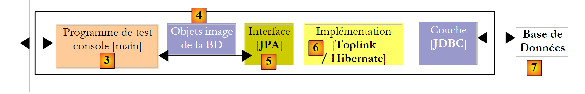 |
La couche JPA [5] doit faire un pont entre le monde relationnel de la base de données [7] et le monde objet [4] manipulé par les programmes Java [3]. Ce pont est fait par configuration et il y a deux façons de le faire :
- avec des fichiers XML. C'était quasiment l'unique façon de faire jusqu'à l'avènement du JDK 1.5
- avec des annotations Java depuis le JDK 1.5
Dans ce document, nous utiliserons quasi exclusivement la seconde méthode.
L'objet [Personne] image de la table [personne] présentée précédemment pourrait être le suivant :
...
@SuppressWarnings("unused")
@Entity
@Table(name="Personne")
public class Personne implements Serializable{
@Id
@Column(name = "ID", nullable = false)
@GeneratedValue(strategy = GenerationType.AUTO)
private Integer id;
@Column(name = "VERSION", nullable = false)
@Version
private int version;
@Column(name = "NOM", length = 30, nullable = false, unique = true)
private String nom;
@Column(name = "PRENOM", length = 30, nullable = false)
private String prenom;
@Column(name = "DATENAISSANCE", nullable = false)
@Temporal(TemporalType.DATE)
private Date datenaissance;
@Column(name = "MARIE", nullable = false)
private boolean marie;
@Column(name = "NBENFANTS", nullable = false)
private int nbenfants;
// constructeurs
public Personne() {
}
public Personne(String nom, String prenom, Date datenaissance, boolean marie,
int nbenfants) {
setNom(nom);
setPrenom(prenom);
setDatenaissance(datenaissance);
setMarie(marie);
setNbenfants(nbenfants);
}
// toString
public String toString() {
...
}
// getters and setters
...
}
La configuration se fait à l'aide d'annotations Java @Annotation. Les annotations Java sont soit exploitées par le compilateur, soit par des outils spécialisés au moment de l'exécution. En-dehors de l'annotation de la ligne 3 destinée au compilateur, toutes les annotations sont ici destinées à l'implémentation JPA utilisée, Hibernate ou Toplink. Elles seront donc exploitées à l'exécution. En l'absence des outils capables de les interpréter, ces annotations sont ignorées. Ainsi la classe [Personne] ci-dessus pourrait être exploitée dans un contexte hors JPA.
Il faut distinguer deux cas d'utilisation des annotations JPA dans une classe C associée à une table T :
- la table T existe déjà : les annotations JPA doivent alors reproduire l'existant (nom et définition des colonnes, contraintes d'intégrité, clés étrangères, clés primaires, ...)
- la table T n'existe pas et elle va être créée d'après les annotations trouvées dans la classe C.
Le cas 2 est le plus facile à gérer. A l'aide des annotations JPA, nous indiquons la structure de la table T que nous voulons. Le cas 1 est souvent plus complexe. La table T a pu être construite, il y a longtemps, en-dehors de tout contexte JPA. Sa structure peut alors être mal adaptée au pont relationnel / objet de JPA. Pour simplifier, nous nous plaçons dans le cas 2 où la table T associée à la classe C va être créée d'après les annotations JPA de la classe C.
Commentons les annotations JPA de la classe [Personne] :
- ligne 4 : l'annotation @Entity est la première annotation indispensable. Elle se place avant la ligne qui déclare la classe et indique que la classe en question doit être gérée par la couche de persistance JPA. En l'absence de cette annotation, toutes les autres annotations JPA seraient ignorées.
- ligne 5 : l'annotation @Table désigne la table de la base de données dont la classe est une représentation. Son principal argument est name qui désigne le nom de la table. En l'absence de cet argument, la table portera le nom de la classe, ici [Personne]. Dans notre exemple, l'annotation @Table est donc superflue.
- ligne 8 : l'annotation @Id sert à désigner le champ dans la classe qui est image de la clé primaire de la table. Cette annotation est obligatoire. Elle indique ici que le champ id de la ligne 11 est l'image de la clé primaire de la table.
- ligne 9 : l'annotation @Column sert à faire le lien entre un champ de la classe et la colonne de la table dont le champ est l'image. L'attribut name indique le nom de la colonne dans la table. En l'absence de cet attribut, la colonne porte le même nom que le champ. Dans notre exemple, l'argument name n'était donc pas obligatoire. L'argument nullable=false indique que la colonne associée au champ ne peut avoir la valeur NULL et que donc le champ doit avoir nécessairement une valeur.
- ligne 10 : l'annotation @GeneratedValue indique comment est générée la clé primaire lorsqu'elle est générée automatiquement par le SGBD. Ce sera le cas dans tous nos exemples. Ce n'est pas obligatoire. Ainsi notre personne pourrait avoir un n° étudiant qui servirait de clé primaire et qui ne serait pas généré par le SGBD mais fixé par l'application. Dans ce cas, l'annotation @GeneratedValue serait absente. L'argument strategy indique comment est générée la clé primaire lorsqu'elle est générée par le SGBD. Les SGBD n'ont pas tous la même technique de génération des valeurs de clé primaire. Par exemple :
utilise un générateur de valeurs appelée avant chaque insertion | |
le champ clé primaire est défini comme ayant le type Identity. On a un résultat similaire au générateur de valeurs de Firebird, si ce n'est que la valeur de la clé n'est connue qu'après l'insertion de la ligne. | |
utilise un objet appelé SEQUENCE qui là encore jouele rôle d'un générateur de valeurs |
La couche JPA doit générer des ordres SQL différents selon les SGBD pour créer le générateur de valeurs. On lui indique par configuration le type de SGBD qu'elle a à gérer. Du coup, elle peut savoir quelle est la stratégie habituelle de génération de valeurs de clé primaire de ce SGBD. L'argument strategy = GenerationType.AUTO indique à la couche JPA qu'elle doit utiliser cette stratégie habituelle. Cette technique a fonctionné dans tous les exemples de ce document pour les sept SGBD utilisés.
- ligne 14 : l'annotation @Version désigne le champ qui sert à gérer les accès concurrents à une même ligne de la table.
Pour comprendre ce problème d'accès concurrents à une même ligne de la table [personne], supposons qu'une application web permette la mise à jour d'une personne et examinons le cas suivant :
Au temps T1, un utilisateur U1 entre en modification d’une personne P. A ce moment, le nombre d’enfants est 0. Il passe ce nombre à 1 mais avant qu’il ne valide sa modification, un utilisateur U2 entre en modification de la même personne P. Puisque U1 n’a pas encore validé sa modification, U2 voit sur son écran le nombre d’enfants à 0. U2 passe le nom de la personne P en majuscules. Puis U1 et U2 valident leurs modifications dans cet ordre. C’est la modification de U2 qui va gagner : dans la base, le nom va passer en majuscules et le nombre d’enfants va rester à zéro alors même que U1 croit l’avoir changé en 1.
La notion de version de personne nous aide à résoudre ce problème. On reprend le même cas d’usage :
Au temps T1, un utilisateur U1 entre en modification d’une personne P. A ce moment, le nombre d’enfants est 0 et la version V1. Il passe le nombre d’enfants à 1 mais avant qu’il ne valide sa modification, un utilisateur U2 entre en modification de la même personne P. Puisque U1 n’a pas encore validé sa modification, U2 voit le nombre d’enfants à 0 et la version à V1. U2 passe le nom de la personne P en majuscules. Puis U1 et U2 valident leurs modifications dans cet ordre. Avant de valider une modification, on vérifie que celui qui modifie une personne P détient la même version que la personne P actuellement enregistrée. Ce sera le cas de l’utilisateur U1. Sa modification est donc acceptée et on change alors la version de la personne modifiée de V1 à V2 pour noter le fait que la personne a subi un changement. Lors de la validation de la modification de U2, on va s’apercevoir que U2 détient une version V1 de la personne P, alors qu’actuellement la version de celle-ci est V2. On va alors pouvoir dire à l’utilisateur U2 que quelqu’un est passé avant lui et qu’il doit repartir de la nouvelle version de la personne P. Il le fera, récupèrera une personne P de version V2 qui a maintenant un enfant, passera le nom en majuscules, validera. Sa modification sera acceptée si la personne P enregistrée a toujours la version V2. Au final, les modifications faites par U1 et U2 seront prises en compte alors que dans le cas d’usage sans version, l’une des modifications était perdue.
La couche [dao] de l'application cliente peut gérer elle-même la version de la classe [Personne]. A chaque fois qu'il y aura une modification d'un objet P, la version de cet objet sera incrémentée de 1 dans la table. L'annotation @Version permet de transférer cette gestion à la couche JPA. Le champ concerné n'a nul besoin de s'appeler version comme dans l'exemple. Il peut porter un nom quelconque.
Les champs correspondant aux annotations @Id et @Version sont des champs présents à cause de la persistance. On n'en aurait pas besoin si la classe [Personne] n'avait pas besoin d'être persistée. On voit donc qu'un objet n'a pas la même représentation selon qu'il a besoin ou non d'être persisté.
- ligne 17 : de nouveau l'annotation @Column pour donner des informations sur la colonne de la table [personne] associée au champ nom de la classe Personne. On trouve ici deux nouveaux arguments :
- unique=true indique que le nom d'une personne doit être unique. Cela va se traduire dans la base de données par l'ajout d'une contrainte d'unicité sur la colonne NOM de la table [personne].
- length=30 fixe à 30 le nombre de caractères de la colonne NOM. Cela signifie que le type de cette colonne sera VARCHAR(30).
- ligne 24 : l'annotation @Temporal sert à indiquer quel type SQL donner à une colonne / champ de type date / heure. Le type TemporalType.DATE désigne une date seule sans heure associée. Les autres types possibles sont TemporalType.TIME pour coder une heure et TemporalType.TIMESTAMP pour coder une date avec heure.
Commentons maintenant le reste du code de la classe [Personne] :
- ligne 6 : la classe implémente l'interface Serializable. La sérialisation d'un objet consiste à le transformer en une suite de bits. La désérialisation est l'opération inverse. La sérialisation / désérialisation est notamment utilisée dans les applications client / serveur où des objets sont échangés via le réseau. Les applications clientes ou serveur sont ignorantes de cette opération qui est faite de façon transparente par les JVM. Pour qu'elle soit possible, il faut cependant que les classes des objets échangés soit " taguées " avec le mot clé Serializable.
- ligne 37 : un constructeur de la classe. On notera que les champs id et version ne font pas partie des paramètres. En effet, ces deux champs sont gérés par la couche JPA et non par l'application.
- lignes 51 et au-delà : les méthodes get et set de chacun des champs de la classe. Il est à noter que les annotations JPA peuvent être placées sur les méthodes get des champs au lieu d'être placées sur les champs eux-mêmes. La place des annotations indique le mode que doit utiliser JPA pour accéder aux champs :
- si les annotations sont mises au niveau champ, JPA accèdera directement aux champs pour les lire ou les écrire
- si les annotations sont mises au niveau get, JPA accèdera aux champs via les méthodes get / set pour les lire ou les écrire
C'est la position de l'annotation @Id qui fixe la position des annotations JPA d'une classe. Placée au niveau champ, elle indique un accès direct aux champs et placée au niveau get, un accès aux champs via les get et set. Les autres annotations doivent alors être placées de la même façon que l'annotation @Id.
2.1.3. Le projet Eclipse des tests
Nous allons mener nos premières expérimentations avec l'entité [Personne] précédente. Nous les mènerons avec l'architecture suivante :
 |
- en [7] : la base de données qui sera générée à partir des annotations de l'entité [Personne] ainsi que de configurations complémentaires faites dans un fichier appelé [persistence.xml]
- en [5, 6] : une couche JPA implémentée par Hibernate
- en [4] : l'entité [Personne]
- en [3] : un programme de test de type console
Nous ferons diverses expérimentations :
- générer le schéma de la BD à partir d'un script ant et de l'outil Hibernate Tools
- générer la BD et l'initialiser avec quelques données
- exploiter la BD et réaliser les quatre opérations de base sur la table [personne] (insertion, mise à jour, suppression, interrogation)
Les outils nécessaires sont les suivants :
- Eclipse et ses plugins décrit au paragraphe 5.2.
- le projet [hibernate-personnes-entites] qu'on trouvera dans le dossier <exemples>/hibernate/direct/personnes-entites
- les divers SGBD décrits en annexes (paragraphe 5 et au-delà).
Le projet Eclipse est le suivant :
 |
- en [1] : le dossier du projet Eclipse
- en [2] : le projet importé dans Eclipse (File / Import)
- en [3] : l'entité [Personne] objet des tests
- en [4] : les programmes de test
- en [5] : [persistence.xml] est le fichier de configuration de la couche JPA
- en [6] : les bibliothèques utilisées. Elles ont été décrites au paragraphe 1.5.
- en [8] : un script ant qui sera utilisé pour générer la table associée à l'entité [Personne]
- en [9] : les fichiers [persistence.xml] pour chacun des SGBD utilisés
- en [10] : les schémas de la base de données générée pour chacun des SGBD utilisés
Nous allons décrire ces éléments les uns après les autres.
2.1.4. L'entité [Personne] (2)
Nous amenons une légère modification à la description faite précédemment de l'entité [Personne] ainsi qu'un complément d'information :
package entites;
...
@SuppressWarnings({ "unused", "serial" })
@Entity
@Table(name="jpa01_personne")
public class Personne implements Serializable{
@Id
@Column(name = "ID", nullable = false)
@GeneratedValue(strategy = GenerationType.AUTO)
private Integer id;
@Column(name = "VERSION", nullable = false)
@Version
private int version;
@Column(name = "NOM", length = 30, nullable = false, unique = true)
private String nom;
@Column(name = "PRENOM", length = 30, nullable = false)
private String prenom;
@Column(name = "DATENAISSANCE", nullable = false)
@Temporal(TemporalType.DATE)
private Date datenaissance;
@Column(name = "MARIE", nullable = false)
private boolean marie;
@Column(name = "NBENFANTS", nullable = false)
private int nbenfants;
// constructeurs
public Personne() {
}
public Personne(String nom, String prenom, Date datenaissance, boolean marie,
int nbenfants) {
....
}
// toString
public String toString() {
return String.format("[%d,%d,%s,%s,%s,%s,%d]", getId(), getVersion(),
getNom(), getPrenom(), new SimpleDateFormat("dd/MM/yyyy")
.format(getDatenaissance()), isMarie(), getNbenfants());
}
// getters and setters
...
}
- ligne 7 : nous donnons le nom [jpa01_personne] à la table associée à l'entité [Personne]. Dans le document, diverses tables vont être créées dans un schéma toujours appelé jpa. A la fin de ce tutoriel, le schéma jpa contiendra de nombreuses tables. Afin que le lecteur s'y retrouve, les tables liées entre elles auront le même préfixe jpaxx_.
- ligne 45 : une méthode [toString] pour afficher un objet [Personne] sur la console.
2.1.5. Configuration de la couche d'accès aux données
Dans le projet Eclipse ci-dessus, la configuration de la couche JPA est assurée par le fichier [META-INF/persistence.xml] :
 |
A l'exécution, le fichier [META-INF/persistence.xml] est cherché dans le classpath de l'application. Dans notre projet Eclipse, tout ce qui est dans le dossier [/src] [1] est copié dans un dossier [/bin] [2]. Celui-ci fait partie du classpath du projet. C'est pour cette raison que [META-INF/persistence.xml] sera trouvé lorsque la couche JPA se configurera.
Par défaut, Eclipse ne met pas les codes sources dans le dossier [/src] du projet mais directement sous le dossier lui-même. Tous nos projets Eclipse seront eux configurés pour que les sources soient dans [/src] et les classes compilées dans [/bin] comme il est montré au paragraphe 5.2.1.
Examinons la configuration de la couche JPA faite dans le fichier [persistence.xml] de notre projet :
<?xml version="1.0" encoding="UTF-8"?>
<persistence version="1.0" xmlns="http://java.sun.com/xml/ns/persistence">
<persistence-unit name="jpa" transaction-type="RESOURCE_LOCAL">
<!-- provider -->
<provider>org.hibernate.ejb.HibernatePersistence</provider>
<properties>
<!-- Classes persistantes -->
<property name="hibernate.archive.autodetection" value="class, hbm" />
<!-- logs SQL
<property name="hibernate.show_sql" value="true"/>
<property name="hibernate.format_sql" value="true"/>
<property name="use_sql_comments" value="true"/>
-->
<!-- connexion JDBC -->
<property name="hibernate.connection.driver_class" value="com.mysql.jdbc.Driver" />
<property name="hibernate.connection.url" value="jdbc:mysql://localhost:3306/jpa" />
<property name="hibernate.connection.username" value="jpa" />
<property name="hibernate.connection.password" value="jpa" />
<!-- création automatique du schéma -->
<property name="hibernate.hbm2ddl.auto" value="create" />
<!-- Dialecte -->
<property name="hibernate.dialect" value="org.hibernate.dialect.MySQL5InnoDBDialect" />
<!-- propriétés DataSource c3p0 -->
<property name="hibernate.c3p0.min_size" value="5" />
<property name="hibernate.c3p0.max_size" value="20" />
<property name="hibernate.c3p0.timeout" value="300" />
<property name="hibernate.c3p0.max_statements" value="50" />
<property name="hibernate.c3p0.idle_test_period" value="3000" />
</properties>
</persistence-unit>
</persistence>
Pour comprendre cette configuration, il nous faut revenir sur l'architecture de l'accès aux données de notre application :
 |
- le fichier [persistence.xml] va configurer les couches [4, 5, 6]
- [4] : implémentation Hibernate de JPA
- [5] : Hibernate accède à la base de données via un pool de connexions. Un pool de connexions est une réserve de connexions ouvertes avec le SGBD. Un SGBD est accédé par de multiples utilisateurs alors même que pour des raisons de performances, il ne peut dépasser un nombre limite N de connexions ouvertes simultanément. Un code bien écrit ouvre une connexion avec le SGBD un minimum de temps : il émet des ordres SQL et ferme la connexion. Il va faire cela de façon répétée, à chaque fois qu'il a besoin de travailler avec la base. Le coût d'ouverture / fermeture d'une connexion n'est pas négligeable et c'est là qu'intervient le pool de connexions. Celui-ci va au démarrage de l'application ouvrir N1 connexions avec le SGBD. C'est à lui que l'application demandera une connexion ouverte lorsqu'elle en aura besoin. Celle-ci sera rendue au pool dès que l'application n'en aura plus besoin, de préférence le plus vite possible. La connexion n'est pas fermée et reste disponible pour l'utilisateur suivant. Un pool de connexions est donc un système de partage de connexions ouvertes.
- [6] : le pilote JDBC du SGBD utilisé
Maintenant voyons comment le fichier [persistence.xml] configure les couches [4, 5, 6] ci-dessus :
- ligne 2 : la balise racine du fichier XML est <persistence>.
- ligne 3 : <persistence-unit> sert à définir une unité de persistance. Il peut y avoir plusieurs unités de persistance. Chacune d'elles a un nom (attribut name) et un type de transactions (attribut transaction-type). L'application aura accès à l'unité de persistance via le nom de celle-ci, ici jpa. Le type de transaction RESOURCE_LOCAL indique que l'application gère elle-même les transactions avec le SGBD. Ce sera le cas ici. Lorsque l'application s'exécute dans un conteneur EJB3, elle peut utiliser le service de transactions de celui-ci. Dans ce cas, on mettra transaction-type=JTA (Java Transaction Api). JTA est la valeur par défaut lorsque l'attribut transaction-type est absent.
- ligne 5 : la balise <provider> sert à définir une classe implémentant l'interface [javax.persistence.spi.PersistenceProvider], interface qui permet à l'application d'initialiser la couche de persistance. Parce qu'on utilise une implémentation JPA / Hibernate, la classe utilisée ici est une classe d'Hibernate.
- ligne 6 : la balise <properties> introduit des propriétés propres au provider particulier choisi. Ainsi selon qu'on a choisi Hibernate, Toplink, Kodo, ... on aura des propriétés différentes. Celles qui suivent sont propres à Hibernate.
- ligne 8 : demande à Hibernate d'explorer le classpath du projet pour y trouver les classes ayant l'annotation @Entity afin de les gérer. Les classes @Entity peuvent également être déclarées par des balises <class>nom_de_la_classe</class>, directement sous la balise <persistence-unit>. C'est ce que nous ferons avec le provider JPA / Toplink.
- les lignes 10-12, ici mises en commentaires configurent les logs console d'Hibernate :
- ligne 10 : pour afficher ou non les ordres SQL émis par Hibernate sur le SGBD. Ceci est très utile lors de la phase d'apprentissage. A cause du pont relationnel / objet, l'application travaille sur des objets persistants sur lesquels elle applique des opérations de type [persist, merge, remove]. Il est très intéressant de savoir quels sont les ordres SQL réellement émis sur ces opérations. En les étudiant, peu à peu on en vient à deviner les ordres SQL qu'Hibernate va générer lorsqu'on fait telle opération sur les objets persistants et le pont relationnel / objet commence à prendre consistance dans l'esprit.
- ligne 11 : les ordres SQL affichés sur la console peuvent être formatés joliment pour rendre leur lecture plus aisée
- ligne 12 : les ordres SQL affichés seront de plus commentés
- les lignes 15-19 définissent la couche JDBC (couche [6] dans l'architecture) :
- ligne 15 : la classe du pilote JDBC du SGBD, ici MySQL5
- ligne 16 : l'url de la base de données utilisée
- lignes 17, 18 : l'utilisateur de la connexion et son mot de passe
Nous utilisons ici des éléments expliqués en annexes au paragraphe 5.5. Le lecteur est invité à lire cette section sur MySQL5. - ligne 22 : Hibernate a besoin de connaître le SGBD qu'il a en face de lui. En effet, les SGBD ont tous des extensions SQL propriétaires, une façon propre de gérer la génération automatique des valeurs d'une clé primaire, ... qui font qu'Hibernate a besoin de connaître le SGBD avec qui il travaille afin de lui envoyer les ordres SQL que celui-ci comprendra. [MySQL5InnoDBDialect] désigne le SGBD MySQL5 avec des tables de type InnoDB qui supportent les transactions.
- les lignes 24-28 configurent le pool de connexions c3p0 (couche [5] dans l'architecture) :
- lignes 24, 25 : le nombre minimal (défaut 3) et maximal de connexions (défaut 15) dans le pool. Le nombre initial de connexions par défaut est 3.
- ligne 26 : durée maximale en milli-secondes d'attente d'une demande de connexion de la part du client. Passé ce délai, c3p0 lui renverra une exception.
- ligne 27 : pour accéder à la BD, Hibernate utilise des ordres SQL préparés (PreparedStatement) que c3p0 peut mettre en cache. Cela signifie que si l'application demande une seconde fois un ordre SQL préparé déjà en cache, celui-ci n'aura pas besoin d'être préparé (la préparation d'un ordre SQL a un coût) et celui qui est en cache sera utilisé. Ici, on indique le nombre maximal d'ordres SQL préparés que le cache peut contenir, toutes connexions confondues (un ordre SQL préparé appartient à une connexion).
- ligne 28 : fréquence de vérification en milli-secondes de la validité des connexions. Une connexion du pool peut devenir invalide pour diverses raisons (le pilote JDBC invalide la connexion parce qu'elle est trop longue, le pilote JDBC présente des " bugs ", ...).
- ligne 20 : on demande ici, qu'à l'initialisation de l'unité de persistance, la base de données image des objets @Entity soit générée. Hibernate a désormais tous les outils pour émettre les ordres SQL de génération des tables de la base de données :
- la configuration des objets @Entity lui permet de connaître les tables à générer
- les lignes 15-18 et 24-28 lui permettent d'obtenir une connexion avec le SGBD
- la ligne 22 lui permet de savoir quel dialecte SQL utiliser pour générer les tables
Ainsi le fichier [persistence.xml] utilisé ici recrée une base neuve à chaque nouvelle exécution de l'application. Les tables sont recréées (create table) après avoir été détruites (drop table) si elles existaient. On notera que ce n'est évidemment pas à faire avec une base en production...
Les tests ont montré que la phase drop / create des tables pouvait échouer. Cela a notamment été le cas lorsque, pour un même test, on passait d'une couche JPA/Hibernate à une couche JPA/Toplink ou vice-versa. A partir des mêmes objets @Entity, les deux implémentations ne génèrent pas strictement les mêmes tables, générateurs, séquences, ... et il est arrivé parfois, que la phase drop /create échoue et qu'on soit obligés de supprimer les tables à la main. La partie "Annexes", paragraphe 5 et au-delà, décrit les applications utilisables pour faire ce travail à la main. On notera que l'implémentation JPA/Hibernate s'est montrée la plus efficace dans cette phase de création initiale du contenu de la base : rares ont été les plantages.
Les outils utilisés par la couche JPA / Hibernate sont dans la bibliothèque [jpa-hibernate], présentée au paragraphe 1.5, page 8. Les pilotes JDBC nécessaires pour accéder aux SGBD sont dans la bibliothèque [jpa-divers]. Ces deux bibliothèques ont été mises dans le classpath du projet étudié ici. Nous rappelons ci-dessous leur contenu :
 |
2.1.6. Génération de la base de données avec un script Ant
Nous venons de le voir, Hibernate fournit des outils pour générer la base de données image des objets @Entity de l'application. Hibernate peut :
- générer le fichier texte des ordres SQL générant la base. Seul le dialecte dans [persistence.xml] est alors utilisé.
- créer les tables images des objets @Entity dans la base de données cible définie dans [persistence.xml]. C'est alors la totalité du fichier [persistence.xml] qui est utilisé.
Nous allons présenter un script Ant capable de générer le schéma de la base de données, image des objets @Entity. Ce script n'est pas le mien : il reprend un script analogue de [ref1]. Ant (Another Neat Tool) est un outil de batch de tâches Java. Les scripts Ant ne sont pas simples à comprendre pour le néophyte. Nous n'en utiliserons qu'un seul, celui que nous commentons maintenant :
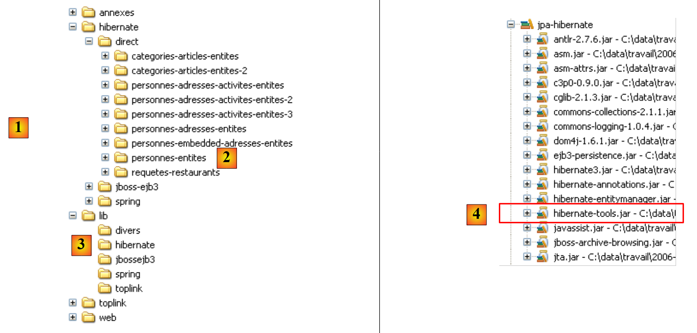 |
- en [1] : l'arborescence des exemples de ce tutoriel.
- en [2] : le dossier [personnes-entites] du projet Eclipse actuellement étudié
- en [3] : le dossier <lib> contenant les cinq bibliothèques de jars définies paragraphe 1.5.
- en [4] : l'archive [hibernate-tools.jar] nécessaire à l'une des tâches du script [ant-hibernate.xml] que nous allons étudier.
 |
- en [5] : le projet Eclipse et le script [ant-hibernate.xml]
- en [6] : le dossier [src] du projet
Le script [ant-hibernate.xml] [5] va utiliser les archives jars du dossier <lib> [3], notamment l'archive [hibernate-tools.jar] [4] du dossier [lib/hibernate]. Nous avons reproduit l'arborescence des dossiers afin que le lecteur voit que pour trouver le dossier [lib] à partir du dossier [personnes-entites] [2] du script [ant-hibernate.xml], il faut suivre le chemin : ../../../lib.
Examinons le script [ant-hibernate.xml] :
<project name="jpa-hibernate" default="compile" basedir=".">
<!-- nom du projet et version -->
<property name="proj.name" value="jpa-hibernate" />
<property name="proj.shortname" value="jpa-hibernate" />
<property name="version" value="1.0" />
<!-- Propriété globales -->
<property name="src.java.dir" value="src" />
<property name="lib.dir" value="../../../lib" />
<property name="build.dir" value="bin" />
<!-- le Classpath du projet -->
<path id="project.classpath">
<fileset dir="${lib.dir}">
<include name="**/*.jar" />
</fileset>
</path>
<!-- les fichiers de configuration qui doivent être dans le classpath-->
<patternset id="conf">
<include name="**/*.xml" />
<include name="**/*.properties" />
</patternset>
<!-- Nettoyage projet -->
<target name="clean" description="Nettoyer le projet">
<delete dir="${build.dir}" />
<mkdir dir="${build.dir}" />
</target>
<!-- Compilation projet -->
<target name="compile" depends="clean">
<javac srcdir="${src.java.dir}" destdir="${build.dir}" classpathref="project.classpath" />
</target>
<!-- Copier les fichiers de configuration dans le classpath -->
<target name="copyconf">
<mkdir dir="${build.dir}" />
<copy todir="${build.dir}">
<fileset dir="${src.java.dir}">
<patternset refid="conf" />
</fileset>
</copy>
</target>
<!-- Hibernate Tools -->
<taskdef name="hibernatetool" classname="org.hibernate.tool.ant.HibernateToolTask" classpathref="project.classpath" />
<!-- Générer la DDL de la base -->
<target name="DDL" depends="compile, copyconf" description="Génération DDL base">
<hibernatetool destdir="${basedir}">
<classpath path="${build.dir}" />
<!-- Utiliser META-INF/persistence.xml -->
<jpaconfiguration />
<!-- export -->
<hbm2ddl drop="true" create="true" export="false" outputfilename="ddl/schema.sql" delimiter=";" format="true" />
</hibernatetool>
</target>
<!-- Générer la base -->
<target name="BD" depends="compile, copyconf" description="Génération BD">
<hibernatetool destdir="${basedir}">
<classpath path="${build.dir}" />
<!-- Utiliser META-INF/persistence.xml -->
<jpaconfiguration />
<!-- export -->
<hbm2ddl drop="true" create="true" export="true" outputfilename="ddl/schema.sql" delimiter=";" format="true" />
</hibernatetool>
</target>
</project>
- ligne 1 : le projet [ant] s'appelle "jpa-hibernate". Il rassemble un ensemble de tâches dont l'une est la tâche par défaut : ici la tâche nommée "compile". Un script ant est appelé pour exécuter une tâche T. Si celle-ci n'est pas précisée, c'est la tâche par défaut qui est exécutée. basedir="." indique que pour tous les chemins relatifs trouvés dans le script, le point de départ est le dossier dans lequel se trouve le script ant, ici le dossier <exemples>/hibernate/direct/personnes-entites.
- lignes 3-11 : définissent des variables de script avec la balise <property name="nomVariable" value="valeurVariable"/>. La variable peut ensuite être utilisée dans le script avec la notation ${nomVariable}. Les noms peuvent être quelconques. Attardons-nous sur les variables définies aux lignes 9-11 :
- ligne 9 : définit une variable nommée "src.java.dir" (le nom est libre) qui va, dans la suite du script, désigner le dossier qui contient les codes source Java. Sa valeur est "src", un chemin relatif au dossier désigné par l'attribut basedir (ligne 1). Il s'agit donc du chemin "./src" où . désigne ici le dossier <exemples>/hibernate/direct/personnes-entites. C'est bien dans le dossier <personnes-entites>/src que se trouvent les codes source Java (cf [6] plus haut).
- ligne 10 : définit une variable nommée "lib.dir" qui va, dans la suite du script, désigner le dossier qui contient les archives jars dont ont besoin les tâches Java du script. Sa valeur ../../../lib désigne le dossier <exemples>/lib (cf [3] plus haut).
- ligne 11 : définit une variable nommée "build.dir" qui va, dans la suite du script, désigner le dossier où doivent être générés les .class issus de la compilation des sources .java. Sa valeur "bin" désigne le dossier <personnes-entites>/bin. Nous avons déjà expliqué que dans le projet Eclipse étudié, le dossier <bin> était celui où étaient générés les .class. Ant va faire de même.
- lignes 14-18 : la balise <path> sert à définir des éléments du classpath que devront utiliser les tâches ant. Ici, le path "project.classpath" (le nom est libre) rassemble toutes les archives .jar de l'arborescence du dossier <exemples>/lib.
- lignes 21-24 : la balise <patternset> sert à désigner un ensemble de fichiers par des modèles de noms. Ici, le patternset nommé conf désigne tous les fichiers ayant le suffixe .xml ou .properties. Ce patternset va servir à désigner les fichiers .xml et .properties du dossier <src> (persistence.xml, log4j.properties) (cf [6]) qui sont des fichiers de configuration de l'application. Au moment de l'exécution de certaines tâches, ces fichiers doivent être recopiés dans le dossier <bin> afin qu'ils soient dans le classpath du projet. On utilisera alors le patternset conf, pour les désigner.
- lignes 27-30 : la balise <target> désigne une tâche du script. C'est la première que nous rencontrons. Tout ce qui a précédé relève de la configuration de l'environnement d'exécution du script ant. La tâche s'appelle clean. Elle s'exécute en deux temps : le dossier <bin> est supprimé (ligne 28) pour être ensuite recréé (ligne 29).
- lignes 33-35 : la tâche compile qui est la tâche par défaut du script (ligne 1). Elle dépend (attribut depends) de la tâche clean. Cela signifie qu'avant d'exécuter la tâche compile, ant doit exécuter la tâche clean, c.a.d. nettoyer le dossier <bin>. Le but de la tâche compile est ici de compiler les sources Java du dossier <src>.
- ligne 34 : appel du compilateur Java avec trois paramètres :
- srcdir : le dossier contenant les sources java, ici le dossier <src>
- destdir : le dossier où doivent être rangés les .class générés, ici le dossier <bin>
- classpathref : le classpath à utiliser pour la compilation, ici toutes les archives jar de l'arborescence du dossier <lib>
- (suite)
- lignes 38-45 : la tâche copyconf dont le but est de copier dans le dossier <bin> tous les fichiers .xml et .properties du fichier <src>.
- ligne 48 : définition d'une tâche à l'aide de la balise <taskdef>. Une telle tâche a vocation à être réutilisée ailleurs dans le script. C'est une facilité de codage. Parce que la tâche est utilisée à divers endroits du script, on la définit une fois avec la balise <taskdef> et on la réutilise ensuite via son nom, lorsqu'on en a besoin.
- la tâche s'appelle hibernatetool (attribut name).
- sa classe est définie par l'attribut classname. Ici, la classe désignée sera trouvée dans l'archive [hibernate-tools.jar] dont nous avons déjà parlée.
- l'attribut classpathref indique à ant où chercher la classe précédente
- (suite)
- les lignes 51-60 concernent la tâche qui nous intéresse ici, celle de la génération du schéma de la base de données image des objets @Entity de notre projet Eclipse.
- ligne 51 : la tâche s'appelle DDL (comme Data Definition Language, le SQL associé à la création des objets d'une base de données). Elle dépend des tâches compile et copyconf dans cet ordre. La tâche DDL va donc provoquer, dans l'ordre, l'exécution des tâches clean, compile et copyconf. Lorsque la tâche DDL démarre, le dossier <bin> contient les .class des sources .java, notamment des objets @Entity, ainsi que le fichier [META-INF/persistence.xml] qui configure la couche JPA / Hibernate.
- lignes 53-59 : la tâche [hibernatetool] définie ligne 48 est appelée. On lui passe de nombreux paramètes, outre ceux déjà définis ligne 48 :
- ligne 53 : le dossier de sortie des résultats produits par la tâche sera le dossier courant .
- ligne 54 : le classpath de la tâche sera le dossier <bin>
- ligne 56 : indique à la tâche [hibernatetool] comment elle peut connaître son environnement d'exécution : la balise <jpaconfiguration/> lui indique qu'elle est dans un environnement JPA et qu'elle doit donc utiliser le fichier [META-INF/persistence.xml] qu'elle trouvera ici dans son classpath.
- la ligne 58 fixe les conditions de génération de la base de données : drop=true indique que des ordres SQL drop table doivent être émis avant la création des tables, create=true indique que le fichier texte des ordres SQL de création de la base doit être créé, outputfilename indique le nom de ce fichier SQL - ici schema.sql dans le dossier <ddl> du projet Eclipse, export=false indique que les ordres SQL générés ne doivent pas être joués dans une connexion au SGBD. Ce point est important : il implique que pour exécuter la tâche, le SGBD cible n'a pas besoin d'être lancé. delimiter fixe le caractère qui sépare deux ordres SQL dans le schéma généré, format=true demande à ce qu'un formatage de base soit fait sur le texte généré.
- les lignes 51-60 concernent la tâche qui nous intéresse ici, celle de la génération du schéma de la base de données image des objets @Entity de notre projet Eclipse.
- (suite)
- les lignes 63-72 définissent la tâche nommée BD. Elle est identique à la tâche DDL précédente, si ce n'est que cette fois elle génère la base de données (export="true" de la ligne 70). La tâche ouvre une connexion sur le SGBD avec les informations trouvées dans [persistence.xml], pour y jouer le schéma SQL et générer la base de données. Pour exécuter la tâche BD, il faut donc que le SGBD soit lancé.
2.1.7. Exécution de la tâche ant DDL
Pour exécuter le script [ant-hibernate.xml], il nous faut faire tout d'abord quelques configurations au sein d'Eclipse.
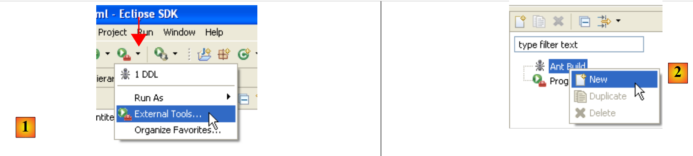 |
- en [1] : sélectionner [External Tools]
- en [2] : créer une nouvelle configuration ant
 |
- en [3] : donner un nom à la configuration ant
- en [5] : désigner le script ant à l'aide du bouton [4]
- en [6] : appliquer les modifications
- en [7] : on a créé la configuration ant DDL
 |
 |
- en [8] : dans l'onglet JRE, on définit le JRE à utiliser. Le champ [10] est normalement pré-rempli avec le JRE utilisé par Eclipse. Il n'y a donc normalement rien à faire sur ce panneau. Néanmoins j'ai rencontré un cas où le script ant n'arrivait pas à trouver le compilateur <javac>. Celui-ci n'est pas dans un JRE (Java Runtime Environment) mais dans un JDK (Java Development Kit). L'outil ant d'Eclipse trouve ce compilateur via la variable d'environnement JAVA_HOME ( Démarrer / Panneau de configuration / Performances et Maintenance / Système / onglet Avancé / bouton Variables d'environnement ) [A]. Si cette variable n'a pas été définie, on peut permettre à ant de trouver le compilateur <javac> en mettant dans [10], non pas un JRE mais un JDK. Celui-ci est disponible dans le même dossier que le JRE [B]. On utilisera le bouton [9] pour déclarer le JDK parmi les JRE disponibles [C] afin de pouvoir ensuite le sélectionner dans [10].
- en [12] : dans l'onglet [Targets], on sélectionne la tâche DDL. Ainsi la configuration ant que nous avons appelée DDL [7] correspondra à l'exécution de la tâche appelée DDL [12] qui, on le sait, génère le schéma DDL de la base de donnée image des objets @Entity de l'application.
 |
- en [13] : on valide la configuration
- en [14] : on l'exécute
On obtient dans la vue [console] des logs de l'exécution de la tâche ant DDL :
Buildfile: C:\data\2006-2007\eclipse\dvp-jpa\hibernate\direct\personnes-entites\ant-hibernate.xml
clean:
[delete] Deleting directory C:\data\2006-2007\eclipse\dvp-jpa\hibernate\direct\personnes-entites\bin
[mkdir] Created dir: C:\data\2006-2007\eclipse\dvp-jpa\hibernate\direct\personnes-entites\bin
compile:
[javac] Compiling 3 source files to C:\data\2006-2007\eclipse\dvp-jpa\hibernate\direct\personnes-entites\bin
copyconf:
[copy] Copying 2 files to C:\data\2006-2007\eclipse\dvp-jpa\hibernate\direct\personnes-entites\bin
DDL:
[hibernatetool] Executing Hibernate Tool with a JPA Configuration
[hibernatetool] 1. task: hbm2ddl (Generates database schema)
[hibernatetool] drop table if exists jpa01_personne;
[hibernatetool] create table jpa01_personne (
[hibernatetool] ID integer not null auto_increment,
[hibernatetool] VERSION integer not null,
[hibernatetool] NOM varchar(30) not null unique,
[hibernatetool] PRENOM varchar(30) not null,
[hibernatetool] DATENAISSANCE date not null,
[hibernatetool] MARIE bit not null,
[hibernatetool] NBENFANTS integer not null,
[hibernatetool] primary key (ID)
[hibernatetool] ) ENGINE=InnoDB;
BUILD SUCCESSFUL
Total time: 5 seconds
- on se rappelle que la tâche DDL a pour nom [hibernatetool] (ligne 10) et qu'elle dépend des tâches clean (ligne 2), compile (ligne 5) et copyconf (ligne 7).
- ligne 10 : la tâche [hibernatetool] exploite le fichier [persistence.xml] d'une configuration JPA
- ligne 11 : la tâche [hbm2ddl] va générer le schéma DDL de la base de données
- lignes 12-22 : le schéma DDL de la base de données
On se souvient qu'on avait demandé à la tâche [hbm2ddl] de générer le schéma DDL à un endroit précis :
<hbm2ddl drop="true" create="true" export="true" outputfilename="ddl/schema.sql" delimiter=";" format="true" />
- ligne 74 : le schéma doit être généré dans le fichier ddl/schema.sql. Vérifions :
 |
- en [1] : le fichier ddl/schema.sql est bien présent (faire F5 pour rafraîchir l'arborescence)
- en [2] : son contenu. Celui-ci est le schéma d'une base MySQL5. Le fichier [persistence.xml] de configuration de la couche JPA précisait en effet un SGBD MySQL5 (ligne 8 ci-dessous) :
<!-- connexion JDBC -->
<property name="hibernate.connection.driver_class" value="com.mysql.jdbc.Driver" />
...
<!-- création automatique du schéma -->
<property name="hibernate.hbm2ddl.auto" value="create" />
<!-- Dialecte -->
<property name="hibernate.dialect" value="org.hibernate.dialect.MySQL5InnoDBDialect" />
<!-- propriétés DataSource c3p0 -->
...
Examinons le pont objet / relationnel qui a été fait ici en examinant la configuration de l'objet @Entity Personne et le schéma DDL généré :
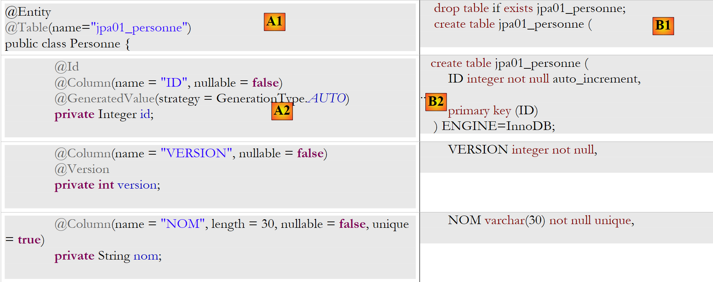 |
 |
On notera quelques points :
- A1-B1 : le nom de la table précisée en A1 est bien celle utilisée en B1. On notera le drop qui précède le create en B1.
- A2-B2 : montrent le mode de génération de la clé primaire. Le mode AUTO précisé en A2 s'est traduit par l'attribut autoincrement propre à MySQL5. Le mode de génération de la clé primaire est le plus souvent spécifique au SGBD.
- A3-B3 : montrent le type SQL bit propre à MySQL5 pour représenter un type boolean Java.
Recommençons ce test avec un autre SGBD :
 |
- le dossier [conf] [1] contient les fichiers [persistence.xml] pour divers SGBD. Prendre celui d'Oracle [2] par exemple et le mettre dans le dossier [META-INF] [3] à la place du précédent. Son contenu est le suivant :
<?xml version="1.0" encoding="UTF-8"?>
<persistence version="1.0" xmlns="http://java.sun.com/xml/ns/persistence">
<persistence-unit name="jpa" transaction-type="RESOURCE_LOCAL">
<!-- provider -->
<provider>org.hibernate.ejb.HibernatePersistence</provider>
<properties>
<!-- Classes persistantes -->
<property name="hibernate.archive.autodetection" value="class, hbm" />
<!-- logs SQL
<property name="hibernate.show_sql" value="true"/>
<property name="hibernate.format_sql" value="true"/>
<property name="use_sql_comments" value="true"/>
-->
<!-- connexion JDBC -->
<property name="hibernate.connection.driver_class" value="oracle.jdbc.OracleDriver" />
<property name="hibernate.connection.url" value="jdbc:oracle:thin:@localhost:1521:xe" />
<property name="hibernate.connection.username" value="jpa" />
<property name="hibernate.connection.password" value="jpa" />
<!-- création automatique du schéma -->
<property name="hibernate.hbm2ddl.auto" value="create" />
<!-- Dialecte -->
<property name="hibernate.dialect" value="org.hibernate.dialect.OracleDialect" />
<!-- propriétés DataSource c3p0 -->
<property name="hibernate.c3p0.min_size" value="5" />
<property name="hibernate.c3p0.max_size" value="20" />
<property name="hibernate.c3p0.timeout" value="300" />
<property name="hibernate.c3p0.max_statements" value="50" />
<property name="hibernate.c3p0.idle_test_period" value="3000" />
</properties>
</persistence-unit>
</persistence>
Le lecteur est invité à lire en annexes, la section sur Oracle (paragraphe 5.7), notamment pour comprendre la configuration JDBC.
Seule la ligne 25 est véritablement importante ici : on indique à Hibernate que désormais le SGBD est un SGBD Oracle. L'exécution de la tâche ant DDL donne le résultat [4] ci-dessus. On remarquera que le schéma Oracle est différent du schéma MySQL5. C'est un point fort de JPA : le développeur n'a pas besoin de se préoccuper de ces détails, ce qui augmente considérablement la portabilité de ses développements.
2.1.8. Exécution de la tâche ant BD
On se rappelle peut-être que la tâche ant nommée BD fait la même chose que la tâche ant DDL mais génère de plus la base de données. Il faut donc que le SGBD soit lancé. Nous nous plaçerons dans le cas du SGBD MySQL5 et nous invitons le lecteur à copier le fichier [conf/mysql5/persistence.xml] dans le dossier [src/META-INF]. Pour contrôler le fonctionnement de la tâche, nous allons utiliser le plugin SQL Explorer (cf paragraphe 5.2.6) pour vérifier l'état de la BD jpa avant et après exécution de la tâche ant BD.
Tout d'abord, il nous faut créer une nouvelle configuration ant pour exécuter la tâche BD. Le lecteur est invité à suivre la démarche exposée pour la configuration ant DDL au paragraphe 2.1.7. La nouvelle configuration ant s'appellera BD :
 |
- en [1] : on duplique la configuration précédente appelée DDL
- en [2] : on nomme BD la nouvelle configuration. Elle exécute la tâche ant BD [3] qui génère physiquement la base de données.
- ceci fait, lancer le SGBD MySQL5 (paragraphe 5.5).
Nous utilisons maintenant le plugin SQL Explorer pour explorer les bases gérées par le SGBD. Le lecteur doit auparavant prendre en main ce plugin si besoin est (cf paragraphe 5.2.6).
 |
- [1] : on ouvre la perspective SQL Explorer [Window / Open Perspective / Other]
- [2] : on crée si besoin est une connexion [mysql5-jpa] (cf paragraphe 5.5.5, page 252) et on l'ouvre
- [3] : on s'identifie jpa / jpa
- [4] : on est connectés à MySQL5.
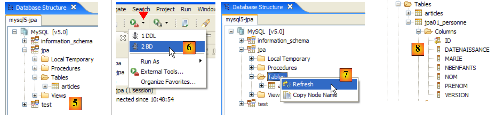 |
- en [5] : la BD jpa n'a qu'une table : [articles]
- en [6] : on lance l'exécution de la tâche ant BD. Parce qu'on est dans la perspective [SQL Explorer], on ne voit pas la vue [Console] qui nous montre les logs de la tâche. On peut afficher cette vue [Window / Show View / ...] ou revenir à la perspective Java [Window / Open Perspective / ...].
- en [7] : une fois la tâche ant BD achevée, revenir éventuellement dans la perspective [SQL Explorer] et rafraîchir l'arborescence de la BD jpa.
- en [8] : on voit la table [jpa01_personne] qui a été créée.
Le lecteur est invité à refaire cette génération de BD avec d'autres SGBD. La procédure à suivre est la suivante :
- copier le fichier [conf/<sgbd>/persistence.xml] dans le dossier [src/META-INF] où <sgbd> est le SGBD testé
- lancer <sgbd> en suivant les instructions en annexes concernant celui-ci
- dans la perspective SQL Explorer, créer une connexion à <sgbd>. Ceci est également expliqué en annexes pour chacun des SGBD
- refaire les tests précédents
Arrivés ici, nous avons un certain nombre d'acquis :
- nous comprenons mieux la notion de pont objet / relationnel. Ici il a été réalisé par Hibernate. Nous utiliserons plus tard Toplink.
- nous savons que ce pont objet / relationnel est configuré à deux endroits :
- dans les objets @Entity, où on indique les liens entre champs des objets et colonnes des tables de la BD
- dans [META-INF/persistence.xml], où on donne à l'implémentation JPA des informations sur les deux éléments du pont objet / relationnel : les objets @Entity (objet) et la base de données (relationnel).
- nous avons créé deux tâches ant, appelées DDL et BD qui nous permettent de créer la base de données à partir de la configuration précédente, avant même toute écriture de code Java.
Maintenant que la couche JPA de notre application est correctement configurée, nous pouvons commencer à explorer l'API JPA avec du code Java.
2.1.9. Le contexte de persistance d'une application
Explicitons un peu l'environnement d'exécution d'un client JPA :
 |
Nous savons que le couche JPA [2] crée un pont objet [3] / relationnel [4]. On appelle " contexte de persistance " l'ensemble des objets gérés par la couche JPA dans le cadre de ce pont objet / relationnel. Pour accéder aux données du contexte de persistance, un client JPA [1] doit passer par la couche JPA [2] :
- il peut créer un objet et demander à la couche JPA de le rendre persistant. L'objet fait alors partie du contexte de persistance.
- il peut demander à la couche [JPA] une référence d'un objet persistant existant.
- il peut modifier un objet persistant obtenu de la couche JPA.
- il peut demander à la couche JPA de supprimer un objet du contexte de persistance.
La couche JPA présente au client une interface appelée [EntityManager] qui, comme son nom l'indique permet de gérer les objets @Entity du contexte de persistance. Nous présentons ci-dessous, les principales méthodes de cette interface :
met entity dans le contexte de persistance | |
enlève entity du contexte de persistance | |
fusionne un objet entity du client non géré par le contexte de persistance avec l'objet entity du contexte de persistance ayant la même clé primaire. Le résultat rendu est l'objet entity du contexte de persistance. | |
met dans le contexte de persistance, un objet cherché dans la base de données via sa clé primaire. Le type T de l'objet permet à la couche JPA de savoir quelle table requêter. L'objet persistant ainsi créé est rendu au client. | |
crée un objet Query à partir d'une requête JPQL (Java Persistence Query Language). Une requête JPQL est analogue à une requête SQL si ce n'est qu'on requête des objets plutôt que des tables. | |
méthode analogue à la précédente, si ce n'est que queryText est, un ordre SQL et non JPQL. | |
méthode identique à createQuery, si ce n'est que l'ordre JPQL queryText a été externalisé dans un fichier de configuration et associé à un nom. C'est ce nom qui est le paramètre de la méthode. |
Un objet EntityManager a un cycle de vie qui n'est pas forcément celui de l'application. Il a un début et une fin. Ainsi un client JPA peut travailler successivement avec différents objets EntityManager. Le contexte de persistance associé à un EntityManager a le même cycle de vie que lui. Ils sont indissociables l'un de l'autre. Lorsque un objet EntityManager est fermé, son contexte de persistance est si nécessaire synchronisé avec la base de données puis il n'existe plus. Il faut créer un nouvel EntityManager pour avoir de nouveau un contexte de persistance.
Le client JPA peut créer un EntityManager et donc un contexte de persistance avec l'instruction suivante :
EntityManagerFactory emf = Persistence.createEntityManagerFactory("jpa");
- javax.persistence.Persistence est une classe statique permettant d'obtenir une fabrique (factory) d'objets EntityManager. Cette fabrique est liée à une unité de persistance précise. On se rappelle que le fichier de configuration [META-INF/persistence.xml] permet de définir des unités de persistance et que celles-ci ont un nom :
<persistence-unit name="jpa" transaction-type="RESOURCE_LOCAL">
Ci-dessus, l'unité de persistance s'appelle jpa. Avec elle, vient toute une configuration qui lui est propre, notamment le SGBD avec qui elle travaille. L'instruction [Persistence.createEntityManagerFactory("jpa")] crée une fabrique d'objets de type EntityManagerFactory capable de fournir des objets EntityManager destinés à gérer des contextes de persistance liés à l'unité de persistance nommée jpa. L'obtention d'un objet EntityManager et donc d'un contexte de persistance se fait à partir de l'objet EntityManagerFactory de la façon suivante :
Les méthodes suivantes de l'interface [EntityManager] permettent de gérer le cycle de vie du contexte de persistance :
le contexte de persistance est fermé. Force la synchronisation du contexte de persistance avec la base de données :
| |
le contexte de persistance est vidé de tous ses objets mais pas fermé. | |
le contexte de persistance est synchronisé avec la base de données de la façon décrite pour close() |
Le client JPA peut forcer la synchronisation du contexte de persistance avec la base de données avec la méthode [EntityManager].flush précédente. La synchronisation peut être explicite ou implicite. Dans le premier cas, c'est au client de faire des opérations flush lorsqu'il veut faire des synchronisations, sinon celle-ci se font à certains moments que nous allons préciser. Le mode de synchronisation est géré par les méthodes suivantes de l'interface [EntityManager] :
Il y a deux valeurs possibles pour flushmode : FlushModeType.AUTO (défaut): la synchronisation a lieu avant chaque requête SELECT faite sur la base. FlushModeType.COMMIT : la synchronisation n'a lieu qu'à la fin des transactions sur la base. | |
rend le mode actuel de synchronisation |
Résumons. En mode FlushModeType.AUTO qui est le mode par défaut, le contexte de persistance sera synchronisé avec la base de données aux moments suivants :
- avant chaque opération SELECT sur la base
- à la fin d'une transaction sur la base
- à la suite d'une opération flush ou close sur le contexte de persistance
En mode FlushModeType.COMMIT, c'est la même chose sauf pour l'opération 1 qui n'a pas lieu. Le mode normal d'interaction avec la couche JPA est un mode transactionnel. Le client fait diverses opérations sur le contexte de persistance, à l'intérieur d'une transaction. Dans ce cas, les moments de synchronisation du contexte de persistance avec la base de données sont les cas 1 et 2 ci-dessus en mode AUTO, et le cas 2 uniquement en mode COMMIT.
Terminons par l'API de l'interface Query, interface qui permet d'émettre des ordres JPQL sur le contexte de persistance ou bien des ordres SQL directement sur la base pour y retrouver des données. L'interface Query est la suivante :
 |
Nous serons amenés à utiliser les méthodes 1 à 4 ci-dessus :
- 1 - la méthode getResultList execute un SELECT qui ramène plusieurs objets. Ceux-ci seront obtenus dans un objet List. Cet objet est une interface. Celle-ci offre un objet Iterator qui permet de parcourir les éléments de la liste L sous la forme suivante :
Iterator iterator = L.iterator();
while (iterator.hasNext()) {
// exploiter l'objet iterator.next() qui représente l'élément courant de la liste
...
}
La liste L peut être également exploitée avec un for :
for (Object o : L) {
// exploiter objet o
}
- 2 - la méthode getSingleResult exécute un ordre JPQL / SQL SELECT qui ramène un unique objet.
- 3 - la méthode executeUpdate exécute un ordre SQL update ou delete et rend le nombre de lignes affectées l'opération.
- 4 - la méthode setParameter(String, Object) permet de donner une valeur à un paramètre nommé d'un ordre JPQL paramétré
- 5 - la méthode setParameter(int, Object) mais le paramètre n'est pas désigné par son nom mais par sa position dans l'ordre JPQL.
2.1.10. Un premier client JPA
Revenons dans une perspective Java du projet :
 |
Nous connaissons maintenant à peu près tout de ce projet sauf le contenu du dossier [src/tests] que nous examinons maintenant. Le dossier contient deux programmes de test de la couche JPA :
- [InitDB.java] est un programme qui met quelques lignes dans la table [jpa01_personne] de la base. Son code va nous donner les premiers éléments de la couche JPA.
- [Main.java] est un programme qui fait les opérations CRUD sur la table [jpa01_personne]. L'étude se son code va nous permettre d'aborder les concepts fondamentaux du contexte de persistance et du cycle de vie des objets de ce contexte.
2.1.10.1. Le code
Le code du programme [InitDB.java] est le suivant :
package tests;
import java.text.ParseException;
import java.text.SimpleDateFormat;
import javax.persistence.EntityManager;
import javax.persistence.EntityManagerFactory;
import javax.persistence.EntityTransaction;
import javax.persistence.Persistence;
import entites.Personne;
public class InitDB {
// constantes
private final static String TABLE_NAME = "jpa01_personne";
public static void main(String[] args) throws ParseException {
// Unité de persistance
EntityManagerFactory emf = Persistence.createEntityManagerFactory("jpa");
// récupérer un EntityManagerFactory à partir de l'unité de persistance
EntityManager em = emf.createEntityManager();
// début transaction
EntityTransaction tx = em.getTransaction();
tx.begin();
// supprimer les éléments de la table des personnes
em.createNativeQuery("delete from " + TABLE_NAME).executeUpdate();
// créer deux personnes
Personne p1 = new Personne("Martin", "Paul", new SimpleDateFormat("dd/MM/yy").parse("31/01/2000"), true, 2);
Personne p2 = new Personne("Durant", "Sylvie", new SimpleDateFormat("dd/MM/yy").parse("05/07/2001"), false, 0);
// persistance des personnes
em.persist(p1);
em.persist(p2);
// affichage personnes
System.out.println("[personnes]");
for (Object p : em.createQuery("select p from Personne p order by p.nom asc").getResultList()) {
System.out.println(p);
}
// fin transaction
tx.commit();
// fin EntityManager
em.close();
// fin EntityManagerFactory
emf.close();
// log
System.out.println("terminé ...");
}
}
Il faut lire ce code à la lumière de ce qui a été expliqué au paragraphe 2.1.9.
- ligne 19 : on demande un objet EntityManagerFactory emf pour l'unité de persistance jpa (définie dans persistence.xml). Cette opération n'est faite normalement qu'une fois dans la vie d'une application.
- ligne 21 : on demande un objet EntityManager em pour gérer un contexte de persistance.
- ligne 23 : on demande un objet Transaction pour gérer une transaction. On rappelle ici que les opérations sur le contexte de persistance se font à l'intérieur d'une transaction. On verra que ce n'est pas obligatoire mais qu'alors on peut rencontrer des problèmes. Si l'application s'exécute dans un conteneur EJB3, alors les opérations sur le contexte de persistance se font toujours à l'intérieur d'une transaction.
- ligne 24 : la transaction commence
- ligne 26 : exécute un ordre SQL delete sur la table " jpa01_personne " (nativeQuery). On fait cela pour vider la table de tout contenu et ainsi mieux voir le résultat de l'exécution de l'application [InitDB]
- lignes 28-29 : deux objets Personne p1 et p2 sont créés. Ce sont des objets normaux et n'ont pour l'instant rien à voir avec le contexte de persistance. Vis à vis du contexte de persistance, Hibernate dit que ces objets sont dans un état passager (transient) pour les opposer aux objets persistants (persistent) qui sont gérés par le contexte de persistance. Nous parlerons plutôt d'objets non persistants (expression non française) pour indiquer qu'ils ne sont pas encore gérés par le contexte de persistance et d'objets persistants pour ceux qui sont gérés par celui-ci. Nous trouverons une troisième catégorie d'objets, des objets détachés (detached) qui sont des objets précédemment persistants mais dont le contexte de persistance a été fermé. Le client peut détenir des références sur de tels objets, ce qui explique qu'ils ne sont pas nécessairement détruits à la fermeture du contexte de persistance. On dit alors qu'ils sont dans état détaché. L'opération [EntityManager].merge permet de les réattacher à un contexte de persistance nouvellement créé.
- lignes 31-32 : les personnes p1 et p2 sont intégrés au contexte de persistance par l'opération [EntityManager].persist. Ils deviennent alors des objets persistants.
- lignes 35-37 : on exécute un ordre JPQL " select p from Personne p order by p.nom asc ". Personne n'est pas la table (elle s'appelle jpa01_personne) mais l'objet @Entity associé à la table. On a ici une requête JPQL (Java Persistence Query Language) sur le contexte de persistance et non un ordre SQL sur la base de données. Ceci dit, en-dehors de l'objet Personne qui a remplacé la table jpa01_personne, les syntaxes sont identiques. Une boucle for parcourt la liste (de personnes) résultat du select pour en afficher chaque élément sur la console. On cherche à vérifier ici qu'on retrouve bien dans la table les éléments mis dans le contexte de persistance lignes 31-32. De façon transparente, une synchronisation du contexte de persistance avec la base va avoir lieu. En effet, une requête select va être émise et on a dit que c'était l'un des cas où était faite une synchronisation. C'est donc à ce moment, qu'en arrière-plan, JPA / Hibernate va émettre les deux ordres SQL insert qui vont insérer les deux personnes dans la table jpa01_personne. L'opération persist ne l'avait pas fait. Cette opération intègre des objets dans le contexte de persistance sans que ça ait une conséquence sur la base. Les choses réelles se font aux synchronisations, ici juste avant le select sur la base.
- ligne 39 : on termine la transaction commencée ligne 24. Une synchronisation va de nouveau avoir lieu. Rien ne se passera ici puisque le contexte de persistance n'a pas changé depuis le dernière synchronisation.
- ligne 41 : on ferme le contexte de persistance.
- ligne 43 : on ferme la fabrique d'EntityManager.
2.1.10.2. L'exécution du code
- lancer le SGBD MySQL5
- mettre conf/mysql5/persistence.xml dans META-INF/persistence.xml si besoin est
- exécuter l'application [InitDB]
On obtient les résultats suivants :
 |
- en [1] : l'affichage console dans la perspective Java. On obtient ce qui était attendu.
- en [2] : on vérifie le contenu de la table [jpa01_personne] avec la perspective SQL Explorer tel qu'il a été expliqué au paragraphe 2.1.8. On peut remarquer deux points :
- la clé primaire ID a été générée sans qu'on s'en occupe
- idem pour le n° de version. On constate que la première version a le n° 0..
Nous avons là, les premiers éléments de la culture JPA. Nous avons réussi à insérer des données dans une table. Nous allons construire sur ces acquis pour écrire le second test mais auparavant parlons de logs.
2.1.11. Mettre en oeuvre les logs d'Hibernate
Il est possible de connaître les ordres SQL émis sur la base par la couche JPA / Hibernate. Il est intéressant de des connaître pour voir si la couche JPA est aussi efficace qu'un dévelopeur qui aurait écrit lui-même les ordres SQL.
Avec JPA / Hibernate, les logs SQL peuvent être contrôlés dans le fichier [persistence.xml] :
<!-- Classes persistantes -->
<property name="hibernate.archive.autodetection" value="class, hbm" />
<!-- logs SQL
<property name="hibernate.show_sql" value="true"/>
<property name="hibernate.format_sql" value="true"/>
<property name="use_sql_comments" value="true"/>
-->
<!-- connexion JDBC -->
<property name="hibernate.connection.driver_class" value="com.mysql.jdbc.Driver" />
- lignes 4-6 : les logs SQL n'étaient pour l'instant pas activés. On les active désormais en enlevant la balise des commentaires des lignes 3 et 7.
On réexécute l'application [InitDB]. Les affichages console deviennent alors les suivants :
- lignes 2-4 : l'ordre SQL delete issu de l'instruction :
// supprimer les éléments de la table des personnes
em.createNativeQuery("delete from " + TABLE_NAME).executeUpdate();
- lignes 5-18 : les ordres SQL insert issus des instructions :
// persistance des personnes
em.persist(p1);
em.persist(p2);
- lignes 21-32 : l'ordre SQL select issu de l'instruction :
for (Object p : em.createQuery("select p from Personne p order by p.nom asc").getResultList())
Si on fait des affichages console intermédiaires, on verra que l'écriture des logs SQL d'une instruction I du code Java se fait lorsque que l'instruction I est exécutée. Cela ne veut pas dire que l'ordre SQL affiché est exécuté sur la base à ce moment là. Il est en fait mis en cache pour exécution lors de la prochaine synchronisation du contexte de persistance avec la base.
D'autres logs peuvent être obtenus via le fichier [src/log4j.properties] :
 |
- en [1], le fichier [log4j.properties] est exploité par l'archive [log4j-1.2.13.jar] [2] de l'outil appelé LOG4j (Logs for Java) disponible à l'url [http://logging.apache.org/log4j/docs/index.html]. Placé dans le dossier [src] du projet Eclipse, nous savons que [log4j.properties] sera recopié automatiquement dans le dossier [bin] du projet [3]. Ceci fait, il est désormais dans le classpath du projet et c'est là que l'archive [2] ira le chercher.
Le fichier [log4j.properties] nous permet de contrôler certains logs d'Hibernate. Lors des exécutions précédentes son contenu était le suivant :
# Direct log messages to stdout
log4j.appender.stdout=org.apache.log4j.ConsoleAppender
log4j.appender.stdout.Target=System.out
log4j.appender.stdout.layout=org.apache.log4j.PatternLayout
log4j.appender.stdout.layout.ConversionPattern=%d{ABSOLUTE} %5p %c{1}:%L - %m%n
# Root logger option
log4j.rootLogger=ERROR, stdout
# Hibernate logging options (INFO only shows startup messages)
#log4j.logger.org.hibernate=INFO
# Log JDBC bind parameter runtime arguments
#log4j.logger.org.hibernate.type=DEBUG
Je commenterai peu cette configuration n'ayant jamais pris le temps de m'informer sérieusement sur LOG4j.
- les lignes 1-8 se retrouvent dans tous les fichiers log4j.properties que j'ai pu rencontrer
- les lignes 10-14 sont présentes dans les fichiers log4j.properties des exemples d'Hibernate.
- ligne 11 : contrôle les logs généraux d'Hibernate. La ligne étant commentée, ces logs sont ici inhibés. On peut avoir plusieurs niveaux de logs : INFO (informations générales sur ce que fait Hibernate), WARN (Hibernate nous avertit d'un possible problème), DEBUG (logs détaillés). Le niveau INFO est le moins verbeux, le mode DEBUG le plus verbeux. Activer la ligne 11 permet de savoir ce que fait Hibernate, notamment au démarrage de l'application. C'est souvent intéressant.
- la ligne 12, si elle est active, permet de connaître les arguments effectivement utilisés lors de l'exécution des requêtes SQL paramétrées.
Commençons par décommenter la ligne 14
# Log JDBC bind parameter runtime arguments
log4j.logger.org.hibernate.type=DEBUG
et réexécutons [InitDB]. Les nouveaux logs amenés par cette modification sont les suivants (vue partielle) :
- les lignes 8-10 sont de nouveaux logs amenés par l'activation de la ligne 14 de [log4j.properties]. Ils indiquent les 5 valeurs affectés aux paramètres formels ? de la requête paramétrée des lignes 2-7. Ainsi on voit que la colonne VERSION va recevoir la valeur 0 (ligne 8).
Maintenant activons la ligne 11 de [log4j.properties] :
et réexécutons [InitDB] :
La lecture de ces logs apporte beaucoup d'informations intéressantes :
- ligne 7 : Hibernate indique le nom d'une classe @Entity qu'il a trouvée
- ligne 8 : indique que la classe [Personne] va être liée à la table [jpa01_personne]
- ligne 9 : indique le pool de connexions C3P0 qui va être utilisé, le nom du pilote Jdbc, l'url de la base de données à gérer
- ligne 10 : donne d'autres caractéristiques de la liaison Jdbc : propriétaire, type du commit, ...
- ligne 14 : le dialecte utilisé pour dialoguer avec le SGBD
- ligne 15 : le type de transaction utilisée. JDBCTransactionFactory indique que l'application gère elle-même ses transactions. Elle ne s'exécute pas dans un conteneur EJB3 qui fournirait son propre service de transactions.
- les lignes suivantes se rapportent à des options de configuration d'Hibernate que nous n'avons pas rencontrées. Le lecteur intéressé est invité à lire la documentation d'Hibernate.
- ligne 37 : les ordres SQL vont être affichés sur la console. Cela a été demandé dans [persistence.xml] :
<property name="hibernate.show_sql" value="true" />
<property name="hibernate.format_sql" value="true" />
<property name="use_sql_comments" value="true" />
- lignes 43-45 : le schéma de la base de données est exporté vers le SGBD, c.a.d. que la base de données est vidée puis recréée. Ce mécanisme vient de la configuration faite dans [persistence.xml] (ligne 4 ci-dessous) :
...
<property name="hibernate.connection.password" value="jpa" />
<!-- création automatique du schéma -->
<property name="hibernate.hbm2ddl.auto" value="create" />
<!-- Dialecte -->
...
Lorsqu'une application " plante" avec une exception Hibernate qu'on ne comprend pas, on commencera par activer les logs d'Hibernate en mode DEBUG dans [log4j.properties] pour y voir plus clair :
# Root logger option
log4j.rootLogger=ERROR, stdout
# Hibernate logging options (INFO only shows startup messages)
log4j.logger.org.hibernate=DEBUG
Dans la suite de ce document, les logs sont inhibés par défaut afin d'avoir un affichage console plus lisible.
2.1.12. Découvrir le langage JPQL / HQL avec la console Hibernate
Note : Cette section nécessite le plugin Hibernate Tools (paragraphe 5.2.5).
Dans le code de l'application [InitDB], nous avons utilisé une requête JPQL. JPQL (Java Persistence Query Language) est un langage pour requêter le contexte de persistance. La requête rencontrée était la suivante :
Elle sélectionnait tous les éléments de la table associée à l'@Entity [Personne] et les rendait par ordre croissant du nom. Dans la requête ci-dessus, p.nom est le champ nom d'une instance p de la classe [Personne]. Une requête JPQL travaille donc sur les objets @Entity du contexte de persistance et non directement sur les tables de la base. La couche JPA va elle traduire cette requête JPQL en une requête SQL appropriée au SGBD avec lequel elle travaille. Ainsi dans le cas d'une implémentation JPA / Hibernate reliée à un SGBD MySQL5, la requête JPQL précédente est traduite en la requête SQL suivante :
select
personne0_.ID as ID0_,
personne0_.VERSION as VERSION0_,
personne0_.NOM as NOM0_,
personne0_.PRENOM as PRENOM0_,
personne0_.DATENAISSANCE as DATENAIS5_0_,
personne0_.MARIE as MARIE0_,
personne0_.NBENFANTS as NBENFANTS0_
from
jpa01_personne personne0_
order by
personne0_.NOM asc
La couche JPA a utilisé la configuration de l'objet @Entity [Personne] pour générer l'ordre SQL correct. C'est le pont objet / relationnel qui a été mis en oeuvre ici.
Le plugin [Hibernate Tools] (paragraphe 5.2.5) offre un outil appelé " Console Hibernate " qui permet
- d'émettre des ordres JPQL ou du sur-ensemble HQL (Hibernate Query Language) sur le contexte de persistance
- d'en obtenir les résultats
- de connaître l'équivalent SQL qui a été exécuté sur la base
La console Hibernate est un outil de première valeur pour apprendre le langage JPQL et se familiariser au pont JPQL / SQL. On sait que JPA s'est fortement inspiré d'outils ORM comme Hibernate ou Toplink. JPQL est très proche du langage HQL d'Hibernate mais ne reprend pas toutes ses fonctionnalités. Dans la console Hibernate, on peut émettre des ordres HQL qui seront exécutés normalement dans la console mais qui ne font pas partie du langage JPQL et qu'on ne pourrait donc utiliser dans un client JPA. Lorsque ce sera le cas, nous le signalerons.
Créons une console Hibernate pour notre projet Eclipse actuel :
 |
- [1] : nous passons dans une perspective [Hibernate Console] (Window / Open Perspective / Other)
- [2] : nous créons une nouvelle configuration dans la fenêtre [Hibernate Configuration]
- à l'aide du bouton [4], nous sélectionnons le projet Java pour lequel est créée la configuration Hibernate. Son nom s'affiche dans [3].
- en [5], nous donnons le nom que nous voulons à cette configuration. Ici, nous avons repris [3].
- en [6], nous indiquons que nous utilisons une configuration JPA afin que l'outil sache qu'il doit exploiter le fichier [META-INF/persistence.xml]
- en [7] : nous indiquons que dans ce fichier [META-INF/persistence.xml], il faut utiliser l'unité de persistance qui s'appelle jpa.
- en [8], on valide la configuration.
Pour la suite, il faut que le SGBD soit lancé. Ici, il s'agit de MySQL5.
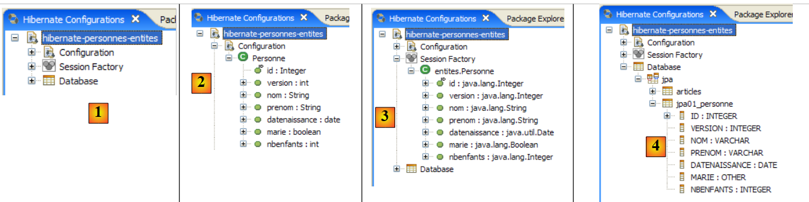 |
- en [1] : la configuration créée présente une arborescence à trois branches
- en [2] : la branche [Configuration] liste les objets que la console a utilisés pour se configurer : ici l'@Entity Personne.
- en [3] : la Session Factory est une notion Hibernate proche de l'EntityManager de JPA. Elle réalise le pont objet / relationnel grâce aux objets de la branche [Configuration]. En [3] sont présentés les objets du contexte de persistance, ici de nouveau l'@Entity Personne.
- en [4] : la base de données accédée au moyen de la configuration trouvée dans [persistence.xml]. On y retrouve la table [jpa01_personne].
 |
- en [1], on crée un éditeur HQL
- dans l'éditeur HQL,
- en [2], on choisit la configuration Hibernate à utiliser s'il y en a plusieurs
- en [3], on tape la commande JPQL qu'on veut exécuter
- en [4], on l'exécute
- en [5], on obtient les résultats de la requête dans la fenêtre [Hibernate Query Result]. On peut rencontrer deux difficultés ici :
- on n'obtient rien (aucune ligne). La console Hibernate a utilisé le contenu de [persistence.xml] pour créer une connexion avec le SGBD. Or cette configuration a une propriété qui dit de vider la base de données :
<property name="hibernate.hbm2ddl.auto" value="create" />
Il faut donc réexécuter l'application [InitDB] avant de rejouer la commande JPQL ci-dessus.
- (suite)
- on n'a pas la fenêtre [Hibernate Query Result]. On la demande par [Window / Show View / ...]
La fenêtre [Hibernate Dynamic SQL preview] ([1] ci-dessous) permet de voir la requête SQL qui va être jouée pour exécuter la commande JPQL qu'on est en train d'écrire. Dès que la syntaxe de la commande JPQL est correcte, la commande SQL correspondante apparaît dans cette fenêtre :
 |
- en [2], on efface la précédente commande HQL
- en [3], on en exécute une nouvelle
- en [4], le résultat
- en [5], la commande SQL qui a été exécutée sur la base
L'éditeur HQL offre une l'aide à l'écriture des commandes HQL :
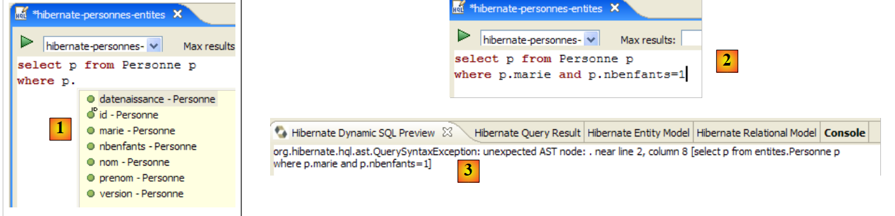 |
- en [1] : une fois que l'éditeur sait que p est un objet Personne, il peut nous proposer les champs de p lors de la frappe.
- en [2] : une commande HQL incorrecte. Il faut écrire where p.marie=true.
- en [3] : l'erreur est signalée dans la fenêtre [SQL Preview]
Nous invitons le lecteur à émettre d'autres commandes HQL / JPQL sur la base.
2.1.13. Un second client JPA
Revenons dans une perspective Java du projet :
|
- [InitDB.java] est un programme qui mettait quelques lignes dans la table [jpa01_personne] de la base. L'étude se son code nous a permis d'acquérir les premiers éléments de l'API JPA.
- [Main.java] est un programme qui fait les opérations CRUD sur la table [jpa01_personne]. L'étude se son code va nous permettre de revenir sur les concepts fondamentaux du contexte de persistance et du cycle de vie des objets de ce contexte.
2.1.13.1. La structure du code
[Main.java] va enchaîner une série de tests où chacun vise à montrer une facette particulière de JPA :
 |
La méthode [main]
- appelle successivement les méthodes test1 à test11. Nous présenterons séparément le code de chacune de ces méthodes.
- utilise par ailleurs des méthodes utilitaires privées : clean , dump, log, getEntityManager, getNewEntityManager.
Nous présentons la méthode main et les méthodes dites utilitaires :
package tests;
...
import entites.Personne;
@SuppressWarnings("unchecked")
public class Main {
// constantes
private final static String TABLE_NAME = "jpa01_personne";
// Contexte de persistance
private static EntityManagerFactory emf = Persistence.createEntityManagerFactory("jpa");
private static EntityManager em = null;
// objets partagés
private static Personne p1, p2, newp1;
public static void main(String[] args) throws Exception {
// nettoyage base
log("clean");clean();
// dump table
dump();
// test1
log("test1");test1();
...
// test11
log("test11");test11();
// fin contexte de persistance
if (em.isOpen())
em.close();
// fermeture EntityManagerFactory
emf.close();
}
// récupérer l'EntityManager courant
private static EntityManager getEntityManager() {
if (em == null || !em.isOpen()) {
em = emf.createEntityManager();
}
return em;
}
// récupérer un EntityManager neuf
private static EntityManager getNewEntityManager() {
if (em != null && em.isOpen()) {
em.close();
}
em = emf.createEntityManager();
return em;
}
// affichage contenu table
private static void dump() {
// contexte de persistance courant
EntityManager em = getEntityManager();
// début transaction
EntityTransaction tx = em.getTransaction();
tx.begin();
// affichage personnes
System.out.println("[personnes]");
for (Object p : em.createQuery("select p from Personne p order by p.nom asc").getResultList()) {
System.out.println(p);
}
// fin transaction
tx.commit();
}
// raz BD
private static void clean() {
// contexte de persistance
EntityManager em = getEntityManager();
// début transaction
EntityTransaction tx = em.getTransaction();
tx.begin();
// supprimer les éléments de la table PERSONNES
em.createNativeQuery("delete from " + TABLE_NAME).executeUpdate();
// fin transaction
tx.commit();
}
// logs
private static void log(String message) {
System.out.println("main : ----------- " + message);
}
// création d'objets
public static void test1() throws ParseException {
...
}
// modifier un objet du contexte
public static void test2() {
...
}
// demander des objets
public static void test3() {
...
}
// supprimer un objet appartenant au contexte de persistance
public static void test4() {
....
}
// détacher, réattacher et modifier
public static void test5() {
...
}
// supprimer un objet n'appartenant pas au contexte de persistance
public static void test6() {
...
}
// modifier un objet n'appartenant pas au contexte de persistance
public static void test7() {
...
}
// réattacher un objet au contexte de persistance
public static void test8() {
...
}
// une requête select provoque une synchronisation
// de la base avec le contexte de persistance
public static void test9() {
....
}
// contrôle de version (optimistic locking)
public static void test10() {
...
}
// rollback d'une transaction
public static void test11() throws ParseException {
...
}
}
- ligne 13 : l'objet EntityManagerFactory emf construit à partir de l'unité de persistance jpa définie dans [persistence.xml]. Il va nous permettre de créer au fil de l'application divers contextes de persistance.
- ligne 14 : un contexte de persistance EntityManager em encore non initialisé
- ligne 17 : trois objets [Personne] partagés par les tests
- ligne 21 : la table jpa01_personne est vidée puis affichée ligne 24 pour s'assurer qu'on part d'une table vide.
- lignes 27-31 : enchaînement des tests
- lignes 34-35 : fermeture du contexte de persistance em s'il était ouvert.
- ligne 38 : fermeture de l'objet EntityManagerFactory emf.
- lignes 42-47 : la méthode [getEntityManager] rend l'EntityManager (ou contexte de persistance) courant ou neuf s'il n'existe pas (lignes 43-44).
- lignes 50-56 : la méthode [getNewEntityManager] rend un contexte de persistance neuf. S'il en existait un auparavant, il est fermé (lignes 51-52)
- lignes 59-72 : la méthode [dump] affiche le contenu de la table [jpa01_personne]. Ce code a déjà été rencontré dans [InitDB].
- lignes 75-85 : la méthode [clean] vide la table [jpa01_personne]. Ce code a déjà été rencontré dans [InitDB].
- lignes 88-90 : la méthode [log] affiche sur la console le message qu'on lui passe en paramètre de façon à ce qu'il soit remarqué.
Nous pouvons maintenant passer à l'étude des tests.
2.1.13.2. Test 1
Le code de test1 est le suivant :
// création d'objets
public static void test1() throws ParseException {
// contexte de persistance
EntityManager em = getEntityManager();
// création personnes
p1 = new Personne("Martin", "Paul", new SimpleDateFormat("dd/MM/yy").parse("31/01/2000"), true, 2);
p2 = new Personne("Durant", "Sylvie", new SimpleDateFormat("dd/MM/yy").parse("05/07/2001"), false, 0);
// début transaction
EntityTransaction tx = em.getTransaction();
tx.begin();
// persistance des personnes
em.persist(p1);
em.persist(p2);
// fin transaction
tx.commit();
// on affiche la table
dump();
}
Ce code a déjà été rencontré dans [InitDB] : il crée deux personnes et les place dans le contexte de persistance.
- ligne 4 : on demande le contexte de persistance courant
- lignes 6-7 : on crée les deux personnes
- lignes 9-15 : les deux personnes sont placées dans le contexte de persistance à l'intérieur d'une transaction.
- ligne 15 : à cause du commit de la transaction, il y a synchronisation du contexte de persistance avec la base. Les deux personnes vont être ajoutées à la table [jpa01_personne].
- ligne 17 : on affiche la table
L'affichage console de ce premier test est le suivant :
main : ----------- test1
[personnes]
[2,0,Durant,Sylvie,05/07/2001,false,0]
[1,0,Martin,Paul,31/01/2000,true,2]
2.1.13.3. Test 2
Le code de test2 est le suivant :
// modifier un objet du contexte
public static void test2() {
// contexte de persistance
EntityManager em = getEntityManager();
// début transaction
EntityTransaction tx = em.getTransaction();
tx.begin();
// on incrémente le nbre d'enfants de p1
p1.setNbenfants(p1.getNbenfants() + 1);
// on modifie son état marital
p1.setMarie(false);
// l'objet p1 est automatiquement sauvegardé (dirty checking)
// lors de la prochaine synchronisation (commit ou select)
// fin transaction
tx.commit();
// on affiche la nouvelle table
dump();
}
- le test 2 a pour objectif de modifier un objet du contexte de persistance et d'afficher ensuite le contenu de la table pour voir si la modification a eu lieu
- ligne 4 : on récupère le contexte de persistance courant
- lignes 6-7 : les choses se feront dans une transaction
- lignes 9, 11 : le nombre d'enfants de la personne p1 est changé ainsi que son état marital
- ligne 15 : fin de la transaction, donc synchronisation du contexte de persistance avec la base
- ligne 17 : affichage table
L'affichage console du test 2 est le suivant :
- ligne 4 : la personne p1 avant modification
- ligne 8 : la personne p1 après modification. On notera que son n° de version est passé à 1. Celui-ci est augmenté de 1 à chaque mise à jour de la ligne.
2.1.13.4. Test 3
Le code de test3 est le suivant :
// demander des objets
public static void test3() {
// contexte de persistance
EntityManager em = getEntityManager();
// début transaction
EntityTransaction tx = em.getTransaction();
tx.begin();
// on demande la personne p1
Personne p1b = em.find(Personne.class, p1.getId());
// parce que p1 est déjà dans le contexte de persistance, il n'y a pas eu d'accès à la base
// p1b et p1 sont les mêmes références
System.out.format("p1==p1b ? %s%n", p1 == p1b);
// demander un objet qui n'existe pas rend 1 pointeur null
Personne px = em.find(Personne.class, -4);
System.out.format("px==null ? %s%n", px == null);
// fin transaction
tx.commit();
}
- le test 3 s'intéresse à la méthode [EntityManager.find] qui permet d'aller chercher un objet dans la base pour le mettre dans le contexte de persistance. Nous n'expliquons plus désormais la transaction qui a lieu dans tous les tests sauf lorsqu'elle est utilisée de façon inhabituelle.
- ligne 9 : on demande au contexte de persistance, la personne qui a la même clé primaire que la personne p1. Il y a deux cas :
- p1 se trouve déjà dans le contexte de persistance. C'est le cas ici. Alors auncun accès à la base n'est fait. La méthode find se contente de rendre une référence sur l'objet persisté.
- p1 n'est pas dans le contexte de persistance. Alors un accès à la base est fait, via la clé primaire qui a été donnée. La ligne récupérée est mise dans le contexte de persistance et find rend la référence de ce nouvel objet persisté.
- ligne 12 : on vérifie que find a rendu la référence de l'objet p1 déjà dans le contexte
- ligne 14 : on demande un objet qui n'existe ni dans le contexte de persistance, ni dans la base. La méthode find rend alors le pointeur null. Ce point est vérifié ligne 15.
L'affichage console du test 3 est le suivant :
2.1.13.5. Test 4
Le code de test4 est le suivant :
// supprimer un objet appartenant au contexte de persistance
public static void test4() {
// contexte de persistance
EntityManager em = getEntityManager();
// début transaction
EntityTransaction tx = em.getTransaction();
tx.begin();
// on supprime l'objet persisté p2
em.remove(p2);
// fin transaction
tx.commit();
// on affiche la nouvelle table
dump();
}
- le test 4 s'intéresse à la méthode [EntityManager.remove] qui permet de supprimer un élément du contexte de persistance et donc de la base.
- ligne 9 : la personne p2 est enlevée du contexte de persistance
- ligne 11 : synchronisation du contexte avec la base
- ligne 13 : affichage de la table. Normalement, la personne p2 ne doit plus être là.
L'affichage console du test 4 est le suivant :
- ligne 3 : la personne p2 dans test1
- lignes 12-14 : elle n'existe plus à l'issue de test4.
2.1.13.6. Test 5
Le code de test5 est le suivant :
// détacher, réattacher et modifier
public static void test5() {
// nouveau contexte de persistance
EntityManager em = getNewEntityManager();
// début transaction
EntityTransaction tx = em.getTransaction();
tx.begin();
// p1 détaché
Personne oldp1=p1;
// on réattache p1 au nouveau contexte
p1 = em.find(Personne.class, p1.getId());
// vérification
System.out.format("p1==oldp1 ? %s%n", p1 == oldp1);
// fin transaction
tx.commit();
// on incrémente le nbre d'enfants de p1
p1.setNbenfants(p1.getNbenfants() + 1);
// on affiche la nouvelle table
dump();
}
- le test 5 s'intéresse à la vie des objets persistés au travers de plusieurs contextes de persistance successifs. Jusqu'ici, nous avions toujours utilisé le même contexte de persistance au travers des différents tests.
- ligne 4 : un nouveau contexte de persistance est demandé. La méthode [getNewEntityManager] ferme le précdent et en ouvre un nouveau. Cela a pour conséquence que les objets p1 et p2 détenus par l'application ne sont plus dans un état persistant. Ils appartenaient à un contexte qui a été fermé. On dit qu'ils sont dans un état détaché. Ils n'appartiennent pas au nouveau contexte de persistance.
- lignes 6-7 : début de la transaction. Elle va ici, être utilisée de façon inhabituelle.
- ligne 9 : on note l'adresse de l'objet p1 maintenant détaché.
- ligne 11 : on demande au contexte de persistance la personne p1 (ayant la clé primaire de p1). Comme le contexte est nouveau, la personne p1 ne s'y trouve pas. Un accès à la base va donc avoir lieu. L'objet ramené va être mis dans le nouveau contexte.
- ligne 13 : on vérifie que l'objet persistant p1 du contexte est différent de l'objet oldp1 qui était l'ancien objet p1 détaché.
- ligne 15 : la transaction est terminée
- ligne 17 : on modifie, hors transaction, le nouvel objet persisté p1. Que se passe-t-il dans ce cas ? On veut le savoir.
- ligne 19 : on demande l'affichage de la table. On rappelle qu'à cause du select émis par la méthode dump, une synchronisation du contexte de persistance avec la base est opérée automatiquement.
L'affichage console du test 5 est le suivant :
- ligne 5 : la méthode find a bien fait un accès à la base, sinon les deux pointeurs seraient égaux
- lignes 7 et 3 : le nombre d'enfants de p1 a bien augmenté de 1. La modification, faite hors transaction, a donc été prise en compte. Cela est en fait dépendant du SGBD utilisé. Dans un SGBD, un ordre SQL s'exécute toujours au sein d'une transaction. si le client JPA ne démarre pas lui-même une transaction explicite, le SGBD va alors démarrer une transaction implicite. Il y a deux cas courants :
- 1 - chaque ordre SQL individuel fait l'objet d'une transaction, ouverte avant l'ordre et fermée après. On dit qu'on est en mode autocommit. Tout se passe donc comme si le client JPA faisait des transactions pour chaque ordre SQL.
- 2 - le SGBD n'est pas en mode autocommit et commence une transaction implicite au 1er ordre SQL que le client JPA émet hors d'une transaction et il laisse le client la fermer. Tous les ordres SQL émis par le client JPA font alors partie de la transaction implicite. Celle-ci peut se terminer sur différents événements : le client ferme la connexion, commence une nouvelle transaction, ...
On est dans une situation dépendant de la configuration du SGBD. On a donc du code non portable. Nous montrerons un peu plus loin, un code sans transactions et nous verrons que tous les SGBD n'ont pas le même comportement vis à vis de ce code. On considèrera donc que travailler hors transactions est une erreur de programmation.
- ligne 7 : on notera que le n° de version est passé à 2.
2.1.13.7. Test 6
Le code de test6 est le suivant :
// supprimer un objet n'appartenant pas au contexte de persistance
public static void test6() {
// nouveau contexte de persistance
EntityManager em = getNewEntityManager();
// début transaction
EntityTransaction tx = em.getTransaction();
tx.begin();
// on supprime p1 qui n'appartient pas au nouveau contexte
try {
em.remove(p1);
// fin transaction
tx.commit();
} catch (RuntimeException e1) {
System.out.format("Erreur à la suppression de p1 : [%s,%s]%n", e1.getClass().getName(), e1.getMessage());
// on fait un rollback de la transaction
try {
if (tx.isActive())
tx.rollback();
} catch (RuntimeException e2) {
System.out.format("Erreur au rollback [%s,%s]%n", e2.getClass().getName(), e2.getMessage());
}
}
// on affiche la nouvelle table
dump();
}
- le test 6 cherche à supprimer un objet qui n'appartient pas au contexte de persistance.
- ligne 4 : un nouveau contexte de persistance est demandé. L'ancien est donc fermé et les objets qu'il contenait deviennent détachés. C'est le cas de l'objet p1 du test 5 précédent.
- lignes 6-7 : début de la transaction.
- ligne 10 : on supprime l'objet détaché p1. On sait que cela va provoquer une exception, aussi a-t-on entouré l'opération d'un try/catch.
- ligne 12 : le commit n'aura pas lieu.
- lignes 16-21 : une transaction doit se terminer par un commit (toutes les opérations de la transaction sont validées) ou un rollback (toutes les opérations de la transaction sont annulées). On a eu une exception, donc on fait un rollback de la transaction. Il n'y a rien à défaire puisque l'unique opération de la transaction a échoué, mais le rollback met un terme à la transaction. C'est la première fois que nous utilisons l'opération [EntityTransaction].rollback. On aurait du le faire depuis les premiers exemples. C'est pour garder un code simple que nous ne l'avons pas fait. Le lecteur doit néanmoins conserver en mémoire que le cas du rollback de la transaction doit toujours être prévu dans le code.
- ligne 24 : on affiche la table. Normalement, elle n'a pas du changer.
L'affichage console du test 6 est le suivant :
- ligne 6 : la suppression de p1 a échoué. Le message de l'exception explique qu'on a voulu supprimer un objet détaché donc ne faisant pas partie du contexte. Ce n'est pas possible.
- ligne 8 : la personne p1 est toujours là.
2.1.13.8. Test 7
Le code de test7 est le suivant :
// modifier un objet n'appartenant pas au contexte de persistance
public static void test7() {
// nouveau contexte de persistance
EntityManager em = getNewEntityManager();
// début transaction
EntityTransaction tx = em.getTransaction();
tx.begin();
// on incrémente le nbre d'enfants de p1 qui n'appartient pas au nouveau contexte
p1.setNbenfants(p1.getNbenfants() + 1);
// fin transaction
tx.commit();
// on affiche la nouvelle table - elle n'a pas du changer
dump();
}
- le test 7 cherche à modifier un objet qui n'appartient pas au contexte de persistance et voir l'impact que cela a sur la base. On peut imaginer que ce n'en a pas. C'est ce que montrent les résultats du test.
- ligne 4 : un nouveau contexte de persistance est demandé. On a donc un contexte neuf sans objets persistés dedans.
- lignes 6-7 : début de la transaction.
- ligne 9 : on modifie l'objet détaché p1. C'est une opération qui n'implique pas le contexte de persistance em. On n'a donc pas à s'attendre à une exception ou quelque chose de ce genre. C'est une opération basique sur un POJO.
- ligne 11 : le commit provoque la synchronisation du contexte avec la base. Ce contexte est vide. La base n'est donc pas modifiée.
- ligne 24 : on affiche la table. Normalement, elle n'a pas du changer.
L'affichage console du test 7 est le suivant :
- ligne 7 : la personne p1 n'a pas changé dans la base. Pour le test suivant, on se souviendra quand même qu'en mémoire son nombre d'enfants est désormais à 5.
2.1.13.9. Test 8
Le code de test8 est le suivant :
// réattacher un objet au contexte de persistance
public static void test8() {
// nouveau contexte de persistance
EntityManager em = getNewEntityManager();
// début transaction
EntityTransaction tx = em.getTransaction();
tx.begin();
// on réattache l'objet détaché p1 au nouveau contexte
newp1 = em.merge(p1);
// c'est newp1 qui fait désormais partie du contexte, pas p1
// fin transaction
tx.commit();
// on affiche la nouvelle table - le nbre d'enfants de p1 a du changer
dump();
}
- le test 8 réattache au contexte de persistance un objet détaché.
- ligne 4 : un nouveau contexte de persistance est demandé. On a donc un contexte neuf sans objets persistants dedans.
- lignes 6-7 : début de la transaction.
- ligne 9 : on réattache au contexte de persistence l'objet détaché p1. L'opération merge peut impliquer plusieurs opérations :
- cas 1 : il existe dans le contexte de persistance un objet persistant ps1 ayant la même clé primaire que l'objet détaché p1. Le contenu de p1 est copié dans ps1 et merge rend la référence de ps1.
- cas 2 : il n'existe pas dans le contexte de persistance un objet persistant ps1 ayant la même clé primaire que l'objet détaché p1. La base est alors interrogée pour savoir si l'objet cherché existe dans la base. Si oui, cet objet est amené dans le contexte de persistance, devient l'objet persistant ps1 et on retombe sur le cas 1 précédent.
- cas 3 : il n'existe, ni dans le contexte de persistance, ni dans la base, un objet de même clé primaire que l'objet détaché p1. Un nouvel objet [Personne] (new) est alors créé, puis mis dans le contexte de persistance. On retombe ensuite sur le cas 1.
- au final : l'objet détaché p1 reste détaché. L'opération merge rend une référence (ici newp1) sur l'objet persistant ps1 issu du merge. L'application cliente doit désormais travailler avec l'objet persistant ps1 et non avec l'objet détaché p1.
- on notera une différence entre les cas 1 et 3 quant à l'ordre SQL programmé pour le merge : dans les cas 1 et 2, c'est ordre UPDATE alors que dans le cas 3, c'est un ordre INSERT.
- ligne 12 : le commit provoque la synchronisation du contexte avec la base. Ce contexte n'est plus vide. Il contient l'objet newp1. Celui-ci va être persisté dans la base.
- ligne 24 : on affiche la table pour le vérifier.
L'affichage console du test 8 est le suivant :
- le nombre d'enfants de p1 était à 4 dans le test 6 (ligne 4), puis avait été passé à 5 dans le test 7 mais n'avait pas été persisté dans la base (ligne 7). Après le merge, newp1 a été persisté dans la base : ligne 10, on a bien 5 enfants.
- ligne 10 : le n° de version de newp1 est passé à 3.
2.1.13.10. Test 9
Le code de test9 est le suivant :
// une requête select provoque une synchronisation
// de la base avec le contexte de persistance
public static void test9() {
// contexte de persistance
EntityManager em = getEntityManager();
// début transaction
EntityTransaction tx = em.getTransaction();
tx.begin();
// on incrémente le nbre d'enfants de newp1
newp1.setNbenfants(newp1.getNbenfants() + 1);
// affichage personnes - le nbre d'enfants de newp1 a du changer
System.out.println("[personnes]");
for (Object p : em.createQuery("select p from Personne p order by p.nom asc").getResultList()) {
System.out.println(p);
}
// fin transaction
tx.commit();
}
- le test 9 veut montrer le mécanisme de synchronisation du contexte qui se produit automatiquement avant un select.
- ligne 5 : on ne change pas le contexte de persistance. newp1 est donc dedans.
- lignes 7-8 : début de la transaction.
- ligne 10 : le nombre d'enfants de l'objet persistant newp1 est augmenté de 1 (5 -> 6).
- lignes 12-15 : on affiche la table par un select. Le contexte va être synchronisé avec la base avant l'exécution du select.
- ligne 17 : fin de la transaction
Pour voir la synchronisation, on met en route l'affichage des logs Hibernate en mode DEBUG (log4j.properties) :
# Root logger option
log4j.rootLogger=ERROR, stdout
# Hibernate logging options (INFO only shows startup messages)
log4j.logger.org.hibernate=DEBUG
L'affichage console du test 9 est le suivant :
- ligne 1 : le test 9 démarre
- lignes 2-6 : la transaction Jdbc démarre. Le mode autocommit du SGBD est désactivé (ligne 5)
- ligne 7 : affichage provoqué par la ligne 12 du code Java. Les lignes suivantes du code Java vont provoquer un select et donc une synchronisation du contexte de persistance avec la base.
- ligne 8 : l'ordre JPQL que l'on veut émettre a déja été émis. Hibernate le trouve dans son cache de "requêtes préparées".
- ligne 9 : Hibernate annonce qu'il va procéder à un flush du contexte de persistance
- lignes 11-12 : Hibernate(Hb) découvre que l'entité Personne#1 (de clé primaire 1) a été changée (dirty).
- lignes 12-13 : Hb annonce qu'il met à jour cet élément et passe son n° de version de 3 à 4.
- ligne 15 : la synchronisation du contexte va provoquer 0 insertion, 1 mise à jour (update), 0 suppression (delete)
- lignes 17-34 : synchronisation du contexte (flush). A noter : l'incrément de la version (ligne 19), l'ordre SQL update préparé (ligne 21), les valeurs des paramètres de l'ordre update (lignes 24-31).
- ligne 35 : le select commence
- ligne 38 : l'ordre SQL qui va être exécuté
- ligne 40 : le select ne ramène qu'une ligne
- ligne 42 : Hb découvre qu'il a déjà dans son contexte de persistance, l'entité Personne#1 que le select a ramenée de la base. Il ne copie pas alors la ligne obtenue de la base dans le contexte, opération qu'il appelle "hydratation".
- ligne 43 : il vérifie si les objets ramenés par le select ont des dépendances (clés étrangères en général) qu'il faudrait également charger (non-lazy collections). Ici il n'y en a pas.
- ligne 44 : affichage provoqué par le code Java
- ligne 45 : fin de la transaction Jdbc demandée par le code Java
- ligne 46 : la synchronisation automatique du contexte qui a lieu lors des commit, commence.
- ligne 48 : Hb découvre que le contexte n'a pas changé depuis la synchronisation précédente.
- ligne 50 : fin du commit.
De nouveau, les logs d'Hibernate en mode DEBUG se montrent très utiles pour savoir exactement ce que fait Hibernate.
2.1.13.11. Test 10
Le code de test10 est le suivant :
// contrôle de version (optimistic locking)
public static void test10() {
// contexte de persistance
EntityManager em = getEntityManager();
// début transaction
EntityTransaction tx = em.getTransaction();
tx.begin();
// incrémenter la version de newp1 directement dans la base (native query)
em.createNativeQuery(String.format("update %s set VERSION=VERSION+1 WHERE ID=%d", TABLE_NAME, newp1.getId())).executeUpdate();
// fin transaction
tx.commit();
// début nouvelle transaction
tx = em.getTransaction();
tx.begin();
// on incrémente le nbre d'enfants de newp1
newp1.setNbenfants(newp1.getNbenfants() + 1);
// fin transaction - elle doit échouer car newp1 n'a plus la bonne version
try {
tx.commit();
} catch (RuntimeException e1) {
System.out.format("Erreur lors de la mise à jour de newp1 [%s,%s,%s,%s]%n", e1.getClass().getName(), e1.getMessage(), e1.getCause().getClass().getName(), e1.getCause().getMessage());
// on fait un rollback de la transaction
try {
if (tx.isActive())
tx.rollback();
} catch (RuntimeException e2) {
System.out.format("Erreur au rollback [%s,%s]%n", e2.getClass().getName(), e2.getMessage());
}
}
// on ferme le contexte qui n'est plus à jour
em.close();
// dump de la table - la version de p1 a du changer
dump();
}
- le test 10 veut montrer le mécanisme amené par le champ version de l'@Entity Personne, qui est doté de l'attribut JPA @Version. Nous avons expliqué que cette annotation faisait que dans la base, la valeur de la colonne associée à l'annotation @Version était incrémentée à chaque update fait sur la ligne à laquelle elle appartient. Ce mécanisme, appelé également verrouillage optimiste (optimistic locking), impose que le client qui veut modifier un objet O dans la base ait la dernière version de celui-ci. S'il ne l'a pas, c'est que l'objet a été modifié depuis qu'il l'a obtenu et on doit l'en avertir.
- ligne 4 : on ne change pas le contexte de persistance. newp1 est donc dedans.
- lignes 6-7 : début d'une transaction.
- ligne 9 : la version de l'objet newp1 est augmentée de 1 (4 -> 5) directement dans la base. Les requêtes de type nativeQuery court-circuitent le contexte de persistance et tapent directement dans la base. Le résultat est que l'objet persistant newp1 et son image dans la base n'ont plus la même version.
- ligne 10 : fin de la première transaction
- lignes 13-14 : début d'une seconde transaction
- ligne 16 : le nombre d'enfants de l'objet persistant newp1 est augmenté de 1 (6 -> 7).
- ligne 19 : fin de la transaction. Une synchronisation a donc lieu. Elle va provoquer la mise à jour du nombre d'enfants de newp1 dans la base. Celle-ci va échouer car l'objet persistant newp1 a la version 4, alors que dans la base l'objet à mettre à jour a la version 5. Une exception va être lancée ce qui justifie le try / catch du code.
- ligne 21 : on affiche l'exception et sa cause.
- ligne 25 : rollback de la transaction
- ligne 33 : affichage de la table : on devrait voir que la version de newp1 est 5 dans la base.
L'affichage console du test 10 est le suivant :
- ligne 5 : le commit lance bien une exception. Elle est de type [javax.persistence.RollbackException]. Le message associé est vague. Si on s'intéresse à la cause de cette exception (Exception.getCause), on voit qu'on a une exception Hibernate due au fait qu'on cherche à modifier une ligne de la base sans avoir la bonne version.
- ligne 7 : on voit que la version de newp1 dans la base a bien été passée à 5 par la nativeQuery.
2.1.13.12. Test 11
Le code de test11 est le suivant :
// rollback d'une transaction
public static void test11() throws ParseException {
// contexte de persistance
EntityManager em = getEntityManager();
// début transaction
EntityTransaction tx = null;
try {
tx = em.getTransaction();
tx.begin();
// on réattache p1 au contexte en allant le chercher dans la base
p1 = em.find(Personne.class, p1.getId());
// on incrémente le nbre d'enfants de p1
p1.setNbenfants(p1.getNbenfants() + 1);
// affichage personnes - le nbre d'enfants de p1 a du changer
System.out.println("[personnes]");
for (Object p : em.createQuery("select p from Personne p order by p.nom asc").getResultList()) {
System.out.println(p);
}
// création de 2 personnes de nom identique, ce qui est interdit par la DDL
Personne p3 = new Personne("X", "Paul", new SimpleDateFormat("dd/MM/yy").parse("31/01/2000"), true, 2);
Personne p4 = new Personne("X", "Paul", new SimpleDateFormat("dd/MM/yy").parse("31/01/2000"), true, 2);
// persistance des personnes
em.persist(p3);
em.persist(p4);
// fin transaction
tx.commit();
} catch (RuntimeException e1) {
// on a eu un pb
System.out.format("Erreur dans transaction [%s,%s,%s,%s,%s,%s]%n", e1.getClass().getName(), e1.getMessage(),
e1.getCause().getClass().getName(), e1.getCause().getMessage(), e1.getCause().getCause().getClass().getName(), e1.getCause().getCause()
.getMessage());
try {
if (tx.isActive())
tx.rollback();
} catch (RuntimeException e2) {
System.out.format("Erreur au rollback [%s]%n", e2.getMessage());
}
// on abandonne le contexte courant
em.clear();
}
// dump - la table n'a pas du changer à cause du rollback
dump();
}
- le test 11 s'intéresse au mécanisme du rollback d'une transaction. Une transaction fonctionne en tout ou rien : les opérations SQL qu'elle contient sont soit toutes exécutées avec succès (commit), soit toutes annulées en cas d'échec de l'une d'elles (rollback).
- ligne 4 : on continue avec le même contexte de persistance. Le lecteur se souvient peut-être que le contexte a été fermé à l'issue du crash du test précédent. Dans ce cas, [getEntityManager] délivre un contexte tout neuf, donc vide.
- lignes 7-27 : un unique try / catch pour contrôler les problèmes qu'on va rencontrer
- lignes 8-9 : début d'une transaction qui va contenir plusieurs opérations SQL
- ligne 11 : p1 est cherché dans la base et mis dans le contexte
- ligne 13 : on augmente le nombre d'enfants de p1 (6 -> 7)
- lignes 15-18 : on affiche le contenu de la base, ce qui va forcer une synchronisation du contexte. Dans la base, le nombre d'enfants de p1 va passer à 7, ce que devrait confirmer l'affichage console.
- lignes 20-21 : création de 2 personnes p3 et p4 de même nom. Or le champ nom de l'@Entity Personne a l'attribut unique=true, ce qui a eu pour conséquence d'engendrer une contrainte d'unicité sur la colonne NOM de la table [jpa01_personne] de la table.
- lignes 23-24 : les personnes p3 et p4 sont mises dans le contexte de persistance.
- ligne 26 : la transaction est committée. S'ensuit une deuxième synchronisation du contexte, la première ayant eu lieu à l'occasion du select. JPA va émettre deux ordres SQL insert pour les personnes p3 et p4. p3 va être inséré. Pour p4, le SGBD va lancer une exception, car p4 porte le même nom que p3. p4 n'est donc pas inséré et le pilote Jdbc remonte une exception au client.
- ligne 27 : on gère l'exception
- lignes 29-31 : on affiche l'exception et ses deux précédentes causes dans la chaîne des exceptions qui nous ont amené jusque là.
- ligne 34 : on fait un rollback de la transaction actuellement active. Celle-ci a commencé ligne 9 du code Java. Depuis une opération update a été faite pour modifier le nombre d'enfants de p1 puis une opération insert pour la personne p3. Tout cela va être annulé par le rollback.
- ligne 39 : le contexte de persistance est vidé
- ligne 42 : la table [jpa01_personne] est affichée. Il faut vérifier que p1 a toujours 6 enfants et que ni p3, ni p4 ne sont dans la table.
L'affichage console du test 11 est le suivant :
main : ----------- test11
[personnes]
[1,6,Martin,Paul,31/01/2000,false,7]
14:50:30,312 ERROR JDBCExceptionReporter:72 - Duplicate entry 'X' for key 2
Erreur dans transaction [javax.persistence.EntityExistsException,org.hibernate.exception.ConstraintViolationException: could not insert: [entites.Personne],org.hibernate.exception.ConstraintViolationException,could not insert: [entites.Personne],java.sql.SQLException,Duplicate entry 'X' for key 2]
[personnes]
[1,5,Martin,Paul,31/01/2000,false,6]
- ligne 3 : le nombre d'enfants de p1 est passé de 6 à 7 dans la base, la version de p1 est passée à 6.
- ligne 4 : l'exception récupérée à l'occasion du commit de la transaction. Si on lit bien, on voit que la cause est une clé dupliquée X (le nom). C'est l'insertion de p4 qui provoque cette erreur alors que p3 déjà inséré a également le nom X.
- ligne 7 : la table après le rollback. p1 a retrouvé sa version 5 et son nombre d'enfants 6, p3 et p4 n'ont pas été insérés.
2.1.13.13. Test 12
Le code de test12 est le suivant :
// on refait la même chose mais sans les transactions
// on obtient le même résultat qu'auparavant avec les SGBD : FIREBIRD, ORACLE XE, POSTGRES, MYSQL5
// avec SQLSERVER on a une table vide. La connexion est laissée dans un état qui empêche la réexécution
// du programme. Il faut alors relancer le serveur.
// idem avec le SGBD Derby
// HSQL insère la 1ère personne - il n'y a pas de rollback
public static void test12() throws ParseException {
// on réattache p1
p1 = em.find(Personne.class, p1.getId());
// on incrémente le nbre d'enfants de p1
p1.setNbenfants(p1.getNbenfants() + 1);
// affichage personnes - le nbre d'enfants de p1 a du changer
System.out.println("[personnes]");
for (Object p : em.createQuery("select p from Personne p order by p.nom asc").getResultList()) {
System.out.println(p);
}
// création de 2 personnes de nom identique, ce qui est interdit par la DDL
Personne p3 = new Personne("X", "Paul", new SimpleDateFormat("dd/MM/yy").parse("31/01/2000"), true, 2);
Personne p4 = new Personne("X", "Paul", new SimpleDateFormat("dd/MM/yy").parse("31/01/2000"), true, 2);
// persistance des personnes
em.persist(p3);
em.persist(p4);
// dump qui va provoquer la synchro du contexte em avec la BD
try {
dump();
} catch (RuntimeException e3) {
System.out.format("Erreur dans dump [%s,%s,%s,%s]%n", e3.getClass().getName(), e3.getMessage(), e3.getCause().getClass().getName(), e3
.getCause().getMessage());
}
// on ferme le contexte actuel
em.close();
// dump
dump();
}
- le test 12 refait la même chose que le test 11 mais hors transaction. On veut voir ce qui se passe dans ce cas.
- lignes 1-6 : donnent les résultats des tests avec divers SGBD :
- avec un certain nombre de SGBD (Firebird, Oracle, MySQL5, Postgres) on a le même résultat qu'avec le test 11. Ce qui fait penser que ces SGBD ont initié d'eux-mêmes une transaction couvrant tous les ordres SQL reçus jusqu'à celui qui a provoqué l'erreur et qu'ils ont eux-mêmes initié un rollback.
- avec d'autres SGBD (SQL Server, Apache Derby) on a un plantage de l'application et / ou du SGBD.
- avec le SGBD HSQLDB, il semble que la transaction ouverte par le SGBD soit en mode autocommit : la modification du nombre d'enfants de p1 et l'insertion de p3 sont rendues permanentes. Seule l'insertion de p4 échoue.
On a donc un résultat dépendant du SGBD, ce qui rend l'application non portable. On retiendra que les opérations sur le contexte de persistance doivent toujours se faire au sein d'une transaction.
2.1.14. Changer de SGBD
Revenons sur l'architecture de test de notre projet actuel :
 |
L'application cliente [3] ne voit que l'interface JPA [5]. Elle ne voit pas ni l'implémentation réelle de celle-ci, ni le SGBD cible. On doit donc pouvoir changer ces deux éléments de la chaîne sans changements dans le client [3]. C'est ce que nous essayons de voir maintenant en commençant par changer le SGBD. Nous avions utilisé jusqu'à maintenant MySQL5. Nous en présentons six autres décrits en annexes (paragraphe 5) en espérant que parmi ceux-ci, il y a le SGBD favori du lecteur.
Dans tous les cas, la modification à faire dans le projet Eclipse est simple (cf ci-dessous) : remplacer le fichier persistence.xml [1] de configuration de la couche JPA par l'un de ceux du dossier conf [2] du projet. Les pilote JDBC de ces SGBD sont déjà présents dans la bibliothèque [jpa-divers] [3] et [4].
 |
2.1.14.1. Oracle 10g Express
Oracle 10g Express est présenté en Annexes au paragraphe 5.7. Le fichier persistence.xml d'Oracle est le suivant :
<?xml version="1.0" encoding="UTF-8"?>
<persistence version="1.0" xmlns="http://java.sun.com/xml/ns/persistence">
<persistence-unit name="jpa" transaction-type="RESOURCE_LOCAL">
<!-- provider -->
<provider>org.hibernate.ejb.HibernatePersistence</provider>
<properties>
<!-- Classes persistantes -->
<property name="hibernate.archive.autodetection" value="class, hbm" />
<!-- logs SQL
<property name="hibernate.show_sql" value="true"/>
<property name="hibernate.format_sql" value="true"/>
<property name="use_sql_comments" value="true"/>
-->
<!-- connexion JDBC -->
<property name="hibernate.connection.driver_class" value="oracle.jdbc.OracleDriver" />
<property name="hibernate.connection.url" value="jdbc:oracle:thin:@localhost:1521:xe" />
<property name="hibernate.connection.username" value="jpa" />
<property name="hibernate.connection.password" value="jpa" />
<!-- création automatique du schéma -->
<property name="hibernate.hbm2ddl.auto" value="create" />
<!-- Dialecte -->
<property name="hibernate.dialect" value="org.hibernate.dialect.OracleDialect" />
<!-- propriétés DataSource c3p0 -->
<property name="hibernate.c3p0.min_size" value="5" />
<property name="hibernate.c3p0.max_size" value="20" />
<property name="hibernate.c3p0.timeout" value="300" />
<property name="hibernate.c3p0.max_statements" value="50" />
<property name="hibernate.c3p0.idle_test_period" value="3000" />
</properties>
</persistence-unit>
</persistence>
Cette configuration est identique à celle faite pour le SGBD MySQL5, aux détails près suivants :
- lignes 15-18 qui configurent la liaison JDBC avec la base de données
- ligne 22 : qui fixe le dialecte SQL à utiliser
Pour les exemples à venir, nous ne préciserons que les lignes qui changent. Pour une explication de la configuration on consultera l'annexe consacrée au SGBD utilisé. Un exemple d'utilisation de la liaison JDBC y est donné à chaque fois, dans le contexte du plugin [SQL Explorer]. Avec les informations de l'annexe, le lecteur pourra répéter l'opération de vérification du résultat de l'application [InitDB] faite au paragraphe 2.1.10.2.
Nous procédons comme indiqué au paragraphe sus-nommé :
- lancer le SGBD Oracle
- mettre conf/oracle/persistence.xml dans META-INF/persistence.xml
- exécuter l'application [InitDB]
On obtient les résultats suivants sur la console :
 |
Par la suite, nous ne présenterons plus cette copie d'écran qui est toujours la même. Plus intéressante est la perspective SQL Explorer de la liaison JDBC avec le SGBD. On suivra la démarche expliquée au paragraphe 2.1.8.
 |
- en [1] : la connexion avec Oracle
- en [2] : l'arborescence de la connexion après exécution de [InitDB]
- en [3] : la structure de la table [jpa01_personne]
- en [4] : son contenu.
Ceci fait, le lecteur est invité à exécuter l'application [Main] puis à arrêter le SGBD.
2.1.14.2. PostgreSQL 8.2
PostgreSQL 8.2 est présenté en Annexes au paragraphe 5.6. Son fichier persistence.xml est le suivant :
<?xml version="1.0" encoding="UTF-8"?>
<persistence version="1.0" xmlns="http://java.sun.com/xml/ns/persistence">
<persistence-unit name="jpa" transaction-type="RESOURCE_LOCAL">
...
<!-- connexion JDBC -->
<property name="hibernate.connection.driver_class" value="org.postgresql.Driver" />
<property name="hibernate.connection.url" value="jdbc:postgresql:jpa" />
<property name="hibernate.connection.username" value="jpa" />
<property name="hibernate.connection.password" value="jpa" />
...
<!-- Dialecte -->
<property name="hibernate.dialect" value="org.hibernate.dialect.PostgreSQLDialect" />
...
</persistence-unit>
</persistence>
Pour exécuter [InitDB] :
- lancer le SGBD PostgreSQL
- mettre conf/postgres/persistence.xml dans META-INF/persistence.xml
- exécuter l'application [InitDB]
La perspective SQL Explorer de la liaison JDBC avec le SGBD est la suivante :
 |
- en [1] : la connexion avec PostgreSQL
- en [2] : l'arborescence de la connexion après exécution de [InitDB]
- en [3] : la structure de la table [jpa01_personne]
- en [4] : son contenu.
Ceci fait, le lecteur est invité à exécuter l'application [Main] puis à arrêter le SGBD
2.1.14.3. SQL Server Express 2005
SQL Server Express 2005 est présenté en Annexes au paragraphe 5.8, page 270. Son fichier persistence.xml est le suivant :
<?xml version="1.0" encoding="UTF-8"?>
<persistence version="1.0" xmlns="http://java.sun.com/xml/ns/persistence">
<persistence-unit name="jpa" transaction-type="RESOURCE_LOCAL">
...
<!-- connexion JDBC -->
<property name="hibernate.connection.driver_class" value="com.microsoft.sqlserver.jdbc.SQLServerDriver" />
<property name="hibernate.connection.url" value="jdbc:sqlserver://localhost\\SQLEXPRESS:1433;databaseName=jpa" />
<property name="hibernate.connection.username" value="jpa" />
<property name="hibernate.connection.password" value="jpa" />
...
<!-- Dialecte -->
<property name="hibernate.dialect" value="org.hibernate.dialect.SQLServerDialect" />
...
</persistence-unit>
</persistence>
Pour exécuter [InitDB] :
- lancer le SGBD SQL Server
- mettre conf/sqlserver/persistence.xml dans META-INF/persistence.xml
- exécuter l'application [InitDB]
La perspective SQL Explorer de la liaison JDBC avec le SGBD est la suivante :
 |
- en [1] : la connexion avec SQL Server
- en [2] : l'arborescence de la connexion après exécution de [InitDB]
- en [3] : la structure de la table [jpa01_personne]
- en [4] : son contenu.
Ceci fait, le lecteur est invité à exécuter l'application [Main] puis à arrêter le SGBD
2.1.14.4. Firebird 2.0
Firebird 2.0 est présenté en Annexes au paragraphe 5.4. Son fichier persistence.xml est le suivant :
<?xml version="1.0" encoding="UTF-8"?>
<persistence version="1.0" xmlns="http://java.sun.com/xml/ns/persistence">
<persistence-unit name="jpa" transaction-type="RESOURCE_LOCAL">
...
<!-- connexion JDBC -->
<property name="hibernate.connection.driver_class" value="org.firebirdsql.jdbc.FBDriver" />
<property name="hibernate.connection.url" value="jdbc:firebirdsql:localhost/3050:C:\data\2006-2007\eclipse\dvp-jpa\annexes\firebird\jpa.fdb" />
<property name="hibernate.connection.username" value="sysdba" />
<property name="hibernate.connection.password" value="masterkey" />
...
<!-- Dialecte -->
<property name="hibernate.dialect" value="org.hibernate.dialect.FirebirdDialect" />
...
</persistence-unit>
</persistence>
Pour exécuter [InitDB] :
- lancer le SGBD Firebird
- mettre conf/firebird/persistence.xml dans META-INF/persistence.xml
- exécuter l'application [InitDB]
La perspective SQL Explorer de la liaison JDBC avec le SGBD est la suivante :
 |
- en [1] : la connexion avec Firebird
- en [2] : l'arborescence de la connexion après exécution de [InitDB]
- en [3] : la structure de la table [jpa01_personne]
- en [4] : son contenu.
Ceci fait, le lecteur est invité à exécuter l'application [Main] puis à arrêter le SGBD.
2.1.14.5. Apache Derby
Apache Derby est présenté en Annexes au paragraphe 5.10. Son fichier persistence.xml est le suivant :
<?xml version="1.0" encoding="UTF-8"?>
<persistence version="1.0" xmlns="http://java.sun.com/xml/ns/persistence">
<persistence-unit name="jpa" transaction-type="RESOURCE_LOCAL">
...
<!-- connexion JDBC -->
<property name="hibernate.connection.driver_class" value="org.apache.derby.jdbc.ClientDriver" />
<property name="hibernate.connection.url" value="jdbc:derby://localhost:1527//data/2006-2007/eclipse/dvp-jpa/annexes/derby/jpa;create=true" />
<property name="hibernate.connection.username" value="jpa" />
<property name="hibernate.connection.password" value="jpa" />
...
<!-- Dialecte -->
...
</persistence-unit>
</persistence>
Pour exécuter [InitDB] :
- lancer le SGBD Apache Derby
- mettre conf/derby/persistence.xml dans META-INF/persistence.xml
- exécuter l'application [InitDB]
La perspective SQL Explorer de la liaison JDBC avec le SGBD est la suivante :
 |
- en [1] : la connexion avec Apache Derby
- en [2] : l'arborescence de la connexion après exécution de [InitDB]. On remarquera la table [HIBERNATE_UNIQUE_KEY] créée par JPA / Hibernate pour générer automatiquement les valeurs successives de la clé primaire ID. Nous avons déjà indiqué que ce mécanisme était souvent propriétaire. On le voit clairement ici. Grâce à JPA, le développeur n'a pas à entrer dans ces détails de SGBD.
- en [3] : la structure de la table [jpa01_personne]
- en [4] : son contenu.
Ceci fait, le lecteur est invité à exécuter l'application [Main] puis à arrêter le SGBD.
2.1.14.6. HSQLDB
HSQLDB est présenté en Annexes au paragraphe 5.9. Son fichier persistence.xml est le suivant :
<?xml version="1.0" encoding="UTF-8"?>
<persistence version="1.0" xmlns="http://java.sun.com/xml/ns/persistence">
<persistence-unit name="jpa" transaction-type="RESOURCE_LOCAL">
...
<!-- connexion JDBC -->
<property name="hibernate.connection.driver_class" value="org.hsqldb.jdbcDriver" />
<property name="hibernate.connection.url" value="jdbc:hsqldb:hsql://localhost" />
<property name="hibernate.connection.username" value="sa" />
<!--
<property name="hibernate.connection.password" value="" />
-->
...
<!-- Dialecte -->
<property name="hibernate.dialect" value="org.hibernate.dialect.HSQLDialect" />
...
</properties>
</persistence-unit>
</persistence>
Pour exécuter [InitDB] :
- lancer le SGBD HSQL
- mettre conf/hsql/persistence.xml dans META-INF/persistence.xml
- exécuter l'application [InitDB]
La perspective SQL Explorer de la liaison JDBC avec le SGBD est la suivante :
 |
- en [1] : la connexion avec HSQL
- en [2] : l'arborescence de la connexion après exécution de [InitDB].
- en [3] : la structure de la table [jpa01_personne]
- en [4] : son contenu.
Ceci fait, le lecteur est invité à exécuter l'application [Main] puis à arrêter le SGBD.
2.1.15. Changer d'implémentation JPA
Revenons sur l'architecture de test de notre projet actuel :
 |
L'étude précédente a montré que nous avons pu changer le SGBD [7] sans rien changer au code client [3]. Nous changeons maintenant l'implémentation JPA [6] et montrons là encore que cela se fait de façon transparente pour le code client [3]. Nous prenons une implémentation TopLink [http://www.oracle.com/technology/products/ias/toplink/jpa/index.html] :
 |
2.1.15.1. Le projet Eclipse
A l'occasion du changement d'implémentation JPA, nous créons un nouveau projet Eclipse afin de ne pas polluer le projet existant. En effet, le nouveau projet utilise des bibliothèques de persistance qui peuvent entrer en conflit avec celles d'Hibernate :
 |
- en [1] : le dossier [<exemples>/toplink/direct/personnes-entites] contient le projet Eclipse. Importer celui-ci.
- en [2] : le projet [toplink-personnes-entites] importé. Il est identique (il a été obtenu par recopie) au projet [hibernate-personne-entites] à deux détails près :
- le fichier [META-INF/persistence.xml] [3] configure désormais une couche JPA / Toplink
- la bibliothèque [jpa-hibernate] a été remplacée par la bibliothèque [jpa-toplink] [4] et [5] (cg paragraphe 1.5).
- en [6] : le dossier [conf] contient une version du fichier [persistence.xml] pour chaque SGBD.
- en [7] : le dossier [ddl] qui va contenir les scripts SQL de génération du schéma de la base de données.
2.1.15.2. La configuration de la couche JPA / Toplink
Nous savons que la couche JPA est configurée par le fichier [META-INF/persistence.xml]. Celei-ci configure désormais une implémentation JPA / Toplink. Son contenu pour une couche JPA interfacée avec le SGBD MySQL5 est le suivant ;
<?xml version="1.0" encoding="UTF-8"?>
<persistence version="1.0" xmlns="http://java.sun.com/xml/ns/persistence">
<persistence-unit name="jpa" transaction-type="RESOURCE_LOCAL">
<!-- provider -->
<provider>oracle.toplink.essentials.PersistenceProvider</provider>
<!-- classes persistantes -->
<class>entites.Personne</class>
<!-- propriétés de l'unité de persistance -->
<properties>
<!-- connexion JDBC -->
<property name="toplink.jdbc.driver" value="com.mysql.jdbc.Driver" />
<property name="toplink.jdbc.url" value="jdbc:mysql://localhost:3306/jpa" />
<property name="toplink.jdbc.user" value="jpa" />
<property name="toplink.jdbc.password" value="jpa" />
<property name="toplink.jdbc.read-connections.max" value="3" />
<property name="toplink.jdbc.read-connections.min" value="1" />
<property name="toplink.jdbc.write-connections.max" value="5" />
<property name="toplink.jdbc.write-connections.min" value="2" />
<!-- SGBD -->
<property name="toplink.target-database" value="MySQL4" />
<!-- serveur d'application -->
<property name="toplink.target-server" value="None" />
<!-- génération schéma -->
<property name="toplink.ddl-generation" value="drop-and-create-tables" />
<property name="toplink.application-location" value="ddl/mysql5" />
<property name="toplink.create-ddl-jdbc-file-name" value="create.sql" />
<property name="toplink.drop-ddl-jdbc-file-name" value="drop.sql" />
<property name="toplink.ddl-generation.output-mode" value="both" />
<!-- logs -->
<property name="toplink.logging.level" value="OFF" />
</properties>
</persistence-unit>
</persistence>
- ligne 3 : n'a pas changé
- ligne 5 : le provider est désormais Toplink. La classe nommée ici sera trouvée dans la bibliothèque [jpa-toplink] ([1] ci-dessous) :
 |
- ligne 7 : la balise <class> sert à nommer toutes les classes @Entity du projet, ici seulement la classe Personne. Hibernate avait une option de configuration qui nous évitait de nommer ces classes. Il explorait le classpath du projet pour y trouver les classes @Entity.
- ligne 9 : la balise <properties> qui introduit des propriétés propres à l'implémentation JPA utilisée, ici Toplink.
- lignes 11-14 : configuration de la liaison Jdbc avec le SGBD MySQL5
- lignes 15-18 : configuration du pool de connexions Jdbc géré nativement par Toplink :
- lignes 15, 16 : nombre maximum et minimum de connexions dans le pool de connexions en lecture. Défaut (2,2)
- lignes 17,18 : nombre maximum et minimum de connexions dans le pool de connexions en écriture. Défaut (10,2)
- ligne 20 : le SGBD cible. La liste des SGBD utilisables est disponible dans le paquetage [oracle.toplink.essentials.platform.database] (cf [2] ci-dessus). Le SGBD MySQL5 n'est pas présent dans la liste [2], aussi a-t-on choisi MySQL4. Toplink supporte un peu moins de SGBD qu'Hibernate. Ainsi des sept SGBD utilisés dans nos exemples, Firebird n'est pas supporté. On ne trouve pas non plus Oracle dans la liste. Il est en fait dans un autre paquetage ([3] ci-dessus). Si dans ces deux paquetages, le SGBD cible est désigné par la classe <Sgbd>Platform.class, la balise s'écrira :
<property name="toplink.target-database" value="<Sgbd>" />
- ligne 22 : fixe le serveur d'application si l'application s'exécute dans un tel serveur. Les valeurs possibles actuelles (None, OC4J_10_1_3, SunAS9). Défaut (None).
- lignes 24-28 : lorsque la couche JPA s'initialisera, on lui demande de faire un nettoyage de la base de données définie par la liason Jdbc des lignes 11-14. On partira ainsi d'une base vide.
- ligne 24 : on demande à Toplink de faire un drop suivi d'un create des tables du schéma de la base de données
- ligne 25 : on va demander à Toplink de générer les scripts SQL des opérations drop et create. application-location fixe le dossier dans lequel seront générés ces scripts. Défaut : (dossier courant).
- ligne 26 : nom du script SQL des opérations create. Défaut : createDDL.jdbc.
- ligne 27 : nom du script SQL des opérations drop. Défaut : dropDDL.jdbc.
- ligne 28 : mode de génération du schéma (Défaut : both) :
- both : scripts et base de données
- database : base de données seulement
- sql-script : scripts seulement
- ligne 30 : on inhibe (OFF) les logs de Toplink. Les différents niveaux de login disponibles sont les suivants : OFF, SEVERE, WARNING, INFO, CONFIG, FINE, FINER, FINEST. Défaut : INFO.
On consultera l'url [http://www.oracle.com/technology/products/ias/toplink/JPA/essentials/toplink-jpa-extensions.html] pour une définition exhaustive des balises <property> utilisables avec Toplink.
2.1.15.3. Test [InitDB]
Il n'y a rien de plus à faire. Nous sommes prêts à exécuter le premier test [InitDB] :
- lancer le SGBD, ici MySQL5
- exécuter [InitDB]
 |
- en [1] : l'affichage console. On retrouve les résultats déjà obtenus avec JPA / Hibernate.
- en [3] : on ouvre la perspective [SQL Explorer] puis on ouvre la connexion [mysql5-jpa]
- en [4] : l'arborescence de la base jpa. On découvre que l'exécution de [InitDB] a créé deux tables : [jpa01_personne] qui était attendue et la table [sequence] qui l'était moins.
 |
- en [5] : la structure de la table [jpa01_personne] et en [6] son contenu
- en [7] : la structure de la table [sequence] et en [8] son contenu.
Le fichier de configuration [persistence.xml] demandait la génération des scripts de la DDL :
<!-- génération schéma -->
<property name="toplink.ddl-generation" value="drop-and-create-tables" />
<property name="toplink.application-location" value="ddl/mysql5" />
<property name="toplink.create-ddl-jdbc-file-name" value="create.sql" />
<property name="toplink.drop-ddl-jdbc-file-name" value="drop.sql" />
<property name="toplink.ddl-generation.output-mode" value="both" />
Regardons ce qui a été généré dans le dossier [ddl/mysql5] :
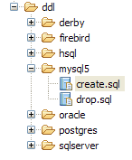 |
create.sql
CREATE TABLE jpa01_personne (ID INTEGER NOT NULL, PRENOM VARCHAR(30) NOT NULL, DATENAISSANCE DATE NOT NULL, NOM VARCHAR(30) UNIQUE NOT NULL, MARIE TINYINT(1) default 0 NOT NULL, VERSION INTEGER NOT NULL, NBENFANTS INTEGER NOT NULL, PRIMARY KEY (ID))
CREATE TABLE SEQUENCE (SEQ_NAME VARCHAR(50) NOT NULL, SEQ_COUNT DECIMAL(38), PRIMARY KEY (SEQ_NAME))
INSERT INTO SEQUENCE(SEQ_NAME, SEQ_COUNT) values ('SEQ_GEN', 1)
- lignes 1 : la DDL de la table [jpa01_personne]. On constate que Toplink n'a pas utilisé l'attribut autoincrement pour la clé primaire ID. Ce qui fait qu'on n'a pas une incrémentation automatique de celle-ci lors des insertions de lignes.
- ligne 2 : la DDL de la table [sequence]. Son nom semble indiquer que Toplink utilise cette table pour générer les valeurs de la clé primaire ID.
- ligne 3 : insertion d'une unique ligne dans [SEQUENCE]
drop.sql
DROP TABLE jpa01_personne
DELETE FROM SEQUENCE WHERE SEQ_NAME = 'SEQ_GEN'
- ligne 1 : suppression de la table [jpa01_personne]
- ligne 2 : suppression d'une ligne particulière de la table [SEQUENCE]. La table elle-même n'est pas supprimée ni les autres lignes éventuelles qu'elle pourrait contenir.
Pour en savoir plus sur le rôle de la table [SEQUENCE], on active dans [persistence.xml], les logs de Toplink au niveau FINE, un niveau qui trace les ordres SQL émis par Toplink :
<!-- logs -->
<property name="toplink.logging.level" value="FINE" />
On réexécute InitDB. Ci-dessous, on n'a conservé qu'une vue partielle de l'affichage console :
...
[TopLink Config]: 2007.05.28 12:07:52.796--ServerSession(12910198)--Connection(30708295)--Thread(Thread[main,5,main])--Connected: jdbc:mysql://localhost:3306/jpa
User: jpa@localhost
Database: MySQL Version: 5.0.37-community-nt
Driver: MySQL-AB JDBC Driver Version: mysql-connector-java-3.1.9 ( $Date: 2005/05/19 15:52:23 $, $Revision: 1.1.2.2 $ )
...
[TopLink Fine]: 2007.05.28 12:07:53.093--ServerSession(12910198)--Connection(19255406)--Thread(Thread[main,5,main])--DROP TABLE jpa01_personne
[TopLink Fine]: 2007.05.28 12:07:53.265--ServerSession(12910198)--Connection(30708295)--Thread(Thread[main,5,main])--CREATE TABLE jpa01_personne (ID INTEGER NOT NULL, PRENOM VARCHAR(30) NOT NULL, DATENAISSANCE DATE NOT NULL, NOM VARCHAR(30) UNIQUE NOT NULL, MARIE TINYINT(1) default 0 NOT NULL, VERSION INTEGER NOT NULL, NBENFANTS INTEGER NOT NULL, PRIMARY KEY (ID))
[TopLink Fine]: 2007.05.28 12:07:53.468--ServerSession(12910198)--Connection(19255406)--Thread(Thread[main,5,main])--CREATE TABLE SEQUENCE (SEQ_NAME VARCHAR(50) NOT NULL, SEQ_COUNT DECIMAL(38), PRIMARY KEY (SEQ_NAME))
[TopLink Warning]: 2007.05.28 12:07:53.468--ServerSession(12910198)--Thread(Thread[main,5,main])--Exception [TOPLINK-4002] (Oracle TopLink Essentials - 2.0 (Build b41-beta2 (03/30/2007))): oracle.toplink.essentials.exceptions.DatabaseException
Internal Exception: java.sql.SQLException: Table 'sequence' already exists
Error Code: 1050
Call: CREATE TABLE SEQUENCE (SEQ_NAME VARCHAR(50) NOT NULL, SEQ_COUNT DECIMAL(38), PRIMARY KEY (SEQ_NAME))
Query: DataModifyQuery()
[TopLink Fine]: 2007.05.28 12:07:53.468--ServerSession(12910198)--Connection(30708295)--Thread(Thread[main,5,main])--DELETE FROM SEQUENCE WHERE SEQ_NAME = 'SEQ_GEN'
[TopLink Fine]: 2007.05.28 12:07:53.609--ServerSession(12910198)--Connection(19255406)--Thread(Thread[main,5,main])--SELECT * FROM SEQUENCE WHERE SEQ_NAME = 'SEQ_GEN'
[TopLink Fine]: 2007.05.28 12:07:53.609--ServerSession(12910198)--Connection(30708295)--Thread(Thread[main,5,main])--INSERT INTO SEQUENCE(SEQ_NAME, SEQ_COUNT) values ('SEQ_GEN', 1)
[TopLink Fine]: 2007.05.28 12:07:53.734--ClientSession(15308417)--Connection(14069849)--Thread(Thread[main,5,main])--delete from jpa01_personne
[TopLink Fine]: 2007.05.28 12:07:53.750--ClientSession(15308417)--Connection(14069849)--Thread(Thread[main,5,main])--UPDATE SEQUENCE SET SEQ_COUNT = SEQ_COUNT + ? WHERE SEQ_NAME = ?
bind => [50, SEQ_GEN]
[TopLink Fine]: 2007.05.28 12:07:53.750--ClientSession(15308417)--Connection(14069849)--Thread(Thread[main,5,main])--SELECT SEQ_COUNT FROM SEQUENCE WHERE SEQ_NAME = ?
bind => [SEQ_GEN]
[personnes]
[TopLink Fine]: 2007.05.28 12:07:53.906--ClientSession(15308417)--Connection(14069849)--Thread(Thread[main,5,main])--INSERT INTO jpa01_personne (ID, PRENOM, DATENAISSANCE, NOM, MARIE, VERSION, NBENFANTS) VALUES (?, ?, ?, ?, ?, ?, ?)
bind => [3, Sylvie, 2001-07-05, Durant, false, 1, 0]
[TopLink Fine]: 2007.05.28 12:07:53.921--ClientSession(15308417)--Connection(14069849)--Thread(Thread[main,5,main])--INSERT INTO jpa01_personne (ID, PRENOM, DATENAISSANCE, NOM, MARIE, VERSION, NBENFANTS) VALUES (?, ?, ?, ?, ?, ?, ?)
bind => [2, Paul, 2000-01-31, Martin, true, 1, 2]
[TopLink Fine]: 2007.05.28 12:07:53.937--ClientSession(15308417)--Connection(14069849)--Thread(Thread[main,5,main])--SELECT ID, PRENOM, DATENAISSANCE, NOM, MARIE, VERSION, NBENFANTS FROM jpa01_personne ORDER BY NOM ASC
[3,1,Durant,Sylvie,05/07/2001,false,0]
[2,1,Martin,Paul,31/01/2000,true,2]
[TopLink Config]: 2007.05.28 12:07:54.062--ServerSession(12910198)--Connection(30708295)--Thread(Thread[main,5,main])--disconnect
[TopLink Info]: 2007.05.28 12:07:54.062--ServerSession(12910198)--Thread(Thread[main,5,main])--file:/C:/data/2006-2007/eclipse/dvp-jpa/toplink/direct/personnes-entites/bin/-jpa logout successful
...
terminé ...
- lignes 2-5 : une connexion au SGBD avec ses paramètres. En fait, les logs montrent qu'en réalité Toplink crée 3 connexions avec le SGBD. Il faudrait voir si ce nombre est relié à l'une des valeurs de configuration utilisées pour le pool de connexions Jdbc :
<property name="toplink.jdbc.read-connections.max" value="3" />
<property name="toplink.jdbc.read-connections.min" value="1" />
<property name="toplink.jdbc.write-connections.max" value="5" />
<property name="toplink.jdbc.write-connections.min" value="2" />
- ligne 7 : suppression de la table [jpa01_personne]. Normal, puisque le fichier [persistence.xml] demande le nettoyage de la base jpa.
- ligne 8 : création de la table [jpa01_personne]. On constate que la clé primaire ID n'a pas l'attribut autoincrement.
- ligne 9 : création de la table [SEQUENCE] qui existe déjà, créée lors de la précédente exécution.
- lignes 10-13 : Toplink signale l'erreur de création de la table [SEQUENCE].
- ligne 15-18 : Toplink nettoie la table [SEQUENCE]. A l'issue de ce nettoyage, la table [SEQUENCE] a une ligne (SEQ_NAME, SEQ_COUNT) avec les valeurs ('SEQ_GEN', 1).
- ligne 18 : la table [jpa01_personne] est vidée.
- lignes 19-20 : Toplink passe l'unique ligne où SEQ_NAME='SEQ_GEN' de la table [SEQUENCE], de la valeur ('SEQ_GEN', 1) à la valeur ('SEQ_GEN', 51)
- ligne 21 : Toplink récupère la valeur 51 de la ligne ('SEQ_GEN', 51) de la table [SEQUENCE].
- lignes 24-27 : Toplink insère dans la table [jpa01_personne] les deux personnes 'Martin' et 'Durant'. Il y a un mystère ici : les clés primaires de ces deux lignes reçoivent les valeurs 2 et 3 sans qu'on sache comment ont été obtenues ces valeurs. On ne sait pas si la valeur SEQ_COUNT (51) obtenue ligne 21 a servi à quelque chose. On notera que la valeur de la version des lignes est 1, alors qu'Hibernate commençait à 0.
- ligne 28 : Toplink fait le SELECT pour obtenir toutes les lignes de la table [jpa01_personne]
- lignes 29-30 : lignes affichées par le client Java
- lignes 31-32 : Toplink ferme une connexion. Il va répéter l'opération pour chacune des connexions ouvertes initialement.
Au final, on ne connaît pas exactement le rôle de la table [SEQUENCE] mais il semble quand même qu'elle joue un rôle dans la génération des valeurs de la clé primaire ID. En prenant le niveau de logs le plus fin, FINEST, on en apprend un peu plus sur le rôle de la table [SEQUENCE].
<!-- logs -->
<property name="toplink.logging.level" value="FINEST" />
Nous n'avons gardé ci-dessous que les logs concernant l'insertion des deux personnes dans la table. C'est là qu'on voit le mécanisme de génération des valeurs de la clé primaire :
- ligne 4 : on voit que le nombre 51 récupéré dans la table [SEQUENCE] à la ligne 2 sert à délimiter un intervalle de valeurs pour la clé primaire : [2,51]
- ligne 5 : la première personne reçoit la valeur 2 pour clé primaire
- ligne 8 : la seconde personne reçoit la valeur 3 pour clé primaire
- ligne 12 : montre la gestion de version de la première personne
- ligne 17 : idem pour la seconde personne
Le niveau de logs [FINEST] montre également les limites des transactions émises par Toplink. L'étude de ces logs montre ce que fait Toplink et c'est un grand moyen de comprendre le pont objet / relationnel.
On retiendra de ce qui précède :
- que des implémentations JPA différentes vont générer des schémas de bases de données différents. Dans cet exemple, Hibernate et Toplink n'ont pas généré les mêmes schémas.
- que les niveaux de logs FINE, FINER, FINEST de Toplink seront à utiliser dès qu'on souhaitera des éclaircissements sur ce que fait exactement Toplink.
2.1.15.4. Test [Main]
Nous exécutons maintenant le test [Main] :
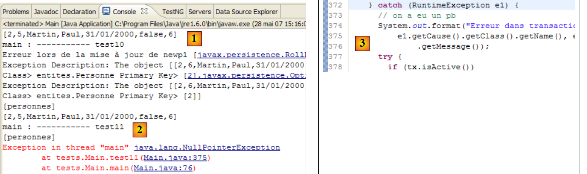 |
- en [1] : tous les tests passent sauf le test 11 [2]
- en [3] : ligne 376, la ligne de code où s'est produite l'exception
Le code qui produit l'exception est le suivant :
} catch (RuntimeException e1) {
// on a eu un pb
System.out.format("Erreur dans transaction [%s,%s,%s,%s,%s,%s]%n", e1.getClass().getName(), e1.getMessage(),
e1.getCause().getClass().getName(), e1.getCause().getMessage(), e1.getCause().getCause().getClass().getName(), e1.getCause().getCause()
.getMessage());
try {
...
- ligne [3] : la ligne de l'exception. On a un NullPointerException, ce qui laisse penser que l'une des méthodes getCause des lignes 4 et 5 a rendu un pointeur null. Une expression telle que [e1.getCause().getCause()] suppose que la chaîne des exceptions a 3 éléments [e1.getCause().getCause(), e1.getCause(), e1]. Si elle n'en a que deux, la première expression causera une exception.
Nous changeons le code précédent pour qu'il n'affiche que les deux dernières exceptions de la chaîne des exceptions :
} catch (RuntimeException e1) {
// on a eu un pb
System.out.format("Erreur dans transaction [%s,%s,%s,%s,]%n", e1.getClass().getName(), e1.getMessage(),
e1.getCause().getClass().getName(), e1.getCause().getMessage());
try {
...
A l'exécution, on a alors le résultat suivant :
...
[personnes]
[2,5,Martin,Paul,31/01/2000,false,6]
main : ----------- test11
[personnes]
Erreur dans transaction [javax.persistence.OptimisticLockException,Exception [TOPLINK-5006] (Oracle TopLink Essentials - 2.0 (Build b41-beta2 (03/30/2007))): oracle.toplink.essentials.exceptions.OptimisticLockException
Exception Description: The object [[2,6,Martin,Paul,31/01/2000,false,7]] cannot be updated because it has changed or been deleted since it was last read.
Class> entites.Personne Primary Key> [2],oracle.toplink.essentials.exceptions.OptimisticLockException,
Exception Description: The object [[2,6,Martin,Paul,31/01/2000,false,7]] cannot be updated because it has changed or been deleted since it was last read.
Class> entites.Personne Primary Key> [2],]
[personnes]
[2,5,Martin,Paul,31/01/2000,false,6]
Cette fois-ci, le test 11 passe. Les affichages sur l'exception (lignes 6-10) ont été demandés par le code Java (ligne 3 du code plus haut). On rappelle que le test 11 enchaînait, dans une même transaction, plusieurs opérations SQL dont l'une échouait et devait entraîner un rollback de la transaction. Les états de la table [jpa01_personne] avant (ligne 3) et après le test (ligne 12) sont bien identiques montrant que le rollback a eu lieu.
On notera ici un point important : les implémentations JPA / Hibernate et JPA / Toplink ne sont pas interchangeables à 100%. Dans cet exemple, il nous faut changer le code du client JPA pour éviter un NullPointerException. Nous retrouverons ce problème ultérieurement et de nouveau dans le cadre d'une exception.
2.1.16. Changer de SGBD dans l'implémentation JPA / Toplink
Revenons sur l'architecture de test de notre projet actuel :
 |
Précédemment, le SGBD utilisé en [7] était MySQL5. Nous montrons avec Oracle comment changer de SGBD. Dans tous les cas, la modification à faire dans le projet Eclipse est simple (cf ci-dessous) : remplacer le fichier persistence.xml [1] de configuration de la couche JPA par l'un de ceux du dossier conf ( [2] et [3]) du projet.
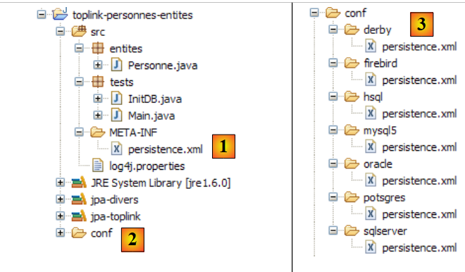 |
2.1.16.1. Oracle 10g Express
Oracle 10g Express est présenté en Annexes au paragraphe 5.7. Le fichier persistence.xml d'Oracle pour Toplink est le suivant :
<?xml version="1.0" encoding="UTF-8"?>
<persistence version="1.0" xmlns="http://java.sun.com/xml/ns/persistence">
<persistence-unit name="jpa" transaction-type="RESOURCE_LOCAL">
<!-- provider -->
<provider>oracle.toplink.essentials.PersistenceProvider</provider>
<!-- classes persistantes -->
<class>entites.Personne</class>
<!-- propriétés de l'unité de persistance -->
<properties>
<!-- connexion JDBC -->
<property name="toplink.jdbc.driver" value="oracle.jdbc.OracleDriver" />
<property name="toplink.jdbc.url" value="jdbc:oracle:thin:@localhost:1521:xe" />
<property name="toplink.jdbc.user" value="jpa" />
<property name="toplink.jdbc.password" value="jpa" />
<property name="toplink.jdbc.read-connections.max" value="3" />
<property name="toplink.jdbc.read-connections.min" value="1" />
<property name="toplink.jdbc.write-connections.max" value="5" />
<property name="toplink.jdbc.write-connections.min" value="2" />
<!-- SGBD -->
<property name="toplink.target-database" value="Oracle" />
<!-- serveur d'application -->
<property name="toplink.target-server" value="None" />
<!-- génération schéma -->
<property name="toplink.ddl-generation" value="drop-and-create-tables" />
<property name="toplink.application-location" value="ddl/oracle" />
<property name="toplink.create-ddl-jdbc-file-name" value="create.sql" />
<property name="toplink.drop-ddl-jdbc-file-name" value="drop.sql" />
<property name="toplink.ddl-generation.output-mode" value="both" />
<!-- logs -->
<property name="toplink.logging.level" value="OFF" />
</properties>
</persistence-unit>
</persistence>
Cette configuration est identique à celle faite pour le SGBD MySQL5, auxdétails près suivants :
- lignes 11-14 qui configurent la liaison JDBC avec la base de données
- ligne 20 : qui fixe le SGBD cible
- ligne 25 : qui fixe le dossier de génération des scripts SQL de la DDL
Pour exécuter le test [InitDB] :
- lancer le SGBD Oracle
- mettre conf/oracle/persistence.xml dans META-INF/persistence.xml
- exécuter l'application [InitDB]
On obtient les résultats suivants sur la console et dans la perspective [SQL Explorer] :
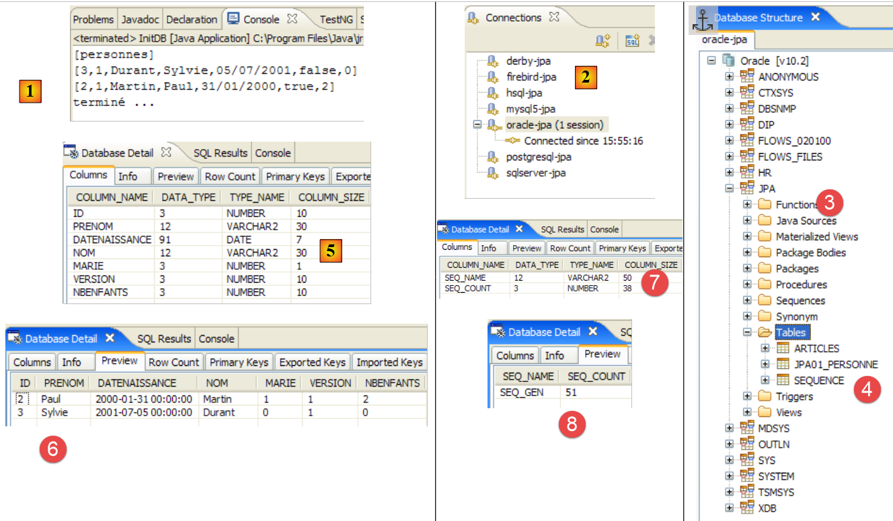 |
- [1] : l'affichage console
- [2] : la connexion [oracle-jpa] dans SQL Explorer
- [3] : la base de données jpa
- [4] : InitDB a créé deux tables : JPA01_PERSONNE et SEQUENCE, comme avec MySQL5. Parfois en [4], on voit apparaître des tables [BIN*]. Elles correspondent à des tables détruites. Pour voir le phénomène, il suffit de réexécuter [InitDB]. La phase d'initialisation de la couche JPA comporte un nettoyage de la base de données jpa au cours de laquelle la table [JPA01_PERSONNE] est détruite :
 |
En [A], on voit apparaître une table [BIN]. Oracle ne supprime pas définitivement une table ayant subi un drop mais la met dans une corbeille [Recycle Bin]. Cette corbeille est visible [B] avec l'outil SQL Developer décrit au paragraphe 5.7.4. En [B], on peut purger la table [JPA01_PERSONNE] qui est dans la corbeille. Cela vide la corbeille [C]. Si dans SQL Explorer, on rafraîchit (clic droit / Refresh) les tables, on voit que la table BIN n'est plus là [D].
- [5, 6] : la structure et le contenu de la table [JPA01_PERSONNE]
- [7, 8] : la structure et le contenu de la table [SEQUENCE]
Voilà ! Le lecteur est maintenant invité à exécuter l'application [Main] sur Oracle.
2.1.16.2. Les autres SGBD
Nous montrerons peu sur les autres SGBD. Il faut simplement reproduire la procédure suivie pour Oracle. On notera les points suivants :
- quelque soit le SGBD, Toplink utilise toujours la même technique pour la génération des valeurs de la clé primaire ID de la table [JPA01_PERSONNE] : il utilise la table [SEQUENCE] détaillée plus haut.
- Toplink ne reconnaît pas le SGBD Firebird. Il existe une base de données générique pour ces cas là :
Avec cette base générique appelée [Auto], les tests avec Firebird échouent sur des erreurs de syntaxe SQL. Toplink utilise pour la clé primaire ID, un type SQL Number(10) que ne reconnaît pas Firebird. Il faut alors choisir un SGBD ayant les mêmes types SQL que Firebird (pour cet exemple). C'est le cas d'Apache Derby :
<!-- connexion JDBC -->
<property name="toplink.jdbc.driver" value="org.firebirdsql.jdbc.FBDriver" />
...
<!-- SGBD -->
<!--
TopLink ne reconnaît pas Firebird pour l'instant (05/07). Derby convient pour remplacer.
-->
<property name="toplink.target-database" value="Derby" />
...
- Toplink ne sait pas générer le schéma originel de la base pour le SGBD HSQLDB. C'est à dire que la directive :
<!-- génération schéma -->
<property name="toplink.ddl-generation" value="drop-and-create-tables" />
échoue pour HSQLDB. La cause en est une erreur de syntaxe à la création de la table [jpa01_personne] :
[TopLink Fine]: 2007.05.29 09:44:18.515--ServerSession(12910198)--Connection(29775659)--Thread(Thread[main,5,main])--DROP TABLE jpa01_personne
[TopLink Fine]: 2007.05.29 09:44:18.531--ServerSession(12910198)--Connection(29775659)--Thread(Thread[main,5,main])--CREATE TABLE jpa01_personne (ID INTEGER NOT NULL, PRENOM VARCHAR(30) NOT NULL, DATENAISSANCE DATE NOT NULL, NOM VARCHAR(30) UNIQUE NOT NULL, MARIE TINYINT NOT NULL, VERSION INTEGER NOT NULL, NBENFANTS INTEGER NOT NULL, PRIMARY KEY (ID))
[TopLink Warning]: 2007.05.29 09:44:18.531--ServerSession(12910198)--Thread(Thread[main,5,main])--Exception [TOPLINK-4002] (Oracle TopLink Essentials - 2.0 (Build b41-beta2 (03/30/2007))): oracle.toplink.essentials.exceptions.DatabaseException
Internal Exception: java.sql.SQLException: Unexpected token: UNIQUE in statement [CREATE TABLE jpa01_personne (ID INTEGER NOT NULL, PRENOM VARCHAR(30) NOT NULL, DATENAISSANCE DATE NOT NULL, NOM VARCHAR(30) UNIQUE]
Ligne 4, la syntaxe NOM VARCHAR(30) UNIQUE NOT NULL n'est pas acceptée par HSQL. Hibernate avait utilisé la syntaxe : NOM VARCHAR(30) NOT NULL, UNIQUE(NOM).
De façon générale, Hibernate a été plus efficace que Toplink pour reconnaître les SGBD avec lesquels les tests de ce document ont été faits.
2.1.17. Conclusion
L'étude de l'@Entity [Personne] s'arrête là. Du point de vue conceptuel, assez peu a été fait : nous avons étudié le pont objet / relationnel dans un cas le plus simple : un objet @Entity <--> une table. Son étude nous a cependant permis de présenter les outils que nous utiliserons dans tout le document. Cela nous permettra d'aller un peu plus vite dorénavant dans l'étude des autres cas du pont objet / relationnel que nous allons étudier :
- à l'@Entity [Personne] précédente, on va ajouter un champ adresse modélisé par une classe [Adresse]. Du côté base de données, nous verrons deux implémentations possibles. Les objets [Personne] et [Adresse] donnent naissance à
- une unique table [personne] incluant l'adresse
- deux tables [personne] et [adresse] liées par une relation de clé étrangère de type un-à-un.
- un exemple de relation un-à-plusieurs où une table [article] est liée à une table [categorie] par une clé étrangère
- un exemple de relation plusieurs-à-plusieurs où deux tables [personne] et [activite] sont reliées par une table de jointure [personne_activite].
2.2. Exemple 2 : relation un-à-un via une inclusion
2.2.1. Le schéma de la base de données
1  | 2 |
- en [1] : la base de données (plugin Azurri Clay)
- en [2] : la DDL générée par Hibernate pour MySQL5
La table [jpa02_personne] est la table [jpa01_personne] étudiée précédemment à laquelle on a rajouté une adresse (lignes 12-18 de la DDL).
2.2.2. Les objets @Entity représentant la base de données
L'adresse d'une personne sera représentée par la classe [Adresse] suivante :
package entites;
...
@SuppressWarnings("serial")
@Embeddable
public class Adresse implements Serializable {
// champs
@Column(length = 30, nullable = false)
private String adr1;
@Column(length = 30)
private String adr2;
@Column(length = 30)
private String adr3;
@Column(length = 5, nullable = false)
private String codePostal;
@Column(length = 20, nullable = false)
private String ville;
@Column(length = 3)
private String cedex;
@Column(length = 20, nullable = false)
private String pays;
// constructeurs
public Adresse() {
}
public Adresse(String adr1, String adr2, String adr3, String codePostal, String ville, String cedex, String pays) {
...
}
// getters et setters
...
// toString
public String toString() {
return String.format("A[%s,%s,%s,%s,%s,%s,%s]", getAdr1(), getAdr2(), getAdr3(), getCodePostal(), getVille(), getCedex(), getPays());
}
}
- la principale innovation réside dans l'annotation @Embeddable de la ligne 5. La classe [Adresse] n'est pas destinée à donner naissance à une table, aussi n'a-t-elle pas l'annotation @Entity. L'annotation @Embeddable indique que la classe a vocation à être intégrée dans un objet @Entity et donc dans la table associée à celui-ci. C'est pourquoi, dans le schéma de la base de données, la classe [Adresse] n'apparaît pas comme une table à part, mais comme faisant partie de la table associée à l'@Entity [Personne].
L'@Entity [Personne] évolue peu par rapport à sa version précédente : on lui ajoute simplement un champ adresse :
package entites;
...
@Entity
@Table(name = "jpa02_hb_personne")
public class Personne implements Serializable{
@Id
@Column(nullable = false)
@GeneratedValue(strategy = GenerationType.AUTO)
private Long id;
@Column(nullable = false)
@Version
private int version;
@Column(length = 30, nullable = false, unique = true)
private String nom;
@Column(length = 30, nullable = false)
private String prenom;
@Column(nullable = false)
@Temporal(TemporalType.DATE)
private Date datenaissance;
@Column(nullable = false)
private boolean marie;
@Column(nullable = false)
private int nbenfants;
@Embedded
private Adresse adresse;
// constructeurs
public Personne() {
}
...
}
- la modification a lieu lignes 33-34. L'objet [Personne] a désormais un champ adresse de type Adresse. Ca c'est pour le POJO. L'annotation @Embedded est destinée au pont objet / relationnel. Elle indique que le champ [Adresse adresse] devra être encapsulé dans la même table que l'objet [Personne].
2.2.3. L'environnement des tests
Nous allons procéder à des tests très semblables à ceux étudiés précédemment. Ils seront faits dans le contexte suivant :
 |
L'implémentation utilisée est JPA / Hibernate [6]. Le projet Eclipse des tests est le suivant :
 |
Le projet Eclipse [1] ne diffère du précédent que par ses codes Java [2]. L'environnement (bibliothèques – persistence.xml – sgbd - dossiers conf, ddl – script ant) est celui déjà étudié précédemment, en particulier au paragraphe 2.1.5. Ce sera toujours le cas pour les projets Hibernate à venir et, sauf exception, nous ne reviendrons plus sur cet environnement. Notamment, les fichiers persistence.xml qui configurent la couche JPA/Hibernate pour différents SGBD sont ceux déjà étudiés et qui se trouvent dans le dossier <conf>.
S'il a un doute sur les procédures à suivre, le lecteur est invité à revenir sur celles suivies dans l'étude précédente.
Le projet Eclipse est présent [3] dans le dossier des exemples [4]. On l'importera.
2.2.4. Génération de la DDL de la base de données
En suivant les instructions du paragraphe 2.1.7, la DDL obtenue pour le SGBD MySQL5 est la suivante :
drop table if exists jpa02_hb_personne;
create table jpa02_hb_personne (
id bigint not null auto_increment,
version integer not null,
nom varchar(30) not null unique,
prenom varchar(30) not null,
datenaissance date not null,
marie bit not null,
nbenfants integer not null,
adr1 varchar(30) not null,
adr2 varchar(30),
adr3 varchar(30),
codePostal varchar(5) not null,
ville varchar(20) not null,
cedex varchar(3),
pays varchar(20) not null,
primary key (id)
) ENGINE=InnoDB;
Hibernate a correctement reconnu le fait que l'adresse de la personne devait être intégrée dans la table associée à l'@Entity Personne (lignes 11-17).
2.2.5. InitDB
Le code de [InitDB] est le suivant :
package tests;
...
public class InitDB {
// constantes
private final static String TABLE_NAME = "jpa02_hb_personne";
public static void main(String[] args) throws ParseException {
// Contexte de persistance
EntityManagerFactory emf = Persistence.createEntityManagerFactory("jpa");
EntityManager em = null;
// on récupère un EntityManager à partir de l'EntityManagerFactory précédent
em = emf.createEntityManager();
// début transaction
EntityTransaction tx = em.getTransaction();
tx.begin();
// requête
Query sql1;
// supprimer les éléments de la table PERSONNE
sql1 = em.createNativeQuery("delete from " + TABLE_NAME);
sql1.executeUpdate();
// création personnes
Personne p1 = new Personne("Martin", "Paul", new SimpleDateFormat("dd/MM/yy").parse("31/01/2000"), true, 2);
Personne p2 = new Personne("Durant", "Sylvie", new SimpleDateFormat("dd/MM/yy").parse("05/07/2001"), false, 0);
// création adresses
Adresse a1 = new Adresse("8 rue Boileau", null, null, "49000", "Angers", null, "France");
Adresse a2 = new Adresse("Apt 100", "Les Mimosas", "15 av Foch", "49002", "Angers", "03", "France");
// associations personne <--> adresse
p1.setAdresse(a1);
p2.setAdresse(a2);
// persistance des personnes
em.persist(p1);
em.persist(p2);
// affichage personnes
System.out.println("[personnes]");
for (Object p : em.createQuery("select p from Personne p order by p.nom asc").getResultList()) {
System.out.println(p);
}
// fin transaction
tx.commit();
// fin EntityManager
em.close();
// fin EntityManagerFactory
emf.close();
// log
System.out.println("terminé...");
}
}
Il n'y a rien de neuf dans ce code. Tout a déjà été rencontré. L'exécution de [InitDB] avec MySQL5 donne les résultats suivants :
 |
 |
- [1] : l'affichage console
- [2] : la table [jpa02_hb_personne] dans la perspective SQL Explorer
- [3] et [4] : sa structure et son contenu.
2.2.6. Main
La classe [Main] est la suivante :
package tests;
...
import entites.Adresse;
import entites.Personne;
@SuppressWarnings( { "unused", "unchecked" })
public class Main {
// constantes
private final static String TABLE_NAME = "jpa02_hb_personne";
// Contexte de persistance
private static EntityManagerFactory emf = Persistence.createEntityManagerFactory("jpa");
private static EntityManager em = null;
// objets partagés
private static Personne p1, p2, newp1;
private static Adresse a1, a2, a3, a4, newa1, newa4;
public static void main(String[] args) throws Exception {
// on récupère un EntityManager à partir de l'EntityManagerFactory
em = emf.createEntityManager();
// nettoyage base
log("clean");clean();
// dump table
dumpPersonne();
// test1
log("test1"); test1();
// test2
log("test2"); test2();
// test3
log("test3"); test3();
// test4
log("test4"); test4();
// test5
log("test5");test5();
// fin contexte de persistance
if (em != null && em.isOpen())
em.close();
// fermeture EntityManagerFactory
emf.close();
}
// récupérer l'EntityManager courant
private static EntityManager getEntityManager() {
...
}
// récupérer un EntityManager neuf
private static EntityManager getNewEntityManager() {
...
}
// affichage contenu table Personne
private static void dumpPersonne() {
...
}
// raz BD
private static void clean() {
...
}
// logs
private static void log(String message) {
...
}
// création d'objets
public static void test1() throws ParseException {
// contexte de persistance
EntityManager em = getEntityManager();
// création personnes
p1 = new Personne("Martin", "Paul", new SimpleDateFormat("dd/MM/yy").parse("31/01/2000"), true, 2);
p2 = new Personne("Durant", "Sylvie", new SimpleDateFormat("dd/MM/yy").parse("05/07/2001"), false, 0);
// création adresses
a1 = new Adresse("8 rue Boileau", null, null, "49000", "Angers", null, "France");
a2 = new Adresse("Apt 100", "Les Mimosas", "15 av Foch", "49002", "Angers", "03", "France");
// associations personne <--> adresse
p1.setAdresse(a1);
p2.setAdresse(a2);
// début transaction
EntityTransaction tx = em.getTransaction();
tx.begin();
// persistance des personnes
em.persist(p1);
em.persist(p2);
// fin transaction
tx.commit();
// dump
dumpPersonne();
}
// modifier un objet du contexte
public static void test2() {
// contexte de persistance
EntityManager em = getEntityManager();
// début transaction
EntityTransaction tx = em.getTransaction();
tx.begin();
// on incrémente le nbre d'enfants de p1
p1.setNbenfants(p1.getNbenfants() + 1);
// on modifie son état marital
p1.setMarie(false);
// l'objet p1 est automatiquement sauvegardé (dirty checking)
// lors de la prochaine synchronisation (commit ou select)
// fin transaction
tx.commit();
// on affiche la nouvelle table
dumpPersonne();
}
// supprimer un objet appartenant au contexte de persistance
public static void test4() {
// contexte de persistance
EntityManager em = getEntityManager();
// début transaction
EntityTransaction tx = em.getTransaction();
tx.begin();
// on supprime l'objet attaché p2
em.remove(p2);
// fin transaction
tx.commit();
// on affiche la nouvelle table
dumpPersonne();
}
// détacher, réattacher et modifier
public static void test5() {
// nouveau contexte de persistance
EntityManager em = getNewEntityManager();
// début transaction
EntityTransaction tx = em.getTransaction();
tx.begin();
// on réattache p1 au nouveau contexte
p1 = em.find(Personne.class, p1.getId());
// fin transaction
tx.commit();
// on change l'adresse de p1
p1.getAdresse().setVille("Paris");
// on affiche la nouvelle table
dumpPersonne();
}
}
De nouveau, rien qui n'ait déjà été vu. L'affichage console est le suivant :
Le lecteur est invité à faire le lien entre les résultats et le code.
2.2.7. Implémentation JPA / Toplink
Nous utilisons maintenant une implémentation JPA / Toplink :
 |
Le nouveau projet Eclipse des tests est le suivant :
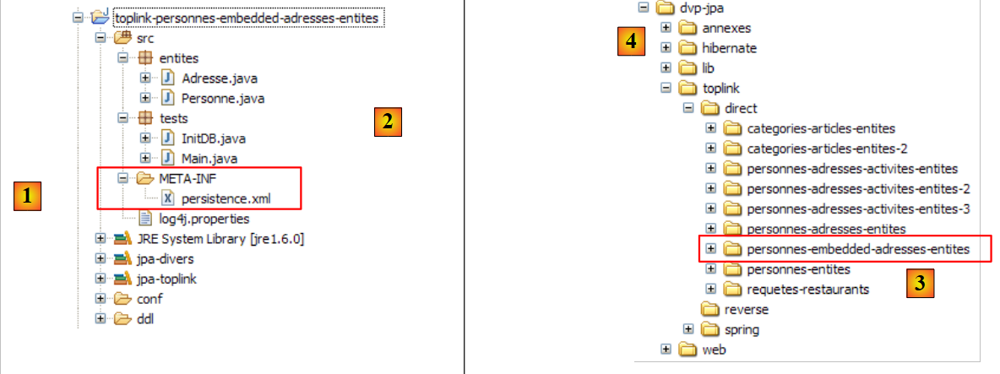 |
Les codes Java sont identiques à ceux du projet Hibernate précédent. L'environnement (bibliothèques – persistence.xml – sgbd - dossiers conf, ddl – script ant) est celui déjà étudié au paragraphe 2.1.15.2. Ce sera toujours le cas pour les projets Toplink à venir et, sauf exception, nous ne reviendrons plus sur cet environnement. Notamment, les fichiers persistence.xml qui configurent la couche JPA/Toplink pour différents SGBD sont ceux déjà étudiés et qui se trouvent dans le dossier <conf>.
S'il a un doute sur les procédures à suivre, le lecteur est invité à revenir sur celles suivies dans l'étude précédente.
Le projet Eclipse est présent [3] dans le dossier des exemples [4]. On l'importera.
L'exécution de [InitDB] avec le SGBD MySQL5 donne les résultats suivants :
 |
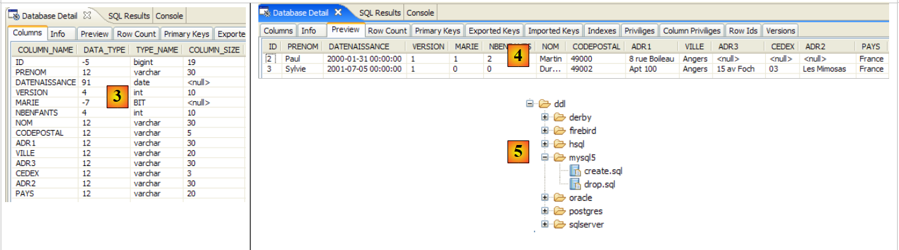 |
- [1] : l'affichage console
- [2] : les tables [jpa02_tl_personne] et [SEQENCE] dans la perspective SQL Explorer
- [3] et [4] : la structure et le contenu de [jpa02_tl_personne].
Les scripts SQL générés dans ddl/mysql5 [5] sont les suivants :
create.sql
CREATE TABLE jpa02_tl_personne (ID BIGINT NOT NULL, PRENOM VARCHAR(30) NOT NULL, DATENAISSANCE DATE NOT NULL, VERSION INTEGER NOT NULL, MARIE TINYINT(1) default 0 NOT NULL, NBENFANTS INTEGER NOT NULL, NOM VARCHAR(30) UNIQUE NOT NULL, CODEPOSTAL VARCHAR(5) NOT NULL, ADR1 VARCHAR(30) NOT NULL, VILLE VARCHAR(20) NOT NULL, ADR3 VARCHAR(30), CEDEX VARCHAR(3), ADR2 VARCHAR(30), PAYS VARCHAR(20) NOT NULL, PRIMARY KEY (ID))
CREATE TABLE SEQUENCE (SEQ_NAME VARCHAR(50) NOT NULL, SEQ_COUNT DECIMAL(38), PRIMARY KEY (SEQ_NAME))
INSERT INTO SEQUENCE(SEQ_NAME, SEQ_COUNT) values ('SEQ_GEN', 1)
drop.sql
DROP TABLE jpa02_tl_personne
DELETE FROM SEQUENCE WHERE SEQ_NAME = 'SEQ_GEN'
2.3. Exemple 3 : relation un-à-un via une clé étrangère
2.3.1. Le schéma de la base de données
1  | 2 |
- en [1] : la base de données. Cette fois-ci, l'adresse de la personne est mise dans une table [adresse] qui lui est propre. La table [personne] est liée à cette table par une clé étrangère.
- en [2] : la DDL générée par Hibernate pour MySQL5 :
- lignes 9-20 : la table [adresse] qui va être liée à la classe [Adresse] devenue un objet @Entity.
- ligne 10 : la clé primaire de la table [adresse]
- ligne 30 : au lieu d'une adresse complète, on trouve désormais dans la table [personne], l'identifiant [adresse_id] de cette adresse.
- lignes 34-38 : personne(adresse_id) est clé étrangère sur adresse(id).
2.3.2. Les objets @Entity représentant la base de données
Une personne avec adresse est représentée maintenant par la classe [Personne] suivante :
package entites;
...
@Entity
@Table(name = "jpa03_hb_personne")
public class Personne implements Serializable{
@Id
@Column(nullable = false)
@GeneratedValue(strategy = GenerationType.AUTO)
private Long id;
@Column(nullable = false)
@Version
private int version;
@Column(length = 30, nullable = false, unique = true)
private String nom;
@Column(length = 30, nullable = false)
private String prenom;
@Column(nullable = false)
@Temporal(TemporalType.DATE)
private Date datenaissance;
@Column(nullable = false)
private boolean marie;
@Column(nullable = false)
private int nbenfants;
@OneToOne(cascade = CascadeType.ALL, fetch=FetchType.LAZY)
@JoinColumn(name = "adresse_id", unique = true, nullable = false)
private Adresse adresse;
...
}
- lignes 32-34 : l'adresse de la personne
- ligne 32 : l'annotation @OneToOne désigne une relation un-à-un : une personne a au moins et au plus une adresse. L'attribut cascade = CascadeType.ALL signifie que toute opération (persist, merge, remove) sur l'@Entity [Personne] doit être cascadée sur l'@Entity [Adresse]. Du point de vue du contexte de persistance em, cela signifie la chose suivante. Si p est une personne et a son adresse :
- une opération em.persist(p) explicite entraînera une opération em.persist(a) implicite
- une opération em.merge(p) explicite entraînera une opération em.merge(a) implicite
- une opération em.remove(p) explicite entraînera une opération em.remove(a) implicite
- ligne 32 : l'annotation @OneToOne désigne une relation un-à-un : une personne a au moins et au plus une adresse. L'attribut cascade = CascadeType.ALL signifie que toute opération (persist, merge, remove) sur l'@Entity [Personne] doit être cascadée sur l'@Entity [Adresse]. Du point de vue du contexte de persistance em, cela signifie la chose suivante. Si p est une personne et a son adresse :
L'expérience montre que ces cascades implicites ne sont pas la panacée. Le développeur finit par oublier ce qu'elles font. On pourra préférer des opérations explicites dans le code. Il existe différents types de cascade. L'annotation @OneToOne aurait pu être écrite comme suit :
//@OneToOne(cascade = CascadeType.ALL, fetch=FetchType.LAZY)
@OneToOne(cascade = {CascadeType.MERGE, CascadeType.PERSIST, CascadeType.REFRESH, CascadeType.REMOVE}, fetch=FetchType.LAZY)
L'attribut cascade admet pour valeur ici un tableau de constantes précisant les types de cascades désirées.
L'attribut fetch=FetchType.LAZY demande à Hibernate de charger la dépendance au dernier moment. Lorsqu'on met une liste de personnes dans le contexte de persistance, on ne veut pas forcément y mettre leurs adresses. Par exemple, on ne peut vouloir cette adresse que pour une personne particulière choisie par un utilisateur au travers d'une interface web. L'attribut fetch=FetchType.EAGER lui, demande le chargement immédiat des dépendances.
- (suite)
- ligne 33 : l'annotation @JoinColumn définit la clé étrangère que possède la table de l'@Entity [Personne] sur la table de l'@Entity [Adresse]. L'attribut name définit le nom de la colonne qui sert de clé étrangère. L'attribut unique=true force la relation un-à-un : on ne peut avoir deux fois la même valeur dans la colonne [adresse_id]. L'attribut nullable=false force une personne à avoir une adresse.
L'adresse d'une personne est désormais représentée par l'@Entity [Adresse] suivante :
package entites;
...
@Entity
@Table(name = "jpa03_hb_adresse")
public class Adresse implements Serializable {
// champs
@Id
@Column(nullable = false)
@GeneratedValue(strategy = GenerationType.AUTO)
private Long id;
@Column(nullable = false)
@Version
private int version;
@Column(length = 30, nullable = false)
private String adr1;
@Column(length = 30)
private String adr2;
@Column(length = 30)
private String adr3;
@Column(length = 5, nullable = false)
private String codePostal;
@Column(length = 20, nullable = false)
private String ville;
@Column(length = 3)
private String cedex;
@Column(length = 20, nullable = false)
private String pays;
@OneToOne(mappedBy = "adresse", fetch=FetchType.LAZY)
private Personne personne;
// constructeurs
public Adresse() {
}
...
}
- ligne 4 : la classe [Adresse] devient un objet @Entity. Elle va donc faire l'objet d'une table dans la base de données.
- lignes 9-12 : comme tout objet @Entity, [Adresse] a une clé primaire. Elle a été nommée Id et présente les mêmes annotations (standard) de la clé primaire Id de l'@Entity [Personne].
- lignes 39-40 : la relation un-à-un avec l'@Entity [Personne]. Il y a plusieurs subtilités ici :
- tout d'abord le champ personne n'est pas obligatoire. Il nous permet, à partir d'une adresse de remonter à l'unique personne ayant cette adresse. Si nous n'avions pas désiré cette commodité, le champ personne n'existerait pas et tout marcherait quand même.
- la relation un-à-un qui lie les deux entités [Personne] et [Adresse] a déjà été configurée dans l'@Entity [Personne] :
@OneToOne(cascade = CascadeType.ALL, fetch=FetchType.LAZY)
@JoinColumn(name = "adresse_id", unique = true, nullable = false)
private Adresse adresse;
Pour que les deux configurations un-à-un n'entrent pas en conflit l'une avec l'autre, l'une est considérée comme principale et l'autre comme inverse. C'est la relation dite principale qui est gérée par le pont objet / relationnel. L'autre relation dite inverse, n'est pas gérée directement : elle l'est indirectement par la relation principale. Dans @Entity [Adresse] :
@OneToOne(mappedBy = "adresse", fetch=FetchType.LAZY)
private Personne personne;
c'est l'attribut mappedBy qui fait de la relation un-à-un ci-dessus, la relation inverse de la relation principale un-à-un définie par le champ adresse de @Entity [Personne].
2.3.3. Le projet Eclipse / Hibernate 1
L'implémentation JPA utilisée ici est celle d'Hibernate. Le projet Eclipse des tests est le suivant :
 |
Le projet est présent [3] dans le dossier des exemples [4]. On l'importera.
2.3.4. Génération de la DDL de la base de données
En suivant les instructions du paragraphe 2.1.7, la DDL obtenue pour le SGBD MySQL5 est celle montrée au début de ce paragraphe.
2.3.5. InitDB
Le code de [InitDB] est le suivant :
package tests;
...
import entites.Adresse;
import entites.Personne;
public class InitDB {
// constantes
private final static String TABLE_PERSONNE = "jpa03_hb_personne";
private final static String TABLE_ADRESSE = "jpa03_hb_adresse";
public static void main(String[] args) throws ParseException {
// Contexte de persistance
EntityManagerFactory emf = Persistence.createEntityManagerFactory("jpa");
EntityManager em = null;
// on récupère un EntityManager à partir de l'EntityManagerFactory précédent
em = emf.createEntityManager();
// début transaction
EntityTransaction tx = em.getTransaction();
tx.begin();
// requête
Query sql1;
// supprimer les éléments de la table PERSONNE
sql1 = em.createNativeQuery("delete from " + TABLE_PERSONNE);
sql1.executeUpdate();
// supprimer les éléments de la table ADRESSE
sql1 = em.createNativeQuery("delete from " + TABLE_ADRESSE);
sql1.executeUpdate();
// création personnes
Personne p1 = new Personne("Martin", "Paul", new SimpleDateFormat("dd/MM/yy").parse("31/01/2000"), true, 2);
Personne p2 = new Personne("Durant", "Sylvie", new SimpleDateFormat("dd/MM/yy").parse("05/07/2001"), false, 0);
// création adresses
Adresse a1 = new Adresse("8 rue Boileau", null, null, "49000", "Angers", null, "France");
Adresse a2 = new Adresse("Apt 100", "Les Mimosas", "15 av Foch", "49002", "Angers", "03", "France");
Adresse a3 = new Adresse("x", "x", "x", "x", "x", "x", "x");
Adresse a4 = new Adresse("y", "y", "y", "y", "y", "y", "y");
// associations personne <--> adresse
p1.setAdresse(a1);
a1.setPersonne(p1);
p2.setAdresse(a2);
a2.setPersonne(p2);
// persistance des personnes et par cascade de leurs adresses
em.persist(p1);
em.persist(p2);
// et des adresses a3 et a4 non liées à des personnes
em.persist(a3);
em.persist(a4);
// affichage personnes
System.out.println("[personnes]");
for (Object p : em.createQuery("select p from Personne p order by p.nom asc").getResultList()) {
System.out.println(p);
}
// affichage adresses
System.out.println("[adresses]");
for (Object a : em.createQuery("select a from Adresse a").getResultList()) {
System.out.println(a);
}
// fin transaction
tx.commit();
// fin EntityManager
em.close();
// fin EntityManagerFactory
emf.close();
// log
System.out.println("terminé...");
}
}
Nous ne commentons que ce qui présente un intérêt nouveau vis à vis de ce qui a déjà été étudié :
- lignes 31-32 : on crée deux personnes
- lignes 34-37 : on crée quatre adresses
- lignes 39-42 : on associe les personnes (p1,p2) aux adresses (a1,a2). Les adresses (a3,a4) sont orphelines. Aucune personne ne les référence. La DDL le permet. Si une personne a forcément une adresse, l'inverse n'est pas vrai.
- lignes 44-45 : on persiste les personnes (p1,p2). Comme on a mis un attribut cascade = CascadeType.ALL sur la relation un-à-un qui lie une personne à son adresse, les adresses (a1,a2) de ces deux personnes devraient subir également un persist. C'est ce qu'on veut vérifier. Pour les adresses orphelines (a3,a4), on est obligés de faire les choses explicitement (lignes 47-48).
- lignes 51-53 : affichage de la table des personnes
- lignes 56-57 : affichage de la table des adresses
L'exécution de [InitDB] avec MySQL5 donne les résultats suivants :
 |
 |
- [1] : l'affichage console
- [2] : les tables [jpa03_hb_*] dans la perspective SQL Explorer
- [3] : la table des personnes
- [4] : la table des adresses. Elles sont bien toutes là. On notera également le lien qu'a la colonne [adresse_id] dans [3] avec la colonne [id] dans [4] (clé étrangère).
2.3.6. Main
La classe [Main] enchaîne six tests que nous passons en revue.
2.3.6.1. Test1
Ce test est le suivant :
// création d'objets
public static void test1() throws ParseException {
// contexte de persistance
EntityManager em = getEntityManager();
// création personnes
p1 = new Personne("Martin", "Paul", new SimpleDateFormat("dd/MM/yy").parse("31/01/2000"), true, 2);
p2 = new Personne("Durant", "Sylvie", new SimpleDateFormat("dd/MM/yy").parse("05/07/2001"), false, 0);
// création adresses
a1 = new Adresse("8 rue Boileau", null, null, "49000", "Angers", null, "France");
a2 = new Adresse("Apt 100", "Les Mimosas", "15 av Foch", "49002", "Angers", "03", "France");
a3 = new Adresse("x", "x", "x", "x", "x", "x", "x");
a4 = new Adresse("y", "y", "y", "y", "y", "y", "y");
// associations personne <--> adresse
p1.setAdresse(a1);
a1.setPersonne(p1);
p2.setAdresse(a2);
a2.setPersonne(p2);
// début transaction
EntityTransaction tx = em.getTransaction();
tx.begin();
// persistance des personnes
em.persist(p1);
em.persist(p2);
// et des adresses a3 et a4 non liées à des personnes
em.persist(a3);
em.persist(a4);
// fin transaction
tx.commit();
// on affiche les tables
dumpPersonne();
dumpAdresse();
}
Ce code est repris de [InitDB]. Son résultat est le suivant :
Les deux tables ont été remplies.
2.3.6.2. Test2
Ce test est le suivant :
// modifier un objet du contexte
public static void test2() {
// contexte de persistance
EntityManager em = getEntityManager();
// début transaction
EntityTransaction tx = em.getTransaction();
tx.begin();
// on incrémente le nbre d'enfants de p1
p1.setNbenfants(p1.getNbenfants() + 1);
// on modifie son état marital
p1.setMarie(false);
// l'objet p1 est automatiquement sauvegardé (dirty checking)
// lors de la prochaine synchronisation (commit ou select)
// fin transaction
tx.commit();
// on affiche la nouvelle table
dumpPersonne();
}
Son résultat est le suivant :
- ligne 4 : la personne p1 a vu son nombre d'enfants augmenter de 1, et sa version passer de 0 à 1
2.3.6.3. Test4
Ce test est le suivant :
// supprimer un objet appartenant au contexte de persistance
public static void test4() {
// contexte de persistance
EntityManager em = getEntityManager();
// début transaction
EntityTransaction tx = em.getTransaction();
tx.begin();
// on supprime l'objet attaché p2
em.remove(p2);
// fin transaction
tx.commit();
// on affiche les nouvelles tables
dumpPersonne();
dumpAdresse();
}
- ligne 9 : on supprime la personne p2. Celle-ci a une relation de cascade avec l'adresse a2. Donc l'adresse a2 devrait être également supprimée.
Le résultat du test 4 est le suivant :
- la personne p2 présente ligne 3 du test 1 n'est plus présente dans le test 4
- il en est de même pour son adresse a2, en ligne 7 du test 1 et absente du test 4.
2.3.6.4. Test5
Ce test est le suivant :
// détacher, réattacher et modifier
public static void test5() {
// nouveau contexte de persistance
EntityManager em = getNewEntityManager();
// début transaction
EntityTransaction tx = em.getTransaction();
tx.begin();
// on réattache p1 au nouveau contexte
p1 = em.find(Personne.class, p1.getId());
// on change l'adresse de p1
p1.getAdresse().setVille("Paris");
// fin transaction
tx.commit();
// on affiche les nouvelles tables
dumpPersonne();
dumpAdresse();
}
- ligne 4 : on a un contexte de persistance neuf, donc vide.
- ligne 9 : on met la personne p1 dedans. p1 est cherché dans la base parce qu'il n'est pas dans le contexte. Les éléments dépendants de p1 (son adressse) eux, ne sont pas ramenés de la base parce qu'on a écrit :
@OneToOne(..., fetch=FetchType.LAZY)
C'est le concept du " lazy loading " ou " chargement en juste à temps " : les dépendances d'un objet persistant ne sont amenées en mémoire que lorsqu'on en a besoin.
- ligne 11 : on modifie le champ ville de l'adresse de p1. A cause du getAdresse et si l'adresse de p1 n'était pas déjà dans le contexte de persistance, elle va y être amenée par une lecture de la base.
- ligne 13 : on valide la transaction, ce qui va entraîner la synchronisation du contexte de persistance avec la base. Celui-ci va constater que l'adresse de la personne p1 a été modifiée et va la sauvegarder.
L'exécution de test5 donne les résultats suivants :
- la personne p1 (ligne 3 test4, ligne 10 test5) a bien vu sa ville passer d'Angers (ligne 5 test4) à Paris (ligne 12 test5).
2.3.6.5. Test6
Ce test est le suivant :
// supprimer un objet Adresse
public static void test6() {
EntityTransaction tx = null;
// nouveau contexte de persistance
EntityManager em = getNewEntityManager();
// début transaction
tx = em.getTransaction();
tx.begin();
// on réattache l'adresse a3 au nouveau contexte
a3 = em.find(Adresse.class, a3.getId());
System.out.println(a3);
// on la supprime
em.remove(a3);
// fin transaction
tx.commit();
// dump table Adresse
dumpAdresse();
}
- ligne 5 : on est dans un contexte de persistance neuf, donc vide.
- ligne 10 : on met l'adresse a3 dans le contexte de persistance
- ligne 13 : on la supprime. C'était une adresse orpheline (non liée à une personne). La suppression est donc possible.
Le résultat de l'exécution est le suivant :
- l'adresse a3 du test 5 (ligne 6) a disparu des adresses du test 6 (lignes 11-12)
2.3.6.6. Test7
Ce test est le suivant :
// rollback
public static void test7() {
EntityTransaction tx = null;
try {
// nouveau contexte de persistance
EntityManager em = getNewEntityManager();
// début transaction
tx = em.getTransaction();
tx.begin();
// on réattache l'adresse a1 au nouveau contexte
newa1 = em.find(Adresse.class, a1.getId());
// on réattache l'adresse a4 au nouveau contexte
newa4 = em.find(Adresse.class, a4.getId());
// on essaie de les supprimer - devrait lancer une exception car on ne peut supprimer une adresse liée à une personne, ce qui est le cas de newa1
em.remove(newa4);
em.remove(newa1);
// fin transaction
tx.commit();
} catch (RuntimeException e1) {
// on a eu un pb
System.out.format("Erreur dans transaction [%s%n%s%n%s%n%s]%n", e1.getClass().getName(), e1.getMessage(), e1.getCause(), e1.getCause()
.getCause());
try {
if (tx.isActive())
tx.rollback();
} catch (RuntimeException e2) {
System.out.format("Erreur au rollback [%s]%n", e2.getMessage());
}
// on abandonne le contexte courant
em.clear();
}
// dump - la table Adresse n'a pas du changer à cause du rollback
dumpAdresse();
}
- test7 : on teste un rollback d'une transaction
- ligne 6 : on est dans un contexte de persistance neuf, donc vide.
- ligne 11 : on met l'adresse a1 dans le contexte de persistance, sous la référence newa1
- ligne 13 : on met l'adresse a4 dans le contexte de persistance, sous la référence newa4
- lignes 15-16 : on supprime les deux adresses newa1 et newa4. newa1 est l'adresse de la personne p1 et donc dans la base p1 référence newa1 par une clé étrangère. Supprimer newa1 va donc échouer et lancer une exception lors de la synchronisation du contexte de persistance au commit de la transaction (ligne 18). Celle-ci va subir un rollback (ligne 25) et donc les deux opérations de la transaction vont être annulées. On devrait donc constater que l'adresse newa4, qui aurait pu légalement être supprimée, ne l'a pas été.
L'exécution donne le résultat suivant :
main : ----------- test6
A[3,0,x,x,x,x,x,x,x]
[adresses]
A[1,1,8 rue Boileau,null,null,49000,Paris,null,France]
A[4,0,y,y,y,y,y,y,y]
main : ----------- test7
Erreur dans transaction [javax.persistence.RollbackException
Error while commiting the transaction
org.hibernate.ObjectDeletedException: deleted entity passed to persist: [entites.Adresse#<null>]
null]
[adresses]
A[1,1,8 rue Boileau,null,null,49000,Paris,null,France]
A[4,0,y,y,y,y,y,y,y]
- la table des adresses du test 7 (lignes 12-13) est identique à celle du test 6 (lignes 4-5). Le rollback semble avoir eu lieu. Ceci dit, le message d'erreur de la ligne 9 est une énigme et mérite d'être creusée. Il semblerait que l'exception qui s'est produite ne soit pas celle attendue. Il faut passer les logs d'Hibernate dans log4j.properties en mode DEBUG pour y voir plus clair :
# Root logger option
log4j.rootLogger=ERROR, stdout
# Hibernate logging options (INFO only shows startup messages)
log4j.logger.org.hibernate=DEBUG
On constate alors, que lorsque l'adresse a1 a été placée dans le contexte de persistance, Hibernate y a placé également la personne p1, probablement à cause de la relation un-à-un de l'@Entity [Adresse] :
@OneToOne(mappedBy = "adresse", fetch=FetchType.LAZY)
private Personne personne;
Bien qu'on ait demandé le " LazyLoading " ici, la dépendance [Personne] est pourtant immédiatement chargée. Cela signifie probablement que l'attribut fetch=FetchType.LAZY n'a pas de sens ici. On constate ensuite qu'au commit de la transaction, Hibernate a préparé la suppression des adresses a1 et a4 mais également la sauvegarde de la personne p1. Et c'est là que se produit l'exception : parce que la personne p1 a une cascade sur son adresse, Hibernate veut persister également l'adresse a1 alors qu'elle vient d'être détruite. C'est Hibernate qui lance l'exception et non le pilote Jdbc. D'où le message de la ligne 9 plus haut. Par ailleurs, on peut constater que le rollback de la ligne 25 n'est jamais exécuté car la transaction est devenue inactive. Le test de la ligne 24 empêche donc le rollback.
On n'a donc pas atteint l'objectif désiré : montrer un rollback. Aucun ordre SQL n'a en fait été émis sur la base. On retiendra quelques points :
- l'intérêt d'activer des logs fins afin de comprendre ce que fait l'ORM
- si un ORM peut faciliter la vie du développeur, il peut également la lui compliquer en masquant des comportements que le développeur aurait besoin de connaître. Ici, le mode de chargement des dépendances d'une @Entity.
2.3.7. Projet Eclipse / Hibernate 2
Nous copions / collons le projet Eclipse / Hibernate afin de modifier légèrement la configuration des objets @Entity :
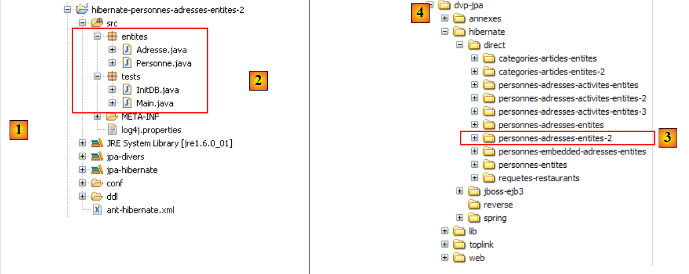 |
Le projet est présent [3] dans le dossier des exemples [4]. On l'importera.
Nous modifions uniquement l'@Entity [Adresse] afin qu'elle n'ait plus de relation inverse un-à-un avec l'@Entity [Personne] :
package entites;
...
@Entity
@Table(name = "jpa04_hb_adresse")
public class Adresse implements Serializable {
// champs
@Id
@Column(nullable = false)
@GeneratedValue(strategy = GenerationType.AUTO)
private Long id;
@Column(nullable = false)
@Version
private int version;
@Column(length = 30, nullable = false)
private String adr1;
...
@Column(length = 20, nullable = false)
private String pays;
// @OneToOne(mappedBy = "adresse", fetch=FetchType.LAZY)
// private Personne personne;
// constructeurs
public Adresse() {
}
- lignes 25-26 : la relation @OneToOne inverse est supprimée. Il faut bien comprendre qu'une relation inverse n'est jamais indispensable. Seule la relation principale l'est. La relation inverse peut être utilisée par commodité. Ici, elle permettait d'avoir de façon simple, le propriétaire d'une adresse. Une relation inverse peut toujours être remplacée par une requête JPQL. C'est ce que nous allons montrer dans l'exemple qui suit.
Les programmes de test sont repris à l'identique. Celui qui nous intéresse est uniquement le test 7, celui dans lequel on a vu la relation inverse un-à-un, en action. Nous ajoutons par ailleurs un test 8 pour montrer comment, sans relation inverse Adresse -> Personne, on peut néanmoins récupérer la personne ayant telle adresse.
Le test 7 ne change pas. Son exécution donne maintenant les résultats suivants (logs désactivés) :
main : ----------- test6
A[3,0,x,x,x,x,x,x,x]
[adresses]
A[1,1,8 rue Boileau,null,null,49000,Paris,null,France]
A[4,0,y,y,y,y,y,y,y]
main : ----------- test7
Erreur dans transaction [javax.persistence.RollbackException
Error while commiting the transaction
org.hibernate.exception.ConstraintViolationException: could not delete: [entites.Adresse#1]
java.sql.SQLException: Cannot delete or update a parent row: a foreign key constraint fails (`jpa/jpa04_hb_personne`, CONSTRAINT `FKEA3F04515FE379D0` FOREIGN KEY (`adresse_id`) REFERENCES `jpa04_hb_adresse` (`id`))]
[adresses]
A[1,1,8 rue Boileau,null,null,49000,Paris,null,France]
A[4,0,y,y,y,y,y,y,y]
- cette fois-ci, on a bien l'exception attendue : celle lancée par le pilote Jdbc parce qu'on a voulu supprimer dans la table [adresse] une ligne référencée par une clé étrangère d'une ligne de la table [personne]. La ligne [10] est explicite sur la cause de l'erreur.
- le rollback a bien eu lieu : à l'issue du test 7, la table [adresse] (lignes 12-13) est celle qu'on avait à l'issue du test 6 (lignes 4-5).
Quelle est la différence avec le test 7 du projet Eclipse précédent ? Pourquoi a-t-on ici une exception Jdbc qu'on n'avait pas pu avoir lors du test précédent ? Parce que l'@Entity [Adresse] n'a plus de relation inverse un-à-un avec l'@Entity [Personne], elle est gérée de façon isolée par Hibernate. Lorsque l'adresse newa1 a été amenée dans le contexte de persistance, Hibernate n'a pas mis également dans ce contexte, la personne p1 ayant cette adresse. La suppression des adresses newa1 et newa4 s'est donc faite sans entités Personne dans le contexte.
Maintenant, comment à partir de l'adresse newa1 pourrait-on avoir la personne p1 ayant cette adresse ? C'est une question légitime. Le test 8 suivant y répond :
// relation inverse un-à-un
// réalisée par une requête JPQL
public static void test8() {
EntityTransaction tx = null;
// nouveau contexte de persistance
EntityManager em = getNewEntityManager();
// début transaction
tx = em.getTransaction();
tx.begin();
// on réattache l'adresse a1 au nouveau contexte
newa1 = em.find(Adresse.class, a1.getId());
// on récupère la personne propriétaire de cette adresse
Personne p1 = (Personne) em.createQuery("select p from Personne p join p.adresse a where a.id=:adresseId").setParameter("adresseId", newa1.getId())
.getSingleResult();
// on les affiche
System.out.println("adresse=" + newa1);
System.out.println("personne=" + p1);
// fin transaction
tx.commit();
}
- ligne 6 : nouveau contexte de persistance vide
- lignes 8-9 : début transaction
- ligne 11 : l'adresse a1 est amenée dans le contexte de persistance et référencée par newa1.
- ligne 13 : on récupère la personne p1 ayant l'adresse newa1 par une requête JPQL. On sait que [Personne] et [Adresse] sont liées par une relation de clé étrangère. Dans la classe [Personne], c'est le champ [adresse] qui a l'annotation @OneToOne qui matérialise cette relation. L'écriture JPQL "select p from Personne p join p.adresse a" réalise une jointure entre les tables [personne] et [adresse]. L'équivalent SQL généré dans une console Hibernate (cf exemples du paragraphe 2.1.12) est le suivant :
On voit clairement la jointure des deux tables. Chaque personne est maintenant reliée à son adresse. Il reste à préciser qu'on ne s'intéresse qu'à l'adresse newa1. La requête devient "select p from Personne p join p.adresse a where a.id=:adresseId". On notera l'utilisation des alias p et a. Les requêtes JPQL utilisent les alias de façon intensive. Ainsi l'expression "from Personne p join p.adresse a" fait qu'une personne est représentée par l'alias p et son adresse (p.adresse) par l'alias a. L'opération de restriction "where a.id=:adresseId" restreint les lignes demandées aux seules personnes p ayant la valeur :adresseId comme identifiant de leur adresse a. :adresseId est appelé un paramètre, et l'ordre JPQL un ordre JPQL paramétré. A l'exécution, ce paramètre doit recevoir une valeur. C'est la méthode
qui permet de donner une valeur à un paramètre identifié par son nom. On notera que setParameter rend un objet Query, comme la méthode createQuery. Si bien qu'on peut enchaîner les appels de méthodes [em.createQuery(...).setParameter(...).getSingleResult(...)], les méthodes [setParameter, getSingleResult] étant des méthodes de l'interface Query. La méthode [getSingleResult] est utilisée pour les requêtes Select ne rendant qu'un unique résultat. C'est le cas ici.
- lignes 16-17 : on affiche l'adresse newa1 et la personne p1 ayant cette adresse, pour vérification.
Le résultat obtenu est le suivant :
Il est correct. On retiendra de cet exemple que la relation inverse un-à-un de l'@entity [Adresse] vers l'@entity [Personne] n'était pas indispensable. L'expérience a montré ici que sa suppression amenait un comportement plus prévisible du code. C'est souvent le cas.
2.3.8. Console Hibernate
Le test 8 précédent a utilisé une commande JPQL pour faire une jointure entre les entités Personne et Adresse. Bien qu'analogues au langage SQL, les langages JPQL de JPA ou HQL d'Hibernate nécessitent un apprentissage et la console Hibernate est excellente pour cela. Nous l'avons déjà utilisée au paragraphe 2.1.12, pour exploiter une unique table. Nous recommençons ici pour exploiter deux tables liées par une relation de clé étrangère.
Créons une console Hibernate pour notre projet Eclipse actuel :
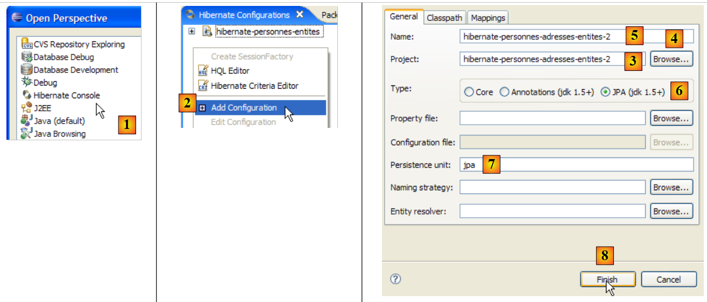 |
- [1] : nous passons dans une perspective [Hibernate Console] (Window / Open Perspective / Other)
- [2] : nous créons une nouvelle configuration
- à l'aide du bouton [4], nous sélectionnons le projet Java pour lequel est créé la configuration Hibernate. Son nom s'affiche dans [3].
- en [5], nous donnons le nom que nous voulons à cette configuration. Ici, nous avons repris le nom du projet Java.
- en [6], nous indiquons que nous utilisons une configuration JPA afin que l'outil sache qu'il doit exploiter le fichier [META-INF/persistence.xml]
- en [7] : nous indiquons dans ce fichier [META-INF/persistence.xml], il faut utiliser l'unité de persistance qui s'appelle jpa.
- en [8], on valide la configuration.
Pour la suite, il faut que le SGBD soit lancé. Ici, il s'agit de MySQL5.
 |
- en [1] : la configuration créée présente une arborescence à trois branches
- en [2] : la branche [Configuration] liste les objets que la console a utilisés pour se configurer : ici les @Entity Personne et Adresse.
- en [3] : la Session Factory est une notion Hibernate proche de l'EntityManager de JPA. Elle réalise le pont objet / relationnel grâce aux objets de la branche [Configuration]. En [3] sont présentés les objets du contexte de persistance, ici de nouveau les @Entity Personne et Adresse.
- en [4] : la base de données accédée au moyen de la configuration trouvée dans [persistence.xml]. On y retrouve les tables [jpa04_hb_*] générées par notre projet Eclipse actuel.
 |
- en [1], on crée un éditeur HQL
- dans l'éditeur HQL,
- en [2], on choisit la configuration Hibernate à utiliser s'il y en a plusieurs (c'est le cas ici)
- en [3], on tape la commande JPQL qu'on veut exécuter, ici la commande JPQL du test 8
- en [4], on l'exécute
- en [5], on obtient les résultats de la requête dans la fenêtre [Hibernate Query Result].
- en [6], la fenêtre [Hibernate Dynamic SQL preview] permet de voir la requête SQL qui a été jouée.
Une autre façon d'obtenir le même résultat :
 |
- en [1] : la commande JPQL opérant la jointure des entités Personne et Adresse. [ref1] appelle cette forme " jointure theta ".
- en [2] : l'équivalent SQL
- en [3] : le résultat
Une troisième forme acceptée uniquement par Hibernate (HQL) :
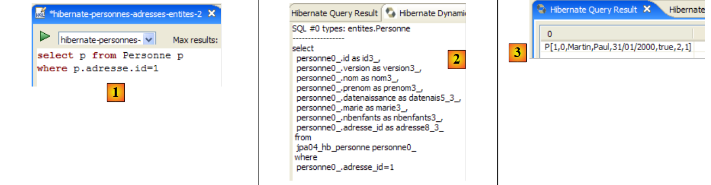 |
- en [1] : la commande HQL. JPQL n'accepte pas la notation p.adresse.id. Il n'accepte qu'un niveau d'indirection.
- en [2] : l'équivalent SQL. On voit qu'il évite la jointure entre tables.
- en [3] : le résultat
Voici d'autres exemples :
 |
- en [1] : la liste des personnes avec leur adresse
- en [2] : l'équivalent SQL.
- en [3] : le résultat
 |
- en [1] : la liste des adresses avec leur propriétaire s'il y en a un ou aucun sinon (jointure externe droite : l'entité Adresse qui va fournir les lignes sans relation avec Personne est à droite du mot clé join).
- en [2] : l'équivalent SQL.
- en [3] : le résultat
On notera que seule l'entité Personne détient une relation avec l'entité Adresse. L'inverse n'est plus vrai depuis qu'on a supprimé la relation inverse un-à-un appelée personne dans l'entité Adresse. Si cette relation inverse existait, on aurait pu écrire :
 |
- en [1] : la liste des adresses avec leur propriétaire s'il y en a un ou aucun sinon (jointure externe gauche : l'entité Adresse qui va fournir les lignes sans relation avec Personne est à gauche du mot clé join).
- en [2] : l'équivalent SQL.
- en [3] : le résultat
Nous invitons très vivement le lecteur à s'entraîner au langage JPQL avec la console Hibernate.
2.3.9. Implémentation JPA / Toplink
Nous utilisons maintenant une implémentation JPA / Toplink :
 |
Le nouveau projet Eclipse des tests est le suivant :
 |
Les codes Java sont identiques à ceux du projet Hibernate précédent. L'environnement (bibliothèques – persistence.xml – sgbd - dossiers conf, ddl – script ant) est celui étudié au paragraphe 2.1.15.2. Le projet Eclipse est présent [3] dans le dossier des exemples [4]. On l'importera.
Le fichier <persistence.xml> est modifié en un point, celui des entités déclarées :
<persistence-unit name="jpa" transaction-type="RESOURCE_LOCAL">
<!-- provider -->
<provider>oracle.toplink.essentials.PersistenceProvider</provider>
<!-- classes persistantes -->
<class>entites.Personne</class>
<class>entites.Adresse</class>
<!-- propriétés de l'unité de persistance -->
...
- lignes 5 et 6 : les deux entités gérées
L'exécution de [InitDB] avec le SGBD MySQL5 donne les résultats suivants :
 |
En [1], l'affichage console, en [2], les deux tables [jpa04_tl] générées, en [3] les scripts SQL générés. Leur contenu est le suivant :
create.sql
CREATE TABLE jpa04_tl_personne (ID BIGINT NOT NULL, PRENOM VARCHAR(30) NOT NULL, DATENAISSANCE DATE NOT NULL, VERSION INTEGER NOT NULL, MARIE TINYINT(1) default 0 NOT NULL, NBENFANTS INTEGER NOT NULL, NOM VARCHAR(30) UNIQUE NOT NULL, adresse_id BIGINT UNIQUE NOT NULL, PRIMARY KEY (ID))
CREATE TABLE jpa04_tl_adresse (ID BIGINT NOT NULL, ADR3 VARCHAR(30), CODEPOSTAL VARCHAR(5) NOT NULL, ADR1 VARCHAR(30) NOT NULL, VILLE VARCHAR(20) NOT NULL, VERSION INTEGER NOT NULL, CEDEX VARCHAR(3), ADR2 VARCHAR(30), PAYS VARCHAR(20) NOT NULL, PRIMARY KEY (ID))
ALTER TABLE jpa04_tl_personne ADD CONSTRAINT FK_jpa04_tl_personne_adresse_id FOREIGN KEY (adresse_id) REFERENCES jpa04_tl_adresse (ID)
CREATE TABLE SEQUENCE (SEQ_NAME VARCHAR(50) NOT NULL, SEQ_COUNT DECIMAL(38), PRIMARY KEY (SEQ_NAME))
INSERT INTO SEQUENCE(SEQ_NAME, SEQ_COUNT) values ('SEQ_GEN', 1)
drop.sql
ALTER TABLE jpa04_tl_personne DROP FOREIGN KEY FK_jpa04_tl_personne_adresse_id
DROP TABLE jpa04_tl_personne
DROP TABLE jpa04_tl_adresse
DELETE FROM SEQUENCE WHERE SEQ_NAME = 'SEQ_GEN'
2.4. Exemple 4 : relation un-à-plusieurs
2.4.1. Le schéma de la base de données
1  | 2 |
- en [1], la base de données et en [2], sa DDL (MySQL5)
Un article A(id, version, nom) appartient exactement à une catégorie C(id, version, nom). Une catégorie C peut contenir 0, 1 ou plusieurs articles. On a une relation un-à-plusieurs (Categorie -> Article) et la relation inverse plusieurs-à-un (Article -> Categorie). Cette relation est matérialisée par la clé étrangère que possède la table [article] sur la table [categorie] (lignes 24-28 de la DDL).
2.4.2. Les objets @Entity représentant la base de données
Un article est représenté par l'@Entity [Article] suivante :
package entites;
...
@Entity
@Table(name="jpa05_hb_article")
public class Article implements Serializable {
// champs
@Id
@GeneratedValue(strategy = GenerationType.AUTO)
private Long id;
@SuppressWarnings("unused")
@Version
private int version;
@Column(length = 30)
private String nom;
// relation principale Article (many) -> Category (one)
// implémentée par une clé étrangère (categorie_id) dans Article
// 1 Article a nécessairement 1 Categorie (nullable=false)
@ManyToOne(fetch=FetchType.LAZY)
@JoinColumn(name = "categorie_id", nullable = false)
private Categorie categorie;
// constructeurs
public Article() {
}
// getters et setters
...
// toString
public String toString() {
return String.format("Article[%d,%d,%s,%d]", id, version, nom, categorie.getId());
}
}
- lignes 9-11 : clé primaire de l'@Entity
- lignes 13-15 : son n° de version
- lignes 17-18 : nom de l'article
- lignes 20-25 : relation plusieurs-à-un qui relie l'@Entity Article à l'@Entity Categorie :
- ligne 23 : l'annotation ManyToOne. Le Many se rapport à l'@Entity Article dans lequel on se trouve et le One à l'@Entity Categorie (ligne 25). Une catégorie (One) peut avoir plusieurs articles (Many).
- ligne 24 : l'annotation ManyToOne définit la colonne clé étrangère dans la table [article]. Elle s'appellera (name) categorie_id et chaque ligne devra avoir une valeur dans cette colonne (nullable=false).
- ligne 25 : la catégorie à laquelle appartient l'article. Lorsqu'un article sera mis dans le contexte de persistance, on demande à ce que sa catégorie n'y soit pas mise immédiatement (fetch=FetchType.LAZY, ligne 23). On ne sait pas si cette demande a un sens. On verra.
Une catégorie est représentée par l'@Entity [Categorie] suivante :
package entites;
...
@Entity
@Table(name="jpa05_hb_categorie")
public class Categorie implements Serializable {
// champs
@Id
@GeneratedValue(strategy = GenerationType.AUTO)
private Long id;
@SuppressWarnings("unused")
@Version
private int version;
@Column(length = 30)
private String nom;
// relation inverse Categorie (one) -> Article (many) de la relation Article (many) -> Categorie (one)
// cascade insertion Categorie -> insertion Articles
// cascade maj Categorie -> maj Articles
// cascade suppression Categorie -> suppression Articles
@OneToMany(mappedBy = "categorie", cascade = { CascadeType.ALL })
private Set<Article> articles = new HashSet<Article>();
// constructeurs
public Categorie() {
}
// getters et setters
...
// toString
public String toString() {
return String.format("Categorie[%d,%d,%s]", id, version, nom);
}
// association bidirectionnelle Categorie <--> Article
public void addArticle(Article article) {
// l'article est ajouté dans la collection des articles de la catégorie
articles.add(article);
// l'article change de catégorie
article.setCategorie(this);
}
}
- lignes 8-11 : la clé primaire de l'@Entity
- lignes 12-14 : sa version
- lignes 16-17 : le nom de la catégorie
- lignes 19-24 : l'ensemble (set) des articles de la catégorie
- ligne 23 : l'annotation @OneToMany désigne une relation un-à-plusieurs. Le One désigne l'@Entity [Categorie] dans laquelle on se trouve, le Many le type [Article] de la ligne 24 : une (One) catégorie a plusieurs (Many) articles.
- ligne 23 : l'annotation est l'inverse (mappedBy) de l'annotation ManyToOne placée sur le champ categorie de l'@Entity Article : mappedBy=categorie. La relation ManyToOne placée sur le champ categorie de l'@Entity Article est la relation principale. Elle est indispensable. Elle matérialise la relation de clé étrangère qui lie l'@Entity Article à l'@Entity Categorie. La relation OneToMany placée sur le champ articles de l'@Entity Categorie est la relation inverse. Elle n'est pas indispensable. C'est une commodité pour obtenir les articles d'une catégorie. Sans cette commodité, ces articles seraient obtenus par une requête JPQL.
- ligne 23 : cascadeType.ALL demande à que les opérations (persist, merge, remove) faites sur une @Entity Categorie soient cascadées sur ses articles.
- ligne 24 : les articles d'une catégorie seront placés dans un objet de type Set<Article>. Le type Set n'accepte pas les doublons. Ainsi on ne peut mettre deux fois le même article dans l'objet Set<Article>. Que veut dire "le même article" ? Pour dire que l'article a est le même que l'article b, Java utilise l'expression a.equals(b). Dans la classe Object, mère de toutes les classes, a.equals(b) est vraie si a==b, c.a.d. si les objets a et b ont le même emplacement mémoire. On pourrait vouloir dire que les articles a et b sont les mêmes s'ils ont le même nom. Dans ce csa, le développeur doit redéfinir deux méthodes dans la classe [Article] :
- equals : qui doit rendre vrai si les deux articles ont le même nom
- hashCode : doit rendre une valeur entière identique pour deux objets [Article] que la méthode equals considère comme égaux. Ici, la valeur sera donc construite à partir du nom de l'article. La valeur rendue par hashCode peut être un entier quelconque. Elle est utilisée dans différents conteneurs d'objets, notamment les dictionnaires (Hashtable).
La relation OneToMany peut utiliser d'autres types que le Set pour stocker le Many, des objets List, par exemple. Nous n'aborderons pas ces cas dans ce document. Le lecteur les trouvera dans [ref1].
- ligne 38 : la méthode [addArticle] nous permet d'ajouter un article à une catégorie. La méthode prend soin de mettre à jour les deux extrémités de la relation OneToMany qui lie [Categorie] à [Article].
2.4.3. Le projet Eclipse / Hibernate 1
L'implémentation JPA utilisée ici est celle d'Hibernate. Le projet Eclipse des tests est le suivant :
 |
Le projet est présent [3] dans le dossier des exemples [4]. On l'importera.
2.4.4. Génération de la DDL de la base de données
En suivant les instructions du paragraphe 2.1.7, la DDL obtenue pour le SGBD MySQL5 est celle montrée au début de cette exemple, au paragraphe 2.4.1.
2.4.5. InitDB
Le code de [InitDB] est le suivant :
package tests;
...
public class InitDB {
// constantes
private final static String TABLE_ARTICLE = "jpa05_hb_article";
private final static String TABLE_CATEGORIE = "jpa05_hb_categorie";
public static void main(String[] args) {
// Contexte de persistance
EntityManagerFactory emf = Persistence.createEntityManagerFactory("jpa");
EntityManager em = null;
// on récupère un EntityManager à partir de l'EntityManagerFactory précédent
em = emf.createEntityManager();
// début transaction
EntityTransaction tx = em.getTransaction();
tx.begin();
// requête
Query sql1;
// supprimer les éléments de la table ARTICLE
sql1 = em.createNativeQuery("delete from " + TABLE_ARTICLE);
sql1.executeUpdate();
// supprimer les éléments de la table CATEGORIE
sql1 = em.createNativeQuery("delete from " + TABLE_CATEGORIE);
sql1.executeUpdate();
// créer trois catégories
Categorie categorieA = new Categorie();
categorieA.setNom("A");
Categorie categorieB = new Categorie();
categorieB.setNom("B");
Categorie categorieC = new Categorie();
categorieC.setNom("C");
// créer 3 articles
Article articleA1 = new Article();
articleA1.setNom("A1");
Article articleA2 = new Article();
articleA2.setNom("A2");
Article articleB1 = new Article();
articleB1.setNom("B1");
// les relier à leur catégorie
categorieA.addArticle(articleA1);
categorieA.addArticle(articleA2);
categorieB.addArticle(articleB1);
// persister les catégories et par cascade (insertion) les articles
em.persist(categorieA);
em.persist(categorieB);
em.persist(categorieC);
// affichage catégories
System.out.println("[categories]");
for (Object p : em.createQuery("select c from Categorie c order by c.nom asc").getResultList()) {
System.out.println(p);
}
// affichage articles
System.out.println("[articles]");
for (Object p : em.createQuery("select a from Article a order by a.nom asc").getResultList()) {
System.out.println(p);
}
// fin transaction
tx.commit();
// fin EntityManager
em.close();
// fin EntityMangerFactory
emf.close();
// log
System.out.println("terminé...");
}
}
- lignes 22-27 : les tables [article] et [categorie] sont vidées. On notera qu'on est obligés de commencer par celle qui a la clé étrangère. Si on commençait par la table [categorie] on supprimerait des catégories référencées par des lignes de la table [article] et cela le SGBD le refuserait.
- lignes 29-34 : on crée trois catégories A, B, C
- lignes 36-41 : on crée trois articles A1, A2, B1 (la lettre indique la catégorie)
- lignes 43-45 : les 3 articles sont mis dans leurs catégories respectives
- lignes 47-49 : les 3 catégories sont mises dans le contexte de persistance. A cause de la cascade Categorie -> Article, leurs articles vont y être placés également. Donc tous les objets créés sont maintenant dans le contexte de persistance.
- lignes 50-59 : le contexte de persistance est requêté pour obtenir la liste des catégories et articles. On sait que cela va provoquer une synchronisation du contexte avec la base. C'est à ce moment que les catégories et articles vont être enregistrés dans leurs tables respectives.
L'exécution de [InitDB] avec MySQL5 donne les résultats suivants :
 |
- [1] : l'affichage console
- [2] : les tables [jpa05_hb_*] dans la perspective SQL Explorer
- [3] : la table des catégories
- [4] : la table des articles. On notera le lien de [categorie_id] dans [4] avec [id] dans [3] (clé étrangère).
2.4.6. Main
La classe [Main] enchaîne des tests que nous passons en revue sauf les tests 1 et 2 qui reprennent le code de [InitDB] pour initialiser la base.
2.4.6.1. Test3
Ce test est le suivant :
// rechercher un élément particulier
public static void test3() {
// nouveau contexte de persistance
EntityManager em = getNewEntityManager();
// transaction
EntityTransaction tx = em.getTransaction();
tx.begin();
// chargement catégorie
Categorie categorie = em.find(Categorie.class, categorieA.getId());
// affichage catégorie et ses articles associés
System.out.format("Articles de la catégorie %s :%n", categorie);
for (Article a : categorie.getArticles()) {
System.out.println(a);
}
// fin transaction
tx.commit();
}
- ligne 4 : on a un contexte de perssitance neuf donc vide
- lignes 6-7 : début transaction
- ligne 9 : la catégorie A est amenée de la base dans le contexte de persistance
- ligne 11 : on affiche la catégorie A
- lignes 12-14 : on affiche les articles de la catégorie A. On montre là l'intérêt de la relation inverse OneToMany articles de l'@Entity Categorie. Sa présence nous évite de faire une requête JPQL pour demander les articles de la catégorie A. Pour obtenir ceux-ci, on utilise la méthode get du champ articles.
Les résultats sont les suivants :
- ligne 20 : la catégorie A
- lignes 21-22 : les deux articles de la catégorie A
2.4.6.2. Test4
Ce test est le suivant :
// supprimer un article
@SuppressWarnings("unchecked")
public static void test4() {
// nouveau contexte de persistance
EntityManager em = getNewEntityManager();
// transaction
EntityTransaction tx = em.getTransaction();
tx.begin();
// chargement article A1
Article newarticle1 = em.find(Article.class, articleA1.getId());
// suppression article A1 (aucune catégorie n'est actuellement chargée)
em.remove(newarticle1);
// toplink : l'article doit être enlevé de sa catégorie sinon le test6 plante
// hibernate : ce n'est pas nécessaire
newarticle1.getCategorie().getArticles().remove(newarticle1);
// fin transaction
tx.commit();
// dump des articles
dumpArticles();
}
- le test 4 supprime l'article A1
- ligne 5 : on part d'un contexte neuf et vide
- ligne 10 : l'article A1 est amené dans le contexte de persistance. Il y sera référencé par newarticle1.
- ligne 12 : il est supprimé du contexte
- ligne 15 : les catégories A, B et C et les articles A1, A2 et B1, s'ils ne sont plus persistants sont néanmoins encore en mémoire. Ils sont simplement détachés du contexte de persistance. L'article A1 qui fait partie des articles de la catégorie A en est enlevé. Cela va rendre possible ultérieurement le réattachement de la catégorie A au contexte de persistance. Si on ne le fait pas, la catégorie A sera rattachée avec un ensemble d'articles dont l'un a été supprimé. Cela ne semble pas gêner Hibernate mais plante Toplink.
- ligne 19 : on affiche tous les articles pour vérifier que A1 a disparu.
Les résultats sont les suivants :
L'article A1 a bien disparu.
2.4.6.3. Test5
Ce test est le suivant :
// modification d'1 article
public static void test5() {
// nouveau contexte de persistance
EntityManager em = getNewEntityManager();
// transaction
EntityTransaction tx = em.getTransaction();
tx.begin();
// modification articleA2
articleA2.setNom(articleA2.getNom() + "-");
// articleA2 est remis dans le contexte de persistance
em.merge(articleA2);
// fin transaction
tx.commit();
// dump des articles
dumpArticles();
}
- le test 5 change le nom de l'article A2
- ligne 4 : on part d'un contexte neuf et vide
- ligne 9 : on change le nom de l'article détaché A2 qui va devenir "A2-".
- ligne 11 : l'article détaché A2 est réattaché au contexte de persistance. On notera que A2 reste toujours un objet détaché. C'est l'objet em.merge(articleA2) qui fait partie désormais du contexte de persistance. Cet objet n'a pas été ici mémorisé dans une variable comme il est d'usage. Il est donc inaccessible.
- ligne 13 : synchronisation du contexte de persistance avec la base. L'article A2 va être modifié dans la base et voir son n° de version passer de N à N+1. La version mémoire détachée articleA2 n'est plus valide. Il en est de même de l'objet détaché représentant la catégorie A parce que celui-ci contient articleA2 parmi ses articles.
- ligne 15 : on affiche tous les articles pour vérifier le changement de nom de l'article A2
Les résultats sont les suivants :
L'article A2 a bien changé de nom.
2.4.6.4. Test6
Ce test est le suivant :
// modification d'1 catégorie et de ses articles
public static void test6() {
// nouveau contexte de persistance
EntityManager em = getNewEntityManager();
// transaction
EntityTransaction tx = em.getTransaction();
tx.begin();
// chargement catégorie
categorieA = em.find(Categorie.class, categorieA.getId());
// liste des articles de la catégorie A
for (Article a : categorieA.getArticles()) {
a.setNom(a.getNom() + "-");
}
// modification nom catégorie
categorieA.setNom(categorieA.getNom() + "-");
// fin transaction
tx.commit();
// dump des catégories et des articles
dumpCategories();
dumpArticles();
}
- le test 6 change le nom de la catégorie A et de tous ses articles
- ligne 4 : on part d'un contexte neuf et vide
- ligne 9 : on va chercher la catégorie A dans la base. On ne fait pas un merge de l'objet détaché categorieA car on sait qu'il a une référence sur l'article A2 devenu obsolète. On repart donc de zéro.
- lignes 11-12 : on change le nom de tous les articles de la catégorie A. De nouveau on utilise la relation inverse OneToMany via la méthode getArticles.
- ligne 15 : le nom de la catégorie est également modifié
- ligne 17 : fin de la transaction. Une synchronisation du contexte avec la base est fait. Tous les objets du contexte qui ont été modifiés vont être mis à jour dans la base.
- lignes 21-22 : on affiche les articles et les catégories pour vérification
Les résultats sont les suivants :
L'article A2 a bien changé une nouvelle fois de nom ainsi que la catégorie A.
2.4.6.5. Test7
Ce test est le suivant :
// suppression d'une catégorie
public static void test7() {
// nouveau contexte de persistance
EntityManager em = getNewEntityManager();
// transaction
EntityTransaction tx = em.getTransaction();
tx.begin();
// persistance catégorieB et par cascade (merge) les articles associés
Categorie mergedcategorieB = em.merge(categorieB);
// suppression catégorie et par cascade (delete) les articles associés
em.remove(mergedcategorieB);
// fin transaction
tx.commit();
// dump des catégories et des articles
dumpCategories();
dumpArticles();
}
- le test 7 supprime la catégorie B et par cascade ses articles
- ligne 4 : on part d'un contexte neuf et vide
- ligne 9 : la catégorie B existe en mémoire en tant qu'objet détaché du contexte de persistance. On la réintègre (merge) au contexte de persistance. Par cascade, ses articles (l'article B1) vont subir un merge et donc réintégrer le contexte de persistance.
- ligne 11 : maintenant que la catégorie B est dans le contexte, on peut la supprimer (remove). Par cascade, ses articles vont également subir un remove. C'est parce que l'opération merge de la ligne 9 les a réintégrés au contexte de persistance que cette opération est possible.
- ligne 13 : fin de la transaction. Le contexte va être synchronisé. Les objets du contexte ayant subi un remove vont être supprimés de la base.
- lignes 15-16 : on affiche les articles et les catégories pour vérification
Les résultats sont les suivants :
La catégorie B et l'article B1 ont bien disparu.
2.4.6.6. Test8
Ce test est le suivant :
// requêtes
@SuppressWarnings("unchecked")
public static void test8() {
// nouveau contexte de persistance
EntityManager em = getNewEntityManager();
// transaction
EntityTransaction tx = em.getTransaction();
tx.begin();
// liste des articles de la catégorie A
List articles = em
.createQuery(
"select a from Categorie c join c.articles a where c.nom like 'A%' order by a.nom asc")
.getResultList();
// affichages articles
System.out.println("Articles de la catégorie A");
for (Object a : articles) {
System.out.println(a);
}
// fin transaction
tx.commit();
}
- le test 7 montre comment récupérer les articles d'une catégorie sans passer par la relation inverse. Cela montre que celle-ci n'est donc pas indispensable.
- ligne 4 : on part d'un contexte neuf et vide
- ligne 10 : une requête JPQL qui demande tous les articles d'une catégorie ayant un nom commençant par A
- lignes 15-17 : affichage du résultat de la requête.
Les résultats sont les suivants :
2.4.7. Projet Eclipse / Hibernate 2
Nous copions / collons le projet Eclipse / Hibernate afin de préciser un point sur la notion relation principale / relation inverse que nous avons créée autour de l'annotation @ManyToOne (principale) de l'@Entity [Article] et la relation inverse @OneToMany(inverse) de l'@Entity [Categorie]. Nous voulons montrer que si cette dernière relation n'est pas déclarée inverse de l'autre, alors le schéma généré pour la base de données est tout autre que celui généré précédemment.
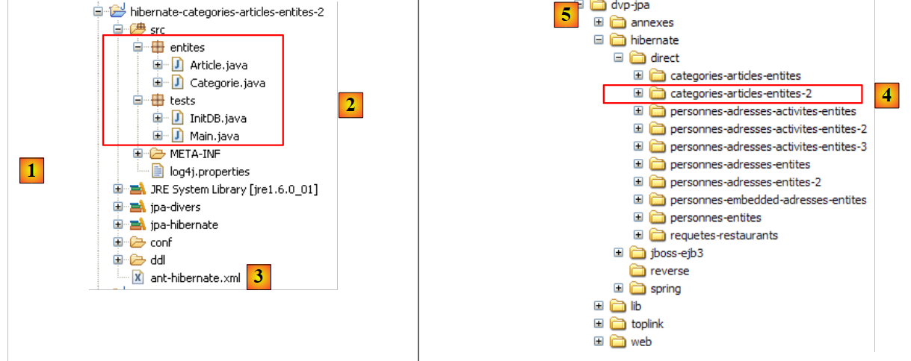 |
En [1] le nouveau projet Eclipse. En [2] les codes Java, en [3] le script ant qui va générer le schéma SQL de la base de données. Le projet est présent [4] dans le dossier des exemples [5]. On l'importera.
Nous modifions uniquement l'@Entity [Categorie] afin que sa relation @OneToMany avec l'@Entity [Article] ne soit plus déclarée inverse de la relation @ManyToOne qu'a l'@Entity [Article] avec l'@Entity [Categorie] :
...
@Entity
@Table(name="jpa05_hb_categorie")
public class Categorie implements Serializable {
// champs
@Id
@GeneratedValue(strategy = GenerationType.AUTO)
private Long id;
@SuppressWarnings("unused")
@Version
private int version;
@Column(length = 30)
private String nom;
// relation OneToMany non inverse (absence de mappedby) Categorie (one) -> Article (many)
// implémentée par une table de jointure Categorie_Article pour qu'à partir d'une catégorie
// on puisse atteindre les articles de cette catégorie
@OneToMany(cascade=CascadeType.ALL, fetch=FetchType.LAZY)
private Set<Article> articles = new HashSet<Article>();
// constructeurs
...
- lignes 18-22 : on veut encore garder la possibilité de trouver les articles d'une catégorie donnée grâce à la relation @OneToMany de la ligne 21. Mais on veut connaître l'influence de l'attribut mappedBy qui fait d'une relation, l'inverse d'une relation principale définie ailleurs, dans une autre @Entity. Ici, le mappedBy a été enlevé.
Nous exécutons la tâche ant-DLL (cf paragraphe 2.1.7) avec le SGBD MySQL5. Le schéma obtenu est le suivant :
 |
On notera les points suivants :
- une nouvelle table [categorie_article] [1] a été créée. Elle n'existait pas auparavant.
- c'est une table de jointure entre les tables [categorie] [2] et [article] [3]. Si les objets Article a1, a2 font partie de la catégorie c1, on trouvera dans la table de jointure, les lignes :
où c1, a1, a2 sont les clés primaires des objets correspondants.
- la table de jointure [categorie_article] [1] a été créée par Hibernate afin qu'à partir d'un objet Categorie c, on puisse retrouver les objets Article a appartenant à c. C'est la relation @OneToMany qui a forcé la création de cette table. Parce qu'on ne l'a pas déclarée inverse de la relation principale @ManyToOne de l'@Entity Article, Hibernate ne savait pas qu'il pouvait utiliser cette relation principale pour récupérer les articles d'une catégorie c. Il s'est donc débrouillé autrement.
- avec cet exemple, on comprend mieux les notions de relations principale et inverse. L'une (l'inverse) utilise les propriétés de l'autres (la principale).
Le schéma SQL de cette base de données pour MySQL5 est le suivant :
alter table jpa05_hb_categorie_jpa06_hb_article
drop
foreign key FK79D4BA1D26D17756;
alter table jpa05_hb_categorie_jpa06_hb_article
drop
foreign key FK79D4BA1D424C61C9;
alter table jpa06_hb_article
drop
foreign key FK4547168FECCE8750;
drop table if exists jpa05_hb_categorie;
drop table if exists jpa05_hb_categorie_jpa06_hb_article;
drop table if exists jpa06_hb_article;
create table jpa05_hb_categorie (
id bigint not null auto_increment,
version integer not null,
nom varchar(30),
primary key (id)
) ENGINE=InnoDB;
create table jpa05_hb_categorie_jpa06_hb_article (
jpa05_hb_categorie_id bigint not null,
articles_id bigint not null,
primary key (jpa05_hb_categorie_id, articles_id),
unique (articles_id)
) ENGINE=InnoDB;
create table jpa06_hb_article (
id bigint not null auto_increment,
version integer not null,
nom varchar(30),
categorie_id bigint not null,
primary key (id)
) ENGINE=InnoDB;
alter table jpa05_hb_categorie_jpa06_hb_article
add index FK79D4BA1D26D17756 (jpa05_hb_categorie_id),
add constraint FK79D4BA1D26D17756
foreign key (jpa05_hb_categorie_id)
references jpa05_hb_categorie (id);
alter table jpa05_hb_categorie_jpa06_hb_article
add index FK79D4BA1D424C61C9 (articles_id),
add constraint FK79D4BA1D424C61C9
foreign key (articles_id)
references jpa06_hb_article (id);
alter table jpa06_hb_article
add index FK4547168FECCE8750 (categorie_id),
add constraint FK4547168FECCE8750
foreign key (categorie_id)
references jpa05_hb_categorie (id);
- lignes 19-24, création de la table [categorie] et lignes 33-39, création de la table [article]. On notera qu'elles sont identiques à ce qu'elles étaient dans l'exemple précédent.
- lignes 26-31 : création de la table de jointure [categorie_article] due à la présence de la relation non inverse @OneToMany de l'@Entity Categorie. Les lignes de cette table sont de type [c,a] où c est la clé primaire d'une catégorie c et a la clé primaire d'un article a appartenant à la catégorie c. La clé primaire de cette table de jointure est constituée des deux clés primaires [c,a] concaténées (ligne 29).
- lignes 41-45 : la contrainte de clé étrangère de la table [categorie_article] vers la table [categorie]
- lignes 47-51 : la contrainte de clé étrangère de la table [categorie_article] vers la table [article]
- lignes 53-57 : la contrainte de clé étrangère de la table [article] vers la table [categorie]
Le lecteur est invité à exécuter les tests [InitDB] et [Main]. Ils donnent les mêmes résultats qu'auparavant. Le schéma de la base de données est cependant redondant et les performances seront dégradées vis à vis de la version précédente. Il faudrait sans doute approfondir cette question de relations inverse / principale pour voir si la nouvelle configuration n'amène pas de plus, des conflits dus au fait qu'on a deux relations indépendantes pour représenter la même chose : la relation plusieurs-à-un qu'a la table [article] avec la table [categorie].
2.4.8. Implémentation JPA / Toplink - 1
Nous utilisons maintenant une implémentation JPA / Toplink :
 |
Le projet Eclipse avec Toplink est une copie du projet Eclipse avec Hibernate, version 1 :
 |
Les codes Java sont identiques à ceux du projet Hibernate - version 1 - précédent. L'environnement (bibliothèques – persistence.xml – sgbd - dossiers conf, ddl – script ant) est celui étudié au paragraphe 2.1.15.2. Le projet Eclipse est présent [3] dans le dossier des exemples [4]. On l'importera.
Le fichier <persistence.xml> [2] est modifié en un point, celui des entités déclarées :
...
<!-- classes persistantes -->
<class>entites.Categorie</class>
<class>entites.Article</class>
...
- lignes 3 et 4 : les deux entités gérées
L'exécution de [InitDB] avec le SGBD MySQL5 donne les résultats suivants :
 |
En [1], l'affichage console, en [2], les deux tables [jpa05_tl] générées, en [3] les scripts SQL générés. Leur contenu est le suivant :
create.sql
CREATE TABLE jpa05_tl_article (ID BIGINT NOT NULL, VERSION INTEGER, NOM VARCHAR(30), categorie_id BIGINT NOT NULL, PRIMARY KEY (ID))
CREATE TABLE jpa05_tl_categorie (ID BIGINT NOT NULL, VERSION INTEGER, NOM VARCHAR(30), PRIMARY KEY (ID))
ALTER TABLE jpa05_tl_article ADD CONSTRAINT FK_jpa05_tl_article_categorie_id FOREIGN KEY (categorie_id) REFERENCES jpa05_tl_categorie (ID)
CREATE TABLE SEQUENCE (SEQ_NAME VARCHAR(50) NOT NULL, SEQ_COUNT DECIMAL(38), PRIMARY KEY (SEQ_NAME))
INSERT INTO SEQUENCE(SEQ_NAME, SEQ_COUNT) values ('SEQ_GEN', 1)
drop.sql
ALTER TABLE jpa05_tl_article DROP FOREIGN KEY FK_jpa05_tl_article_categorie_id
DROP TABLE jpa05_tl_article
DROP TABLE jpa05_tl_categorie
DELETE FROM SEQUENCE WHERE SEQ_NAME = 'SEQ_GEN'
L'exécution de [Main] se passe sans erreur.
2.4.9. Implémentation JPA / Toplink - 2
Ce projet Eclipse est issu du précédent par recopie. Comme il a été fait avec Hibernate, on enlève l'attribut mappedBy de la relation @OneToMany de l'@Entity Categorie.
@Entity
@Table(name = "jpa06_tl_categorie")
public class Categorie implements Serializable {
// champs
@Id
@GeneratedValue(strategy = GenerationType.AUTO)
private Long id;
@Version
private int version;
@Column(length = 30)
private String nom;
// relation OneToMany non inverse (absence de mappedby) Categorie (one) ->
// Article (many)
// implémentée par une table de jointure Categorie_Article pour qu'à partir
// d'une catégorie
// on puisse atteindre plusieurs articles
@OneToMany(cascade = CascadeType.ALL, fetch = FetchType.LAZY)
private Set<Article> articles = new HashSet<Article>();
Le schéma SQL généré pour MySQL5 est alors le suivant :
create.sql
CREATE TABLE jpa06_tl_categorie (ID BIGINT NOT NULL, VERSION INTEGER, NOM VARCHAR(30), PRIMARY KEY (ID))
CREATE TABLE jpa06_tl_categorie_jpa06_tl_article (Categorie_ID BIGINT NOT NULL, articles_ID BIGINT NOT NULL, PRIMARY KEY (Categorie_ID, articles_ID))
CREATE TABLE jpa06_tl_article (ID BIGINT NOT NULL, VERSION INTEGER, NOM VARCHAR(30), categorie_id BIGINT NOT NULL, PRIMARY KEY (ID))
ALTER TABLE jpa06_tl_categorie_jpa06_tl_article ADD CONSTRAINT FK_jpa06_tl_categorie_jpa06_tl_article_articles_ID FOREIGN KEY (articles_ID) REFERENCES jpa06_tl_article (ID)
ALTER TABLE jpa06_tl_categorie_jpa06_tl_article ADD CONSTRAINT jpa06_tl_categorie_jpa06_tl_article_Categorie_ID FOREIGN KEY (Categorie_ID) REFERENCES jpa06_tl_categorie (ID)
ALTER TABLE jpa06_tl_article ADD CONSTRAINT FK_jpa06_tl_article_categorie_id FOREIGN KEY (categorie_id) REFERENCES jpa06_tl_categorie (ID)
CREATE TABLE SEQUENCE (SEQ_NAME VARCHAR(50) NOT NULL, SEQ_COUNT DECIMAL(38), PRIMARY KEY (SEQ_NAME))
INSERT INTO SEQUENCE(SEQ_NAME, SEQ_COUNT) values ('SEQ_GEN', 1)
- ligne 2 : la table de jointure qui matérialise la relation @OneToMany non inverse précédente.
L'exécution de [InitDB] se passe sans erreur mais celle de [Main] plante au test 7 avec les logs (FINEST) suivants :
- ligne 3 : le merge sur la catégorie B
- ligne 4 : l'article dépendant B1 est mis dans le contexte
- ligne 5 : idem pour la catégorie B elle-même
- ligne 6 : le remove sur la catégorie B
- ligne 7 : le remove sur l'article B1 (par cascade)
- ligne 8 : le commit de la transaction est demandé par le code Java
- ligne 9 : une transaction démarre - elle n'avait donc apparemment pas commencé.
- ligne 10 : l'article B1 va être détruit par une opération DELETE sur la table [article]. C'est là qu'est le problème. La table de jointure [categorie_article] a une référence sur la ligne B1 de la table [article]. La suppression de B1 dans [article] va enfreindre une contrainte de clé étrangère.
- lignes 13 et au-delà : l'exception se produit
Que conclure ?
- de nouveau, on a un problème de portabilité entre Hibernate et Toplink : Hibernate avait réussi ce test
- Toplink supporte mal que lorsque deux relations sont en fait inverses l'une de l'autre, l'une d'elles ne soit pas déclarée principale et l'autre inverse. On peut l'accepter car ce cas représente en fait une erreur de configuration. Dans notre exemple, la table [article] n'a pas de relation avec la table de jointure [categorie_article]. Il semble alors naturel que lors d'une opération sur la table [article] Toplink ne cherche pas à travailler avec la table [categorie_article].
2.5. Exemple 5 : relation plusieurs-à-plusieurs avec une table de jointure explicite
2.5.1. Le schéma de la base de données
|
- en [1], la base de données MySQL5
Nous connaissons déjà les tables [personne] [2] et [adresse] [3]. Elles ont été étudiées au paragraphe 2.3.1. Nous prenons la version où l'adresse de la personne fait l'objet d'une table propre [adresse] [3]. Dans la table [personne], la relation qui lie une personne à son adresse est matérialisée par une contrainte de clé étrangère.
Une personne pratique des activités. Celles-ci sont présentes dans la table [activite] [4]. Une personne peut pratiquer plusieurs activités et une activité peut être pratiquée par plusieurs personnes. Une relation plusieurs-à-plusieurs lie donc les tables [personne] et [activite]. Celle-ci est matérialisée par la table de jointure [personne_activite] [5].
2.5.2. Les objets @Entity représentant la base de données
Les tables précédentes vont être représentées par les @Entity suivantes :
- l'@Entity Personne représentera la table [personne]
- l'@Entity Adresse représentera la table [adresse]
- l'@Entity Activite représentera la table [activite]
- l'@Entity PersonneActivite représentera la table [personne_activite]
Les relations entre ces entités sont les suivantes :
- une relation un-à-un relie l'entité Personne à l'entité Adresse : une personne p a une adresse a. L'entité Personne qui détient la clé étrangère aura la relation principale, l'entité Adresse la relation inverse.
- une relation plusieurs-à-plusieurs relie les entités Personne et Activite : une personne a plusieurs activités et une activité est pratiquée par plusieurs personnes. Cette relation pourrait être réalisée directement par une annotation @ManyToMany dans chacune des deux entités, l'une étant déclarée inverse de l'autre. Cette solution sera explorée ultérieurement. Ici, nous réalisons la relation plusieurs-à-plusieurs au moyen de deux relations un-à-plusieurs :
- une relation un-à-plusieurs qui relie l'entité Personne à l'entité PersonneActivite : une ligne (One) de la table [personne] est référencée par plusieurs (Many) lignes de la table [personne_activite]. La table [personne_activite] détenant la clé étrangère détiendra la relation @ManyToOne principale et l'entité Personne la relation @OneToMany inverse.
- une relation un-à-plusieurs qui relie l'entité Activite à l'entité PersonneActivite : une ligne (One) de la table [activite] est référencée par plusieurs (Many) lignes de la table [personne_activite]. La table [personne_activite] détenant la clé étrangère détiendra la relation @ManyToOne principale et l'entité Activite la relation @OneToMany inverse.
L'@Entity Personne est la suivante :
@Entity
@Table(name = "jpa07_hb_personne")
public class Personne implements Serializable {
@Id
@Column(nullable = false)
@GeneratedValue(strategy = GenerationType.AUTO)
private Long id;
@Column(nullable = false)
@Version
private int version;
@Column(length = 30, nullable = false, unique = true)
private String nom;
@Column(length = 30, nullable = false)
private String prenom;
@Column(nullable = false)
@Temporal(TemporalType.DATE)
private Date datenaissance;
@Column(nullable = false)
private boolean marie;
@Column(nullable = false)
private int nbenfants;
// relation principale Personne (one) -> Adresse (one)
// implémentée par la clé étrangère Personne(adresse_id) -> Adresse
// cascade insertion Personne -> insertion Adresse
// cascade maj Personne -> maj Adresse
// cascade suppression Personne -> suppression Adresse
// une Personne doit avoir 1 Adresse (nullable=false)
// 1 Adresse n'appartient qu'à 1 personne (unique=true)
@OneToOne(cascade = CascadeType.ALL)
@JoinColumn(name = "adresse_id", unique = true, nullable = false)
private Adresse adresse;
// relation Personne (one) -> PersonneActivite (many)
// inverse de la relation existante PersonneActivite (many) -> Personne (one)
// cascade suppression Personne -> supression PersonneActivite
@OneToMany(mappedBy = "personne", cascade = { CascadeType.REMOVE })
private Set<PersonneActivite> activites = new HashSet<PersonneActivite>();
// constructeurs
Cette @Entity est connue. Nous ne commentons que les relations qu'elle a avec les autres entités :
- lignes 30-39 : une relation un-à-un @OneToOne avec l'@Entity Adresse, matérialisée par une clé étrangère [adresse_id] (ligne 38) qu'aura la table [personne] sur la table [adresse].
- lignes 41-45 : une relation un-à-plusieurs @OneToMany avec l'@Entity PersonneActivite. Une personne (One) est référencée par plusieurs (Many) lignes de la table de jointure [personne_activite] représentée par l'@Entity PersonneActivite. Ces objets PersonneActivite seront placés dans un type Set<PersonneActivite> où PersonneActivite est un type que nous allons définir prochainement.
- ligne 44 : la relation un-à-plusieurs définie ici, est la relation inverse d'une relation principale définie sur le champ personne de l'@Entity PersonneActivite (mot clé mappedBy). On a une cascade Personne -> Activite sur les suppressions : la suppression d'une personne p entraînera la suppression des éléments persistants de type PersonneActivite trouvés dans l'ensemble p.activites.
L'@Entity Adresse est la suivante :
@Entity
@Table(name = "jpa07_hb_adresse")
public class Adresse implements Serializable {
// champs
@Id
@Column(nullable = false)
@GeneratedValue(strategy = GenerationType.AUTO)
private Long id;
@Column(nullable = false)
@Version
private int version;
@Column(length = 30, nullable = false)
private String adr1;
@Column(length = 30)
private String adr2;
@Column(length = 30)
private String adr3;
@Column(length = 5, nullable = false)
private String codePostal;
@Column(length = 20, nullable = false)
private String ville;
@Column(length = 3)
private String cedex;
@Column(length = 20, nullable = false)
private String pays;
@OneToOne(mappedBy = "adresse")
private Personne personne;
- lignes 28-29 : la relation @OneToOne inverse de la relation @OneToOne adresse de l'@Entity Personne (lignes 37-38 de Personne).
L'@Entity Activite est la suivante
@Entity
@Table(name = "jpa07_hb_activite")
public class Activite implements Serializable {
// champs
@Id
@Column(nullable = false)
@GeneratedValue(strategy = GenerationType.AUTO)
private Long id;
@Column(nullable = false)
@Version
private int version;
@Column(length = 30, nullable = false, unique = true)
private String nom;
// relation Activite (one) -> PersonneActivite (many)
// inverse de la relation existante PersonneActivite (many) -> Activite (one)
// cascade suppression Activite -> supression PersonneActivite
@OneToMany(mappedBy = "activite", cascade = { CascadeType.REMOVE })
private Set<PersonneActivite> personnes = new HashSet<PersonneActivite>();
- lignes 6-9 : la clé primaire de l'activité
- lignes 11-13 : le n° de version de l'activité
- lignes 15-16 : le nom de l'activité
- lignes 18-22 : la relation un-à-plusieurs qui lie l'@Entity Activite à l'@Entity PersonneActivite : une activité (One) est référencée par plusieurs (Many) lignes de la table de jointure [personne_activite] représentée par l'@Entity PersonneActivite. Ces objets PersonneActivite seront placés dans un type Set<PersonneActivite>.
- ligne 22 : la relation un-à-plusieurs définie ici, est la relation inverse d'une relation principale définie sur le champ activite dans l'@Entity PersonneActivite (mot clé mappedBy). On a une cascade Activite -> PersonneActivite sur les suppressions : la suppression de la table [activite] d'une activité a entraînera la suppression de la table de jointure [personne_activite] des éléments persistants de type PersonneActivite trouvés dans l'ensemble a.personnes.
L'@Entity PersonneActivite est la suivante :
@Entity
// table de jointure
@Table(name = "jpa07_hb_personne_activite")
public class PersonneActivite {
@Embeddable
public static class Id implements Serializable {
// composantes de la clé composite
// pointe sur une Personne
@Column(name = "PERSONNE_ID")
private Long personneId;
// pointe sur une Activite
@Column(name = "ACTIVITE_ID")
private Long activiteId;
// constructeurs
...
// getters et setters
...
// toString
public String toString() {
return String.format("[%d,%d]", getPersonneId(), getActiviteId());
}
}
// champs de la classe Personne_Activite
// clé composite
@EmbeddedId
private Id id = new Id();
// relation principale PersonneActivite (many) -> Personne (one)
// implémentée par la clé étrangère : personneId (PersonneActivite (many) -> Personne (one)
// personneId est en même temps élément de la clé primaire composite
// JPA ne doit pas gérer cette clé étrangère (insertable = false, updatable = false) car c'est fait par l'application elle-même dans son constructeur
@ManyToOne
@JoinColumn(name = "PERSONNE_ID", insertable = false, updatable = false)
private Personne personne;
// relation principale PersonneActivite -> Activite
// implémentée par la clé étrangère : activiteId (PersonneActivite (many) -> Activite (one)
// activiteId est en même temps élément de la clé primaire composite
// JPA ne doit pas gérer cette clé étrangère (insertable = false, updatable = false) car c'est fait par l'application elle-même dans son constructeur
@ManyToOne()
@JoinColumn(name = "ACTIVITE_ID", insertable = false, updatable = false)
private Activite activite;
// constructeurs
public PersonneActivite() {
}
public PersonneActivite(Personne p, Activite a) {
// les clés étrangères sont fixées par l'application
getId().setPersonneId(p.getId());
getId().setActiviteId(a.getId());
// associations bidirectionnelles
this.setPersonne(p);
this.setActivite(a);
p.getActivites().add(this);
a.getPersonnes().add(this);
}
// getters et setters
...
// toString
public String toString() {
return String.format("[%s,%s,%s]", getId(), getPersonne().getNom(), getActivite().getNom());
}
}
Cette classe est plus complexe que les précédentes.
- la table [personne_activite] a des lignes de la forme [p,a] où p est la clé primaire d'une personne et a la clé primaire d'une activité. Toute table doit avoir une clé primaire et [personne_activite] n'échappe pas à la règle. Jusqu'à maintenant, on avait défini des clés primaires générées dynamiquement par le SGBD. On pourrait le faire également ici. On va utiliser une autre technique, celle où l'application définit elle-même les valeurs de la clé primaire d'une table. Ici une ligne [p1,a1] désigne le fait qu'une personne p1 pratique l'activité a1. On ne peut retrouver une deuxième fois cette même ligne dans la table. Ainsi le couple (p,a) est un bon candidat pour être clé primaire. On appelle cela une clé primaire composite.
- lignes 30-31 : la clé primaire composite. L'annotation @EmbeddedId (habituellement c'était @Id) est analogue à la notation @Embedded appliquée au champ Adresse d'une personne. Dans ce dernier cas, cela signifiait que le champ Adresse faisait l'objet d'une classe externe mais devait être inséré dans la même table que la personne. Ici la signification est la même si ce n'est que pour indiquer qu'on a affaire à la clé primaire, la notation devient @EmbeddedId.
- ligne 31 : un objet vide représentant la clé primaire id est construit dès la construction de l'objet [PersonneActivite]. La classe représentant la clé primaire est définie aux lignes 7-26, comme une classe publique statique interne à la classe [PersonneActivite]. Le fait qu'elle soit publique et statique est imposé par Hibernate. Si on remplace public static par private, une exception survient et on voit dans le message d'erreur associé qu'Hibernate a essayé d'exécuter l'instruction new PersonneActivite$Id. Il faut donc que la classe Id soit à la fois statique et publique.
- ligne 6 : la classe Id de la clé primaire est déclarée @Embeddable. On se rappelle que la clé primaire id de la ligne 31 a été déclarée @EmbeddedId. La classe correspondante doit alors avoir l'annotation @Embeddable.
- nous avons dit que la clé primaire de la table [personne_activite] était composée du couple (p,a) où p est la clé primaire d'une personne et a la clé primaire d'une activité. On trouve les deux éléments (p,a) de la clé composite, ligne 11 (personneId) et ligne 15 (activiteId). Les colonnes associées à ces deux champs sont nommés : PERSONNE_ID pour la personne, ACTIVITE_ID pour l'activité.
- ligne 31 : la clé primaire a été définie avec ses deux colonnes (PERSONNE_ID, ACTIVITE_ID). Il n'y a pas d'autres colonnes dans la table [personne_activite]. Il ne reste plus qu'à définir les relations qui existent entre l'@Entity PersonneActivite que nous décrivons actuellement et les autres @Entity du schéma relationnel. Ces relations traduisent les contraintes de clés étrangères qu'a la table [personne_activite] avec les autres tables.
- lignes 33-39 : définissent la clé étrangère qu'a la table [personne_activite] sur la table [personne]
- ligne 37 : la relation est de type @ManyToOne : une ligne (One) de la table [personne] est référencée par plusieurs (Many) lignes de la table [personne_activite].
- ligne 38 : on nomme la colonne clé étrangère. On reprend le même nom que celui donné pour la composante "personne" de la clé étrangère (ligne 10). Les attributs insertable=false, updatable=false sont là pour empêcher Hibernate de gérer la clé étrangère. Celle-ci est en effet la composante d'une clé primaire calculée par l'application et Hibernate ne doit pas intervenir.
- lignes 41-47 : définissent la clé étrangère qu'a la table [personne_activite] sur la table [activite]. Les explications sont les mêmes que celles données précédemment.
- lignes 54-63 : constructeur d'un objet PersonneActivite à partir d'une personne p et d'une activité a. On se rappelle qu'à la construction d'un objet PersonneActivite, la clé primaire id de la ligne 31 pointait sur un objet Id vide. Les lignes 56-57 donnent une valeur à chacun des champs (personneId, activiteId) de l'objet Id. Ces valeurs sont respectivement les clés primaires de la personne p et de l'activité a passées en paramètre du constructeur. La clé primaire id (ligne 31) a donc maintenant une valeur.
- ligne 59 : le champ personne de la ligne 39 reçoit la valeur p
- ligne 60 : le champ activite de la ligne 47 reçoit la valeur a
- un objet [PersonneActivite] est désormais créé et initialisé. On met à jour les relations inverses qu'ont les @Entity Personne (ligne 61) et Activite (ligne 62) avec l'@Entity PersonneActivite qui vient d'être créée.
Nous avons terminé la description des entités de la base de données. Nous sommes dans une situation complexe mais malheureusement fréquente. Nous verrons qu'il existe une autre configuration possible de la couche JPA qui cache une partie de cette complexité : la table de jointure devient implicite, construite et gérée par la couche JPA. Nous avons choisi ici la solution la plus complexe mais qui permet au schéma relationnel d'évoluer. Elle permet ainsi d'ajouter des colonnes à la table de jointure ce que ne permet pas la configuration où la table de jointure n'est pas une @Entity explicite. [ref1] conseille la solution que nous sommes en train d'étudier. C'est dans [ref1] qu'ont été trouvées les informations qui ont permis l'élaboration de cette solution.
2.5.3. Le projet Eclipse / Hibernate
L'implémentation JPA utilisée ici est celle d'Hibernate. Le projet Eclipse des tests est le suivant :

En [1], le projet Eclipse, en [2] les codes Java. Le projet est présent en [3] dans le dossier des exemples [4]. On l'importera.
2.5.4. Génération de la DDL de la base de données
En suivant les instructions du paragraphe 2.1.7, la DDL obtenue pour le SGBD MySQL5 est la suivante :
alter table jpa07_hb_personne
drop
foreign key FKB5C817D45FE379D0;
alter table jpa07_hb_personne_activite
drop
foreign key FKD3E49B06CD852024;
alter table jpa07_hb_personne_activite
drop
foreign key FKD3E49B0668C7A284;
drop table if exists jpa07_hb_activite;
drop table if exists jpa07_hb_adresse;
drop table if exists jpa07_hb_personne;
drop table if exists jpa07_hb_personne_activite;
create table jpa07_hb_activite (
id bigint not null auto_increment,
version integer not null,
nom varchar(30) not null unique,
primary key (id)
) ENGINE=InnoDB;
create table jpa07_hb_adresse (
id bigint not null auto_increment,
version integer not null,
adr1 varchar(30) not null,
adr2 varchar(30),
adr3 varchar(30),
codePostal varchar(5) not null,
ville varchar(20) not null,
cedex varchar(3),
pays varchar(20) not null,
primary key (id)
) ENGINE=InnoDB;
create table jpa07_hb_personne (
id bigint not null auto_increment,
version integer not null,
nom varchar(30) not null unique,
prenom varchar(30) not null,
datenaissance date not null,
marie bit not null,
nbenfants integer not null,
adresse_id bigint not null unique,
primary key (id)
) ENGINE=InnoDB;
create table jpa07_hb_personne_activite (
PERSONNE_ID bigint not null,
ACTIVITE_ID bigint not null,
primary key (PERSONNE_ID, ACTIVITE_ID)
) ENGINE=InnoDB;
alter table jpa07_hb_personne
add index FKB5C817D45FE379D0 (adresse_id),
add constraint FKB5C817D45FE379D0
foreign key (adresse_id)
references jpa07_hb_adresse (id);
alter table jpa07_hb_personne_activite
add index FKD3E49B06CD852024 (ACTIVITE_ID),
add constraint FKD3E49B06CD852024
foreign key (ACTIVITE_ID)
references jpa07_hb_activite (id);
alter table jpa07_hb_personne_activite
add index FKD3E49B0668C7A284 (PERSONNE_ID),
add constraint FKD3E49B0668C7A284
foreign key (PERSONNE_ID)
references jpa07_hb_personne (id);
- lignes 21-26 : la table [activite]
- lignes 28-39 : la table [adresse]
- lignes 41-51 : la table [personne]
- lignes 53-57 : la table de jointure [personne_activite]. On notera la clé composite (ligne 56)
- lignes 59-63 : la clé étrangère de la table [personne] vers la table [adresse]
- lignes 65-69 : la clé étrangère de la table [personne_activite] vers la table [activite]
- lignes 71-75 : la clé étrangère de la table [personne_activite] vers la table [personne]
2.5.5. InitDB
Le code de [InitDB] est le suivant :
package tests;
...
public class InitDB {
// constantes
private final static String TABLE_PERSONNE_ACTIVITE = "jpa07_hb_personne_activite";
private final static String TABLE_PERSONNE = "jpa07_hb_personne";
private final static String TABLE_ACTIVITE = "jpa07_hb_activite";
private final static String TABLE_ADRESSE = "jpa07_hb_adresse";
public static void main(String[] args) throws ParseException {
// Contexte de persistance
EntityManagerFactory emf = Persistence.createEntityManagerFactory("jpa");
EntityManager em = null;
// on récupère un EntityManager à partir de l'EntityManagerFactory
// précédent
em = emf.createEntityManager();
// début transaction
EntityTransaction tx = em.getTransaction();
tx.begin();
// requête
Query sql1;
// supprimer les éléments de la table PERSONNE_ACTIVITE
sql1 = em.createNativeQuery("delete from " + TABLE_PERSONNE_ACTIVITE);
sql1.executeUpdate();
// supprimer les éléments de la table PERSONNE
sql1 = em.createNativeQuery("delete from " + TABLE_PERSONNE);
sql1.executeUpdate();
// supprimer les éléments de la table ACTIVITE
sql1 = em.createNativeQuery("delete from " + TABLE_ACTIVITE);
sql1.executeUpdate();
// supprimer les éléments de la table ADRESSE
sql1 = em.createNativeQuery("delete from " + TABLE_ADRESSE);
sql1.executeUpdate();
// création activites
Activite act1 = new Activite();
act1.setNom("act1");
Activite act2 = new Activite();
act2.setNom("act2");
Activite act3 = new Activite();
act3.setNom("act3");
// persistance activites
em.persist(act1);
em.persist(act2);
em.persist(act3);
// création personnes
Personne p1 = new Personne("p1", "Paul", new SimpleDateFormat("dd/MM/yy").parse("31/01/2000"), true, 2);
Personne p2 = new Personne("p2", "Sylvie", new SimpleDateFormat("dd/MM/yy").parse("05/07/2001"), false, 0);
Personne p3 = new Personne("p3", "Sylvie", new SimpleDateFormat("dd/MM/yy").parse("05/07/2001"), false, 0);
// création adresses
Adresse adr1 = new Adresse("adr1", null, null, "49000", "Angers", null, "France");
Adresse adr2 = new Adresse("adr2", "Les Mimosas", "15 av Foch", "49002", "Angers", "03", "France");
Adresse adr3 = new Adresse("adr3", "x", "x", "x", "x", "x", "x");
Adresse adr4 = new Adresse("adr4", "y", "y", "y", "y", "y", "y");
// associations personne <--> adresse
p1.setAdresse(adr1);
adr1.setPersonne(p1);
p2.setAdresse(adr2);
adr2.setPersonne(p2);
p3.setAdresse(adr3);
adr3.setPersonne(p3);
// persistance des personnes et donc des adresses associées
em.persist(p1);
em.persist(p2);
em.persist(p3);
// persistance de l'adresse a4 non liée à une personne
em.persist(adr4);
// affichage personnes
System.out.println("[personnes]");
for (Object p : em.createQuery("select p from Personne p order by p.nom asc").getResultList()) {
System.out.println(p);
}
// affichage adresses
System.out.println("[adresses]");
for (Object a : em.createQuery("select a from Adresse a").getResultList()) {
System.out.println(a);
}
System.out.println("[activites]");
for (Object a : em.createQuery("select a from Activite a").getResultList()) {
System.out.println(a);
}
// associations personne <-->activite
PersonneActivite p1act1 = new PersonneActivite(p1, act1);
PersonneActivite p1act2 = new PersonneActivite(p1, act2);
PersonneActivite p2act1 = new PersonneActivite(p2, act1);
PersonneActivite p2act3 = new PersonneActivite(p2, act3);
// persistance des associations personne <--> activite
em.persist(p1act1);
em.persist(p1act2);
em.persist(p2act1);
em.persist(p2act3);
// affichage personnes
System.out.println("[personnes]");
for (Object p : em.createQuery("select p from Personne p order by p.nom asc").getResultList()) {
System.out.println(p);
}
// affichage adresses
System.out.println("[adresses]");
for (Object a : em.createQuery("select a from Adresse a").getResultList()) {
System.out.println(a);
}
System.out.println("[activites]");
for (Object a : em.createQuery("select a from Activite a").getResultList()) {
System.out.println(a);
}
System.out.println("[personnes/activites]");
for (Object pa : em.createQuery("select pa from PersonneActivite pa").getResultList()) {
System.out.println(pa);
}
// fin transaction
tx.commit();
// fin EntityManager
em.close();
// fin EntityManagerFactory
emf.close();
// log
System.out.println("terminé...");
}
}
- lignes 27-38 : les tables [personne_activite], [personne], [adresse] et [activite] sont vidées. On notera qu'on est obligés de commencer par les tables qui ont les clés étrangères.
- lignes 40-45 : on crée trois activités act1, act2 et act3
- lignes 47-49 : elles sont mises dans le contexte de persistance.
- lignes 51-53 : on crée trois personnes p1, p2 et p3.
- lignes 55-58 : on crée quatre adresses adr1 à adr4.
- lignes 60-65 : les adresses adri sont associées aux personnes pi. Il y a à chaque fois deux opérations à faire car la relation Personne <-> Adresse est bidirectionnelle.
- lignes 67-69 : les personnes p1 à p3 sont mises dans le contexte de persistance. A cause de la cascade Personne -> Adresse, ce sera également le cas pour les adresses adr1 à adr3.
- ligne 71 : la 4ième adresse adr4 non associée à une personne est mise explicitement dans le contexte de persistance.
- lignes 73-85 : le contexte de persistance est requêté pour avoir la listes des entités de type [Personne], [Adresse] et [Activite].. On sait que ces requêtes vont provoquer la synchronisation du contexte avec la base : les entités créées vont être insérées dans la base et obtenir leur clé primaire. Il est important de le comprendre pour la suite.
- lignes 87-90 : on crée 4 associations Personne <-> Activite. Leur nom indique quelle personne est liée à quelle activité. On se souvient peut-être que la clé primaire d'une entité PersonneActivite est une clé composite formée de la clé primaire d'une personne et de celle d'une activité. C'est donc parce que les entités Personne et Activite ont obtenu leurs clés primaires lors d'une synchronisation précédente que cette opération est possible.
- lignes 92-95 : ces 4 associations sont mises dans le contexte de persistance.
- lignes 87-86 : le contexte de persistance est requêté pour avoir la listes des entités de type [Personne], [Adresse], [Activite] et [PersonneActivite]. On sait que ces requêtes vont provoquer la synchronisation du contexte avec la base : les entités PersonneActivite créées vont être insérées dans la base.
L'exécution de [InitDB] avec MySQL5 donne l'affichage console suivant :
On peut s'étonner de voir que lignes 15-16 les personnes p1 et p2 ont leur n° de version à 1 et qu'il en est de même, lignes 24-26 pour les trois activités. Essayons de comprendre.
Lignes 2-4, les n°s de version de personnes sont à 0 et lignes 11-13, les n°s de version des activités sont à 0. Les affichages précédents ont lieu avant la création des relations Personne <-> Activite. Lignes 87-90 du code Java, des relations sont créées entre les personnes p1 et p2 et les activités act1, act2, act3. Elles sont réalisées au moyen du constructeur de l'@Entity PersonneActivite (cf paragraphe 2.5.2). La lecture du code de ce constructeur montre que lorsqu'une personne p est liée à une activité a :
- l'activité a est ajoutée à l'ensemble p.activites
- la personne p est ajoutée à l'ensemble a.personnes
Ainsi lorsqu'on écrit new PersonneActivite(p,a), la personne p et l'activité a subissent une modification en mémoire. Lorsque lignes 97-113 de [InitDB], le contexte de persistance est synchronisé avec la base, JPA / Hibernate découvre que les éléments persistants p1, p2, act1, act2 et act3 ont été modifiés. Ces modifications doivent être faites dans la base. Celles-ci sont en fait inscrites dans la table de jointure [personne_activite] mais JPA / Hibernate incrémente quand même le n° de version de chacun des éléments persistants modifiés.
Dans la perspective SQL Explorer, les résultats sont les suivants :
 |
- [2] : les tables [jpa07_hb_*]
- [3] : la table des personnes
- [4] : la table des adresses.
- [5] : la table des activités
- [6] : la table de jointure personne <-> activite
2.5.6. Main
La classe [Main] enchaîne des tests que nous passons en revue sauf le test 1 qui reprend le code de [InitDB] pour initialiser la base.
2.5.6.1. Test2
Ce test est le suivant :
// suppression Personne p1
public static void test2() {
// contexte de persistance
EntityManager em = getEntityManager();
// début transaction
EntityTransaction tx = em.getTransaction();
tx.begin();
// suppression dépendances sur p1 : pas nécessaire à hibernate mais
// indispensable à toplink
act1.getPersonnes().remove(p1act1);
act2.getPersonnes().remove(p1act2);
// suppression personne p1
em.remove(p1);
// fin transaction
tx.commit();
// on affiche les nouvelles tables
dumpPersonne();
dumpActivite();
dumpAdresse();
dumpPersonne_Activite();
}
- ligne 4 : on utilise le contexte de persistance de test1, où la personne p1 est un objet du contexte.
- ligne 13 : suppression de la personne p1. A cause de l'attribut :
- cascadeType.ALL sur Adresse, l'adresse de la personne p1 va être supprimée
- cascadeType.REMOVE sur PersonneActivite, les activités de la personne p1 vont être supprimées.
- lignes 10-11 : on supprime les dépendances qu'ont les autres entités sur la personne p1 qui va être supprimée ligne 13. Les activités act1 et act2 sont pratiquées par la personne p1. Les liens ont été créés par le constructeur de l'entité PersonneActivite dont le code est le suivant :
public PersonneActivite(Personne p, Activite a) {
// les clés étrangères sont fixées par l'application
getId().setPersonneId(p.getId());
getId().setActiviteId(a.getId());
// associations bidirectionnelles
setPersonne(p);
setActivite(a);
p.getActivites().add(this);
a.getPersonnes().add(this);
}
ligne 9, l'activité a reçoit un élément supplémentaire de type PersonneActivite dans son ensemble personnes. Cet élément est de type (p,a) pour indiquer que la personne p pratique l'activité a. Dans test1 de [Main], deux liens (p1,act1) et (p1,act2) ont été ainsi créés. Les lignes 10 et 11 de test2 supprime ces dépendances. Il faut noter qu'Hibernate fonctionne sans la suppression de ces dépendances sur la personne p1 mais pas Toplink.
- lignes 17-20 : on affiche toutes les tables
Les résultats sont les suivants :
- la personne p1 présente dans test1 (ligne 3) ne l'est plus à l'issue de test2 (lignes 22-23)
- l'adresse adr1 de la personne p1 présente dans test1 (ligne 11) ne l'est plus à l'issue de test2 (lignes 29-31)
- les activités (p1,act1) (ligne 16) et (p1,act2) (ligne 18) de la personne p1, présentes dans test1 ne le sont plus plus à l'issue de test2 (lignes 33-34)
2.5.6.2. Test3
Ce test est le suivant :
// suppression activite act1
public static void test3() {
// contexte de persistance
EntityManager em = getEntityManager();
// début transaction
EntityTransaction tx = em.getTransaction();
tx.begin();
// suppression dépendances sur act1 : pas nécessaire à hibernate mais
// indispensable à toplink
p2.getActivites().remove(p2act1);
// suppression activité act1
em.remove(act1);
// fin transaction
tx.commit();
// on affiche les nouvelles tables
dumpPersonne();
dumpActivite();
dumpAdresse();
dumpPersonne_Activite();
}
- ligne 4 : on utilise le contexte de persistance de test2
- ligne 12 : suppression de l'activité act1. A cause de l'attribut :
- cascadeType.REMOVE sur PersonneActivite, les lignes (p, act1) de la table [personne_activite] vont être supprimées.
- ligne 10 : avant de mettre act1 en-dehors du contexte de persistance, on supprime les dépendances que peuvent avoir d'autres entités sur cet objet persistant. Après la suppression de la personne p1 au test précédent, seule la personne p2 pratique l'activité act1.
- lignes 13-16 : on affiche toutes les tables
Les résultats sont les suivants :
- dans test2, l'activité act1 existe (ligne 6). Dans test3, elle n'existe plus (lignes 21-22)
- dans test2, le lien (p2,act1) existe (ligne 14). Dans test3, il n'existe plus (ligne 28)
2.5.6.3. Test4
Ce test est le suivant :
// récupération activités d'une personne
public static void test4() {
// contexte de persistance
EntityManager em = getNewEntityManager();
// début transaction
EntityTransaction tx = em.getTransaction();
tx.begin();
// on récupère la personne p2
p2 = em.find(Personne.class, p2.getId());
System.out.format("1 - Activités de la personne p2 (JPQL) :%n");
// on scanne ses activités
for (Object pa : em.createQuery("select a.nom from Activite a join a.personnes pa where pa.personne.nom='p2'").getResultList()) {
System.out.println(pa);
}
// on passe par la relation inverse de p2
p2 = em.find(Personne.class, p2.getId());
System.out.format("2 - Activités de la personne p2 (relation inverse) :%n");
// on scanne ses activités
for (PersonneActivite pa : p2.getActivites()) {
System.out.println(pa.getActivite().getNom());
}
// fin transaction
tx.commit();
}
- le test 4 affiche les activités de la personne p2.
- ligne 4 : on part d'un contexte neuf et vide
- lignes 12-14 : on affiche les noms des activités pratiquées par la personne p2 à l'aide d'une requête JPQL.
- une jointure Activite (a) / PersonneActivite (pa) est faite (join a.personnes)
- dans les lignes de cette jointure (a,pa), on affiche le nom de l'activité (a.nom) pour la personne p2 (pa.personne.nom='p2').
- lignes 16-21 : on fait la même chose que précédemment, mais avec l'aide de la relation OneToMany p2.activites de la personne p2. La requête JPQL sera générée par JPA. On voit là l'intérêt de la relation inverse OneToMany : elle évite une requête JPQL.
Les résultats sont les suivants :
2.5.6.4. Test5
Ce test est le suivant :
// récupération personnes faisant une activité donnée
public static void test5() {
// contexte de persistance
EntityManager em = getNewEntityManager();
// début transaction
EntityTransaction tx = em.getTransaction();
tx.begin();
System.out.format("1 - Personnes pratiquant l'activité act3 (JPQL) :%n");
// on demande les activités de p2
for (Object pa : em.createQuery("select p.nom from Personne p join p.activites pa where pa.activite.nom='act3'").getResultList()) {
System.out.println(pa);
}
// on passe par la relation inverse de act3
System.out.format("2 - Personnes pratiquant l'activité act3 (relation inverse) :%n");
act3 = em.find(Activite.class, act3.getId());
for (PersonneActivite pa : act3.getPersonnes()) {
System.out.println(pa.getPersonne().getNom());
}
// fin transaction
tx.commit();
}
- le test 6 affiche les personnes faisant l'activité act3. La démarche est analogue à celle du test 6. Nous laissons au lecteur le soin de faire le lien entre les deux codes.
Les résultats sont les suivants :
Les tests 4 et 5 avaient pour but de montrer de nouveau qu'une relation inverse n'est jamais indispensable et peut toujours être remplacée par une requête JPQL.
2.5.7. Implémentation JPA / Toplink
Nous utilisons maintenant une implémentation JPA / Toplink :
 |
Le projet Eclipse avec Toplink est une copie du projet Eclipse avec Hibernate :
 |
Les codes Java sont identiques à ceux du projet Hibernate précédent à quelques détails près que nous allons évoquer. L'environnement (bibliothèques – persistence.xml – sgbd - dossiers conf, ddl – script ant) est celui étudié au paragraphe 2.1.15.2. Le projet Eclipse est présent [3] dans le dossier des exemples [4]. On l'importera.
Le fichier <persistence.xml> [2] est modifié en un point, celui des entités déclarées :
<!-- classes persistantes -->
<class>entites.Activite</class>
<class>entites.Adresse</class>
<class>entites.Personne</class>
<class>entites.PersonneActivite</class>
- lignes 2-5 : les quatre entités gérées
L'exécution de [InitDB] avec le SGBD MySQL5 donne les résultats suivants :
 |
En [1], l'affichage console, en [2], les tables [jpa07_tl] générées, en [3] les scripts SQL générés. Leur contenu est le suivant :
create.sql
CREATE TABLE jpa07_tl_activite (ID BIGINT NOT NULL, VERSION INTEGER NOT NULL, NOM VARCHAR(30) UNIQUE NOT NULL, PRIMARY KEY (ID))
CREATE TABLE jpa07_tl_adresse (ID BIGINT NOT NULL, ADR3 VARCHAR(30), CODEPOSTAL VARCHAR(5) NOT NULL, VERSION INTEGER NOT NULL, VILLE VARCHAR(20) NOT NULL, ADR2 VARCHAR(30), CEDEX VARCHAR(3), ADR1 VARCHAR(30) NOT NULL, PAYS VARCHAR(20) NOT NULL, PRIMARY KEY (ID))
CREATE TABLE jpa07_tl_personne_activite (PERSONNE_ID BIGINT NOT NULL, ACTIVITE_ID BIGINT NOT NULL, PRIMARY KEY (PERSONNE_ID, ACTIVITE_ID))
CREATE TABLE jpa07_tl_personne (ID BIGINT NOT NULL, DATENAISSANCE DATE NOT NULL, MARIE TINYINT(1) default 0 NOT NULL, NOM VARCHAR(30) UNIQUE NOT NULL, NBENFANTS INTEGER NOT NULL, VERSION INTEGER NOT NULL, PRENOM VARCHAR(30) NOT NULL, adresse_id BIGINT UNIQUE NOT NULL, PRIMARY KEY (ID))
ALTER TABLE jpa07_tl_personne_activite ADD CONSTRAINT FK_jpa07_tl_personne_activite_ACTIVITE_ID FOREIGN KEY (ACTIVITE_ID) REFERENCES jpa07_tl_activite (ID)
ALTER TABLE jpa07_tl_personne_activite ADD CONSTRAINT FK_jpa07_tl_personne_activite_PERSONNE_ID FOREIGN KEY (PERSONNE_ID) REFERENCES jpa07_tl_personne (ID)
ALTER TABLE jpa07_tl_personne ADD CONSTRAINT FK_jpa07_tl_personne_adresse_id FOREIGN KEY (adresse_id) REFERENCES jpa07_tl_adresse (ID)
CREATE TABLE SEQUENCE (SEQ_NAME VARCHAR(50) NOT NULL, SEQ_COUNT DECIMAL(38), PRIMARY KEY (SEQ_NAME))
INSERT INTO SEQUENCE(SEQ_NAME, SEQ_COUNT) values ('SEQ_GEN', 1)
L'exécution de [InitDB] et de [Main] se passent sans erreurs.
2.6. Exemple 6 : relation plusieurs-à-plusieurs avec une table de jointure implicite
Nous reprenons l'exemple 4 mais nous le traitons maintenant avec une table de jointure implicite générée par la couche JPA elle-même.
2.6.1. Le schéma de la base de données
 |
- en [1], la base de données MySQL5 - en [2] : la table [personne] – en [3] : la table [adresse] associée – en [4] : la table [activite] des activités – en [5] : la table de jointure [personne_activite] qui fait le lien entre des personnes et des activités.
2.6.2. Les objets @Entity représentant la base de données
Les tables précédentes vont être représentées par les @Entity suivantes :
- l'@Entity Personne représentera la table [personne]
- l'@Entity Adresse représentera la table [adresse]
- l'@Entity Activite représentera la table [activite]
- la table [personne_activite] n'est plus représentée par une @Entity
Les relations entre ces entités sont les suivantes :
- une relation un-à-un relie l'entité Personne à l'entité Adresse : une personne p a une adresse a. L'entité Personne qui détient la clé étrangère aura la relation principale, l'entité Adresse la relation inverse.
- une relation plusieurs-à-plusieurs relie les entités Personne et Activite : une personne a plusieurs activités et une activité est pratiquée par plusieurs personnes. Cette relation va être matérialisée par une annotation @ManyToMany dans chacune des deux entités, l'une étant déclarée inverse de l'autre.
L'@Entity Personne est la suivante :
@Entity
@Table(name = "jpa08_hb_personne")
public class Personne implements Serializable {
@Id
@Column(nullable = false)
@GeneratedValue(strategy = GenerationType.AUTO)
// toplink sqlserver :@GeneratedValue(strategy = GenerationType.IDENTITY)
private Long id;
@Column(nullable = false)
@Version
private int version;
@Column(length = 30, nullable = false, unique = true)
private String nom;
@Column(length = 30, nullable = false)
private String prenom;
@Column(nullable = false)
@Temporal(TemporalType.DATE)
private Date datenaissance;
@Column(nullable = false)
private boolean marie;
@Column(nullable = false)
private int nbenfants;
// relation principale Personne (one) -> Adresse (one)
// implémentée par la clé étrangère Personne(adresse_id) -> Adresse
// cascade insertion Personne -> insertion Adresse
// cascade maj Personne -> maj Adresse
// cascade suppression Personne -> suppression Adresse
// une Personne doit avoir 1 Adresse (nullable=false)
// 1 Adresse n'appartient qu'à 1 personne (unique=true)
@OneToOne(cascade = CascadeType.ALL)
@JoinColumn(name = "adresse_id", unique = true, nullable = false)
private Adresse adresse;
// relation Personne (many) -> Activite (many) via une table de jointure personne_activite
// personne_activite(PERSONNE_ID) est clé étangère sur Personne(id)
// personne_activite(ACTIVITE_ID) est clé étangère sur Activite(id)
// cascade=CascadeType.PERSIST : persistance d'1 personne entraîne celle de ses activités
@ManyToMany(cascade={CascadeType.PERSIST})
@JoinTable(name="jpa08_hb_personne_activite",joinColumns = @JoinColumn(name = "PERSONNE_ID"), inverseJoinColumns = @JoinColumn(name = "ACTIVITE_ID"))
private Set<Activite> activites = new HashSet<Activite>();
// constructeurs
public Personne() {
}
Nous ne commentons que la relation @ManyToMany des lignes 46-48 qui relie l'@Entity Personne à l'@Entity Activite:
- ligne 48 : une personne a des activités. Le champ activites représentera celles-ci. Dans la version précédente, le type des éléments de l'ensemble activites était PersonneActivite. Ici, c'est Activite. On accède donc directement aux activités d'une personne, alors que dans la version précédente il fallait passer par l'entité intermédiaire PersonneActivite.
- ligne 46 : la relation qui lie l'@Entity Personne que nous étudions à l'@Entity Activite de l'ensemble activites de la ligne 48 est de type plusieurs-à-plusieurs (ManyToMany) :
- une personne (One) a plusieurs activités (Many)
- une activité (One) est pratiquée par plusieurs personnes (Many)
- au final les @Entity Personne et Activite sont reliées par une relation ManyToMany. Comme dans la relation OneToOne, il y a symétrie des entités dans cette relation. On peut choisir librement l'@Entity qui détiendra la relation principale et celle qui aura la relation inverse. Ici, nous décidons que l'@Entity Personne aura la relation principale.
- comme nous l'avons vu dans l'exemple précédent, la relation @ManyToMany nécessite une table de jointure. Alors que précédemment, nous avions défini celle-ci à l'aide d'une @Entity, la table de jointure ici est définie à l'aide de l'annotation @JoinTable de la ligne 47.
- l'attribut name donne un nom à la table.
- la table de jointure est constituée des clés étrangères sur les tables qu'elle joint. Ici, il y a deux clés étrangères : une sur la table [personne], l'autre sur la table [activite]. Ces colonnes clés étrangères sont définies par les attributs joinColumns et inverseJoinColumns.
- l'annotation @JoinColumn de l'attribut joinColumns définit la clé étrangère sur la table de l'@Entity détenant la relation principale @ManyToMany, ici la table [personne]. Cette colonne clé étrangère s'appellera PERSONNE_ID.
- l'annotation @JoinColumn de l'attribut inverseJoinColumns définit la clé étrangère sur la table de l'@Entity détenant la relation inverse @ManyToMany, ici la table [activite]. Cette colonne clé étrangère s'appellera ACTIVITE_ID.
L'@Entity Adresse est la suivante :
@Entity
@Table(name = "jpa07_hb_adresse")
public class Adresse implements Serializable {
// champs
@Id
@Column(nullable = false)
@GeneratedValue(strategy = GenerationType.AUTO)
private Long id;
@Column(nullable = false)
@Version
private int version;
@Column(length = 30, nullable = false)
private String adr1;
@Column(length = 30)
private String adr2;
@Column(length = 30)
private String adr3;
@Column(length = 5, nullable = false)
private String codePostal;
@Column(length = 20, nullable = false)
private String ville;
@Column(length = 3)
private String cedex;
@Column(length = 20, nullable = false)
private String pays;
@OneToOne(mappedBy = "adresse")
private Personne personne;
- lignes 28-29 : la relation @OneToOne inverse de la relation @OneToOne adresse de l'@Entity Personne (lignes 37-38 de Personne).
L'@Entity Activite est la suivante
@Entity
@Table(name = "jpa08_hb_activite")
public class Activite implements Serializable {
// champs
@Id()
@Column(nullable = false)
@GeneratedValue(strategy = GenerationType.AUTO)
// toplink sqlserver : @GeneratedValue(strategy = GenerationType.IDENTITY)
private Long id;
@Column(nullable = false)
@Version
private int version;
@Column(length = 30, nullable = false, unique = true)
private String nom;
// relation inverse Activite -> Personne
@ManyToMany(mappedBy = "activites")
private Set<Personne> personnes = new HashSet<Personne>();
...
- lignes 20-21 : la relation plusieurs-à-plusieurs qui lie l'@Entity Activite à l'@Entity Personne. Cette relation a déjà été définie dans l'@Entity Personne. On se contente donc ici de dire que la relation est inverse (mappedBy) de la relation @ManyToMany existant sur le champ activites (mappedBy= "activites ") de l'@Entity Personne.
- rappelons qu'une relation inverse est toujours facultative. Ici, nous l'utilisons pour obtenir les personnes pratiquant l'activité courante. C'est l'ensemble Set<Personne> personnes qui permettra d'obtenir celles-ci. Le mode de chargement des dépendances Personne de l'@Entity Activite n'est pas précisé. Nous ne l'avions pas précisé non plus dans l'exemple précédent. Par défaut, ce mode est fetch=FetchType.LAZY.
Nous avons terminé la description des entités de la base de données. Elle a été plus simple que dans le cas où la table de jointure [personne_activite] fait l'objet d'une table explicite. Cette solution plus simple peut présenter des inconvénients au fil du temps : elle ne permet pas d'ajouter des colonnes à la table de jointure. Cela peut pourtant s'avérer nécessaire pour satisfaire des besoins nouveaux, par exemple ajouter à la table [personne_activite] une colonne indiquant la date d'inscription de la personne à l'activité.
2.6.3. Le projet Eclipse / Hibernate
L'implémentation JPA utilisée ici est celle d'Hibernate. Le projet Eclipse des tests est le suivant :
 |
En [1], le projet Eclipse, en [2] les codes Java. Le projet est présent en [3] dans le dossier des exemples [4]. On l'importera.
2.6.4. Génération de la DDL de la base de données
En suivant les instructions du paragraphe 2.1.7, la DDL obtenue pour le SGBD MySQL5 est la suivante :
alter table jpa08_hb_personne
drop
foreign key FKA44B1E555FE379D0;
alter table jpa08_hb_personne_activite
drop
foreign key FK5A6A55A5CD852024;
alter table jpa08_hb_personne_activite
drop
foreign key FK5A6A55A568C7A284;
drop table if exists jpa08_hb_activite;
drop table if exists jpa08_hb_adresse;
drop table if exists jpa08_hb_personne;
drop table if exists jpa08_hb_personne_activite;
create table jpa08_hb_activite (
id bigint not null auto_increment,
version integer not null,
nom varchar(30) not null unique,
primary key (id)
) ENGINE=InnoDB;
create table jpa08_hb_adresse (
id bigint not null auto_increment,
version integer not null,
adr1 varchar(30) not null,
adr2 varchar(30),
adr3 varchar(30),
codePostal varchar(5) not null,
ville varchar(20) not null,
cedex varchar(3),
pays varchar(20) not null,
primary key (id)
) ENGINE=InnoDB;
create table jpa08_hb_personne (
id bigint not null auto_increment,
version integer not null,
nom varchar(30) not null unique,
prenom varchar(30) not null,
datenaissance date not null,
marie bit not null,
nbenfants integer not null,
adresse_id bigint not null unique,
primary key (id)
) ENGINE=InnoDB;
create table jpa08_hb_personne_activite (
PERSONNE_ID bigint not null,
ACTIVITE_ID bigint not null,
primary key (PERSONNE_ID, ACTIVITE_ID)
) ENGINE=InnoDB;
alter table jpa08_hb_personne
add index FKA44B1E555FE379D0 (adresse_id),
add constraint FKA44B1E555FE379D0
foreign key (adresse_id)
references jpa08_hb_adresse (id);
alter table jpa08_hb_personne_activite
add index FK5A6A55A5CD852024 (ACTIVITE_ID),
add constraint FK5A6A55A5CD852024
foreign key (ACTIVITE_ID)
references jpa08_hb_activite (id);
alter table jpa08_hb_personne_activite
add index FK5A6A55A568C7A284 (PERSONNE_ID),
add constraint FK5A6A55A568C7A284
foreign key (PERSONNE_ID)
references jpa08_hb_personne (id);
Cette DDL est analogue à celle obtenue avec la table de jointure explicite et correspond au schéma déjà présenté :
 |
2.6.5. InitDB
Nous commenterons peu la classe [InitDB] identique à sa version précédente et donnant les mêmes résultats. Simplement, attardons-nous sur le code suivant qui affiche la jointure Personne <-> Activite :
// affichage personnes/activités
System.out.println("[personnes/activites]");
Iterator iterator = em.createQuery("select p.id,a.id from Personne p join p.activites a").getResultList().iterator();
while (iterator.hasNext()) {
Object[] row = (Object[]) iterator.next();
System.out.format("[%d,%d]%n", (Long) row[0], (Long) row[1]);
}
- ligne 3 : l'ordre JPQL qui fait la jointure. Le résultat du select ramène les identifiants des entités Personne et Activite liées entre-elles par la table de jointure. La liste rendue par le select est formée de lignes comportant deux objets de type Long. Pour parcourir cette liste, la ligne 3 demande un objet Iterator sur la liste.
- lignes 4-7 : à l'aide de l'objet de type Iterator précédent, on parcourt la liste.
- ligne 5 : chaque élément de la liste est un tableau contenant une ligne résultat du select
- ligne 6 : on récupère les éléments de la ligne courante résultat du select en faisant les changements types adéquats.
Le résultat de [InitDB] est le suivant :
2.6.6. Main
La classe [Main] enchaîne des tests dont nous passons certains en revue.
2.6.6.1. Test3
Ce test est le suivant :
// suppression activite act1
public static void test3() {
// contexte de persistance
EntityManager em = getEntityManager();
// début transaction
EntityTransaction tx = em.getTransaction();
tx.begin();
// suppression activité act1 de p2
p2.getActivites().remove(act1);
// on retire act1 du contexte de persistance
em.remove(act1);
// fin transactions
tx.commit();
// on affiche les nouvelles tables
dumpPersonne();
dumpActivite();
dumpAdresse();
dumpPersonne_Activite();
}
- ligne 11 : l'activité act1 est retirée du contexte de persistance
- ligne 9 : l'activité act1 fait partie des activités de la seule personne restant dans le contexte, la personne p2. La ligne 9 retire l'activité act1 des activités de la personne p2. Nous faisons cela pour garder cohérent le contexte de persistance car nous le conservons pour la suite.
Les résultats sont les suivants :
- l'activité act1 présente ligne 26 dans test2 a disparu des activités de test3 (lignes 40-41)
- la personne p2 avait dans test2 l'activité act1 (ligne 33). A l'issue de test3, elle ne l'a plus (ligne 47)
2.6.6.2. Test6
Ce test est le suivant :
// modification des activités d'une personne
public static void test6() {
// contexte de persistance
EntityManager em = getNewEntityManager();
// début transaction
EntityTransaction tx = em.getTransaction();
tx.begin();
// on récupère la personne p2
p2 = em.find(Personne.class, p2.getId());
// on récupère l'activité act2
act2 = em.find(Activite.class, act2.getId());
// p2 ne pratique plus que l'activité act2
p2.getActivites().clear();
p2.getActivites().add(act2);
// fin transaction
tx.commit();
// on affiche les nouvelles tables
dumpPersonne();
dumpActivite();
dumpPersonne_Activite();
}
- ligne 4 : on utilise un contexte de persistance neuf et vide
- ligne 9 : la personne p2 est amenée de la base dans le contexte de persistance
- ligne 11 : l'activité act2 est amenée de la base dans le contexte de persistance
- ligne 13 : les activités de la personne p2 (act3) sont amenées de la base dans le contexte (fetchType.LAZY). C'est l'appel [getActivites] qui provoque ce chargement. On supprime les activités de p2. Il ne s'agit pas d'une suppression réelle d'activités (remove) mais d'une modification de l'état de la personne p2. Elle ne pratique plus d'activités.
- ligne 14 : on ajoute à la personne p2 l'activité act2. Au final, l'ensemble des activités nouvelles de la personne p2 est l'ensemble {act2}.
- ligne 16 : fin de la transaction. La synchronisation va passer en revue les objets du contexte (p2, act2, act3) et va découvrir que l'état de p2 a changé. Les ordres SQL répercutant ce changement sur la base vont être exécutés.
- lignes 18-20 : on affiche toutes les tables
Les résultats sont les suivants :
- à l'issue du test 4, la personne p2 pratiquait l'activité act3 (ligne 3).
- à l'issue du test 6 (ligne 19), la personne p2 ne pratique plus l'activité act3 (ligne 3) et elle pratique l'activité act2.
2.6.7. Implémentation JPA / Toplink
Nous utilisons maintenant une implémentation JPA / Toplink :
 |
Le projet Eclipse avec Toplink est une copie du projet Eclipse avec Hibernate :
 |
Le fichier <persistence.xml> [2] est modifié en un point, celui des entités déclarées :
<!-- provider -->
<provider>oracle.toplink.essentials.PersistenceProvider</provider>
<!-- classes persistantes -->
<class>entites.Activite</class>
<class>entites.Adresse</class>
<class>entites.Personne</class>
...
- lignes 4-6 : les entités gérées
L'exécution de [InitDB] avec le SGBD MySQL5 donne les résultats suivants :
 |
En [1], l'affichage console, en [2], les tables [jpa07_tl] générées, en [3] les scripts SQL générés. Leur contenu est le suivant :
create.sql
CREATE TABLE jpa08_tl_personne_activite (PERSONNE_ID BIGINT NOT NULL, ACTIVITE_ID BIGINT NOT NULL, PRIMARY KEY (PERSONNE_ID, ACTIVITE_ID))
CREATE TABLE jpa08_tl_activite (ID BIGINT NOT NULL, VERSION INTEGER NOT NULL, NOM VARCHAR(30) UNIQUE NOT NULL, PRIMARY KEY (ID))
CREATE TABLE jpa08_tl_personne (ID BIGINT NOT NULL, DATENAISSANCE DATE NOT NULL, MARIE TINYINT(1) default 0 NOT NULL, NOM VARCHAR(30) UNIQUE NOT NULL, NBENFANTS INTEGER NOT NULL, VERSION INTEGER NOT NULL, PRENOM VARCHAR(30) NOT NULL, adresse_id BIGINT UNIQUE NOT NULL, PRIMARY KEY (ID))
CREATE TABLE jpa08_tl_adresse (ID BIGINT NOT NULL, ADR3 VARCHAR(30), CODEPOSTAL VARCHAR(5) NOT NULL, VERSION INTEGER NOT NULL, VILLE VARCHAR(20) NOT NULL, ADR2 VARCHAR(30), CEDEX VARCHAR(3), ADR1 VARCHAR(30) NOT NULL, PAYS VARCHAR(20) NOT NULL, PRIMARY KEY (ID))
ALTER TABLE jpa08_tl_personne_activite ADD CONSTRAINT FK_jpa08_tl_personne_activite_ACTIVITE_ID FOREIGN KEY (ACTIVITE_ID) REFERENCES jpa08_tl_activite (ID)
ALTER TABLE jpa08_tl_personne_activite ADD CONSTRAINT FK_jpa08_tl_personne_activite_PERSONNE_ID FOREIGN KEY (PERSONNE_ID) REFERENCES jpa08_tl_personne (ID)
ALTER TABLE jpa08_tl_personne ADD CONSTRAINT FK_jpa08_tl_personne_adresse_id FOREIGN KEY (adresse_id) REFERENCES jpa08_tl_adresse (ID)
CREATE TABLE SEQUENCE (SEQ_NAME VARCHAR(50) NOT NULL, SEQ_COUNT DECIMAL(38), PRIMARY KEY (SEQ_NAME))
INSERT INTO SEQUENCE(SEQ_NAME, SEQ_COUNT) values ('SEQ_GEN', 1)
L'exécution de [InitDB] et celle de [Main] se passent sans erreurs.
2.6.8. Le projet Eclipse / Hibernate 2
Nous construisons un projet Eclipse issu du précédent par recopie :
 |
En [1], le projet Eclipse, en [2] les codes Java. Le projet est présent en [3] dans le dossier des exemples [4]. On l'importera.
Nous modifions la relation qui lie Personne à Activité de la façon suivante :
Personne
// relation Personne (many) -> Activite (many) via une table de jointure personne_activite
// personne_activite(PERSONNE_ID) est clé étangère sur Personne(id)
// personne_activite(ACTIVITE_ID) est clé étangère sur Activite(id)
// plus de cascade sur les activités
// @ManyToMany(cascade={CascadeType.PERSIST})
@ManyToMany()
@JoinTable(name = "jpa09_hb_personne_activite", joinColumns = @JoinColumn(name = "PERSONNE_ID"), inverseJoinColumns = @JoinColumn(name = "ACTIVITE_ID"))
private Set<Activite> activites = new HashSet<Activite>();
- ligne 6 : la relation principale @ManyToMany n'a plus de cascade de persistance Personne -> Activite (cf ancienne version ligne 5)
Activite
// plus de relation inverse avec Personne
// @ManyToMany(mappedBy = "activites")
// private Set<Personne> personnes = new HashSet<Personne>();
- lignes 2-3 : la relation inverse @ManyToMany Activite -> Personne est supprimée
Nous cherchons à montrer que les attributs supprimés (cascade et relation inverse) ne sont pas indispensables. Le premier changement amené par cette nouvelle configuration se trouve dans [InitDB] :
// associations personnes <--> activites
p1.getActivites().add(act1);
p1.getActivites().add(act2);
p2.getActivites().add(act1);
p2.getActivites().add(act3);
// persistance des activites
em.persist(act1);
em.persist(act2);
em.persist(act3);
// persistance des personnes
em.persist(p1);
em.persist(p2);
em.persist(p3);
// et de l'adresse a4 non liée à une personne
em.persist(adr4);
- lignes 7-9 : on est obligés de mettre explicitement les activités act1 à act3 dans le contexte de persistance. Lorsque la cascade de persistance Personne -> Activite existait, les lignes 11-13 persistaient à la fois les personnes p1 à p3 et les activités de ces personnes act1 à act3.
Un second changement est visible dans [Main] :
// récupération personnes faisant une activité donnée
public static void test5() {
// contexte de persistance
EntityManager em = getNewEntityManager();
// début transaction
EntityTransaction tx = em.getTransaction();
tx.begin();
System.out.format("1 - Personnes pratiquant l'activité act3 (JPQL) :%n");
// on demande les activités de p2
for (Object pa : em.createQuery("select p.nom from Personne p join p.activites a where a.nom='act3'").getResultList()) {
System.out.println(pa);
}
// fin transaction
tx.commit();
}
- lignes 9-12 : la requête JPQL obtenant les personnes pratiquant l'activité act3
- dans la version précédente, le même résultat avait été également obtenu via la relation inverse Activite -> Personne maintenant supprimée :
// on passe par la relation inverse de act3
System.out.format("2 - Personnes pratiquant l'activité act3 (relation inverse) :%n");
act3 = em.find(Activite.class, act3.getId());
for (Personne p : act3.getPersonnes()) {
System.out.println(p.getNom());
}
2.6.9. Le projet Eclipse / Toplink 2
Nous construisons un projet Eclipse issu du précédent projet Eclipse / Toplink par recopie :
 |
En [1], le projet Eclipse, en [2] les codes Java. Le projet est présent en [3] dans le dossier des exemples [4]. On l'importera.
Les codes Java sont identiques à ceux de la version Hibernate.
2.7. Exemple 7 : utiliser des requêtes nommées
Nous terminons cette longue présentation des entités JPA commencée paragraphe 2 par un dernier exemple qui montre l'utilisation de requêtes JPQL externalisées dans un fichier de configuration. Cet exemple tire son origine de la source suivante :
[ref2] : " Getting started With JPA in Spring 2.0 " de Mark Fisher à l'url
[http://blog.springframework.com/markf/archives/2006/05/30/getting-started-with-jpa-in-spring-20/].
2.7.1. La base de données exemple
La base de données est la suivante :
 |
- en [1] : une liste de restaurants avec leurs nom et adresse
- en [2] : la table des adresses des restaurants, limitées au n° dans la rue et nom de la rue. On a une relation un-à-un entre les tables restaurant et adresse : un restaurant a une adresse et une seule.
- en [3] : une table de plats avec leur nom et un indicateur vrai / faux pour dire si le plat est végétarien ou non
- en [4] : la table de jointure restaurants / plats : un restaurant sert plusieurs plats et un même plat peut être servi par plusieurs restaurants. On a une relation plusieurs-à-plusieurs entre les tables restaurant et plat.
2.7.2. Les objets @Entity représentant la base de données
Les tables précédentes vont être représentées par les @Entity suivantes :
- l'@Entity Restaurant représentera la table [restaurant]
- l'@Entity Adresse représentera la table [adresse]
- l'@Entity Plat représentera la table [plat]
Les relations entre ces entités sont les suivantes :
- une relation un-à-un relie l'entité Restaurant à l'entité Adresse : un restaurant r a une adresse a. L'entité Restaurant qui détient la clé étrangère aura la relation principale. L'entité Adresse n'aura pas de relation inverse.
- une relation plusieurs-à-plusieurs relie les entités Restaurant et Plat : un restaurant sert plusieurs plats et un même plat peut être servi par plusieurs restaurants. Cette relation va être matérialisée par une annotation @ManyToMany dans l'entité Restaurant. L'entité Plat n'aura pas de relation inverse.
L'@Entity Restaurant est la suivante :
package entites;
...
@Entity
@Table(name = "jpa10_hb_restaurant")
public class Restaurant implements java.io.Serializable {
private static final long serialVersionUID = 1L;
@Id
@GeneratedValue(strategy = GenerationType.AUTO)
private long id;
@Column(unique = true, length = 30, nullable = false)
private String nom;
@OneToOne(cascade = CascadeType.ALL)
private Adresse adresse;
@ManyToMany(cascade = { CascadeType.PERSIST, CascadeType.MERGE })
@JoinTable(name = "jpa10_hb_restaurant_plat", inverseJoinColumns = @JoinColumn(name = "plat_id"))
private Set<Plat> plats = new HashSet<Plat>();
// constructeurs
public Restaurant() {
}
public Restaurant(String name, Adresse address, Set<Plat> entrees) {
...
}
// getters et setters
...
// toString
public String toString() {
String signature = "R[" + getNom() + "," + getAdresse();
for (Plat e : getPlats()) {
signature += "," + e;
}
return signature + "]";
}
}
- ligne 17 : la relation un-à-un qu'a l'entite Restaurant avec l'entité Adresse. Toutes les opérations de persistance sur un restaurant sont cascadées sur son adresse.
- ligne 20 : la relation qui lie l'@Entity Restaurant à l'@Entity Plat de l'ensemble plats de la ligne 22 est de type plusieurs-à-plusieurs (ManyToMany) :
- un restaurant (One) a plusieurs plats (Many)
- un plat (One) peut être servi par plusieurs restaurants (Many)
- au final les @Entity Restaurant et Plat sont reliées par une relation ManyToMany. Nous décidons que l'@Entity Restaurant aura la relation principale et que l'@Entity Plat n'aura pas de relation inverse.
- la relation @ManyToMany nécessite une table de jointure. Celle-ci est définie à l'aide de l'annotation @JoinTable de la ligne 47.
- l'attribut name donne un nom à la table.
- la table de jointure est constituée des clés étrangères sur les tables qu'elle joint. Ici, il y a deux clés étrangères : une sur la table [restaurant], l'autre sur la table [plat]. Ces colonnes clés étrangères sont définies par les attributs joinColumns et inverseJoinColumns.
- l'attribut joinColumns définit la clé étrangère sur la table de l'@Entity détenant la relation principale @ManyToMany, ici la table [restaurant]. L'attribut joinColumns est ici absent. JPA a une valeur par défaut dans ce cas : [table]_[clé_primaire_de_table], ici [jpa10_hb_restaurant_id].
- l'annotation @JoinColumn de l'attribut inverseJoinColumns définit la clé étrangère sur la table de l'@Entity détenant la relation inverse @ManyToMany, ici la table [plat]. Cette colonne clé étrangère s'appellera plat_id.
L'@Entity Adresse est la suivante :
package entites;
...
@Entity
@Table(name="jpa10_hb_adresse")
public class Adresse implements java.io.Serializable {
@Id
@GeneratedValue(strategy = GenerationType.AUTO)
private long id;
@Column(name = "NUMERO_RUE")
private int numeroRue;
@Column(name = "NOM_RUE", length=30, nullable=false)
private String nomRue;
// getters et setters
...
// constructeurs
public Adresse(int streetNumber, String streetName){
...
}
public Adresse(){
}
// toString
public String toString(){
return "A["+getNumeroRue()+","+getNomRue()+"]";
}
}
- l'@Entity Adresse est une entité sans relation directe avec les autres entités. On ne peut la persister qu'au travers d'une entité Restaurant.
- une adresse est définie par un nom de rue (ligne 16) et un n° dans la rue (ligne 13).
L'@Entity Plat est la suivante
package entites;
...
@Entity
@Table(name="jpa10_hb_plat")
public class Plat implements java.io.Serializable {
@Id
@GeneratedValue(strategy = GenerationType.AUTO)
private long id;
@Column(unique=true, length=50, nullable=false)
private String nom;
private boolean vegetarien;
// constructeurs
public Plat() {
}
public Plat(String name, boolean vegetarian) {
...
}
// getters et setters
...
// toString
public String toString() {
return "E[" + getNom() + "," + isVegetarien() + "]";
}
}
- l'@Entity Plat est une entité sans relation directe avec les autres entités. On ne peut la persister qu'au travers d'une entité Restaurant.
- un plat est défini par un nom (ligne 12) et un type végétarien ou non (ligne 14).
2.7.3. Le projet Eclipse / Hibernate
L'implémentation JPA utilisée ici est celle d'Hibernate. Le projet Eclipse des tests est le suivant :
 |
En [1], le projet Eclipse, en [2] les codes Java et la configuration de la couche JPA. On remarquera la présence d'un fichier [orm.xml] encore jamais rencontré. Le projet est présent en [3] dans le dossier des exemples [4]. On l'importera.
2.7.4. Génération de la DDL de la base de données
En suivant les instructions du paragraphe 2.1.7, la DDL obtenue pour le SGBD MySQL5 est la suivante :
alter table jpa10_hb_restaurant
drop
foreign key FK3E8E4F5D5FE379D0;
alter table jpa10_hb_restaurant_plat
drop
foreign key FK1D2D06D11F0F78A4;
alter table jpa10_hb_restaurant_plat
drop
foreign key FK1D2D06D1AFAC3E44;
drop table if exists jpa10_hb_adresse;
drop table if exists jpa10_hb_plat;
drop table if exists jpa10_hb_restaurant;
drop table if exists jpa10_hb_restaurant_plat;
create table jpa10_hb_adresse (
id bigint not null auto_increment,
NUMERO_RUE integer,
NOM_RUE varchar(30) not null,
primary key (id)
) ENGINE=InnoDB;
create table jpa10_hb_plat (
id bigint not null auto_increment,
nom varchar(50) not null unique,
vegetarien bit not null,
primary key (id)
) ENGINE=InnoDB;
create table jpa10_hb_restaurant (
id bigint not null auto_increment,
nom varchar(30) not null unique,
adresse_id bigint,
primary key (id)
) ENGINE=InnoDB;
create table jpa10_hb_restaurant_plat (
jpa10_hb_restaurant_id bigint not null,
plat_id bigint not null,
primary key (jpa10_hb_restaurant_id, plat_id)
) ENGINE=InnoDB;
alter table jpa10_hb_restaurant
add index FK3E8E4F5D5FE379D0 (adresse_id),
add constraint FK3E8E4F5D5FE379D0
foreign key (adresse_id)
references jpa10_hb_adresse (id);
alter table jpa10_hb_restaurant_plat
add index FK1D2D06D11F0F78A4 (plat_id),
add constraint FK1D2D06D11F0F78A4
foreign key (plat_id)
references jpa10_hb_plat (id);
alter table jpa10_hb_restaurant_plat
add index FK1D2D06D1AFAC3E44 (jpa10_hb_restaurant_id),
add constraint FK1D2D06D1AFAC3E44
foreign key (jpa10_hb_restaurant_id)
references jpa10_hb_restaurant (id);
- lignes 21-26 : la table [adresse]
- lignes 28-33 : la table [plat]
- lignes 35-40 : la table [restaurant]
- lignes 42-46 : la table de jointure [restaurant_plat]. On notera la clé composite (ligne 45)
- lignes 48-52 : la clé étrangère de la table [restaurant] vers la table [adresse]
- lignes 54-58 : la clé étrangère de la table [restaurant_plat] vers la table [plat]
- lignes 60-64 : la clé étrangère de la table [restaurant_plat] vers la table [restaurant]
Cette DDL correspond au schéma déjà présenté :
 |
Dans la perspective SQL Explorer, la base se présente de la façon suivante :
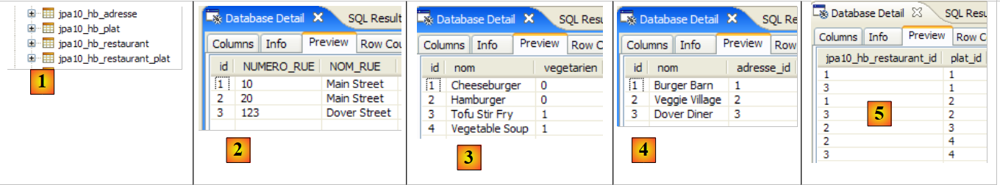 |
- en [1] : les 4 tables de la base
- en [2] : les adresses
- en [3] : les plats
- en [4] : les restaurants. [adresse_id] référence les adresses de [2].
- en [5] : la table de jointure [restaurant,plat]. [jpa10_hb_restaurant_id] référence les restaurants de [4] et [plat_id] les plats de [3]. Ainsi [1,1] signifie que le restaurant " Burger Barn " sert le plat " CheeseBurger ".
Pour obtenir les données ci-dessus, le programme [QueryDB] du projet Eclipse a été exécuté.
2.7.5. Requêtes JPQL avec une console Hibernate
Nous créons une console Hibernate liée au projet Eclipse précédent. On suivra la démarche déjà exposée à deux reprises notamment au paragraphe 2.1.12.
 |
- en [1] et [2] : la configuration de la console Hibernate
 |
- en [3] : une requête JPQL et en [4] le résultat.
- en [5] : l'ordre SQL équivalent
Nous présentons maintenant une série de requêtes JPQL. Le lecteur est invité à les jouer et à découvrir l'ordre SQL généré par Hibernate pour l'exécuter.
Obtenir tous les restaurants avec leurs plats :
 |  |
Obtenir les restaurants servant au moins un plat végétarien :
 |  |
Obtenir les noms des restaurants qui ne servent que des plats végétariens :
 |  |
Obtenir les restaurants qui servent des burgers :
 |  |
2.7.6. QueryDB
Nous nous intéressons maintenant au programme [QueryDB] du projet Eclipse qui :
- remplit la base
- émet dessus un certain nombre de requêtes JPQL. Celles-ci sont enregistrées dans le fichier [META-INF/orm.xml] du projet Eclipse :
 |
Le fichier [orm.xml] peut être utilisé pour configurer la couche JPA en lieu et place des annotations Java. Cela amène de la souplesse dans la configuration de la couche JPA. On peut la modifier sans recompilation des codes Java. On peut utiliser les deux méthodes simultanément : annotations Java et fichier [orm.xml]. La configuration JPA est d'abord faite avec les annotations Java puis avec le fichier [orm.xml]. Si donc on veut modifier une configuration faite par une annotation Java sans recompiler, il suffit de mettre cette configuration dans [orm.xml]. C'est elle qui aura le dernier mot.
Dans notre exemple, le fichier [orm.xml] est utilisé pour enregistrer des textes de requêtes JPQL. Son contenu est le suivant :
<?xml version="1.0" encoding="UTF-8" ?>
<entity-mappings xmlns="http://java.sun.com/xml/ns/persistence/orm" xmlns:xsi="http://www.w3.org/2001/XMLSchema-instance"
xsi:schemaLocation="http://java.sun.com/xml/ns/persistence/orm http://java.sun.com/xml/ns/persistence/orm_1_0.xsd" version="1.0">
<description>Restaurants</description>
<named-query name="supprimer le contenu de la table restaurant">
<query>delete from Restaurant</query>
</named-query>
<named-query name="supprimer le contenu de la table plat">
<query>delete from Plat</query>
</named-query>
<named-query name="obtenir tous les restaurants">
<query>select r from Restaurant r order by r.nom asc</query>
</named-query>
<named-query name="obtenir toutes les adresses">
<query>select a from Adresse a order by a.nomRue asc</query>
</named-query>
<named-query name="obtenir tous les plats">
<query>select p from Plat p order by p.nom asc</query>
</named-query>
<named-query name="obtenir tous les restaurants avec leurs plats">
<query>select r.nom,p.nom from Restaurant r join r.plats p</query>
</named-query>
<named-query name="obtenir les restaurants ayant au moins un plat vegetarien">
<query>select distinct r from Restaurant r join r.plats p where p.vegetarien=true</query>
</named-query>
<named-query name="obtenir les restaurants avec uniquement des plats vegetariens">
<query>
select distinct r1.nom from Restaurant r1 where not exists (select p1 from Restaurant r2 join r2.plats p1 where r2.id=r1.id and
p1.vegetarien=false)
</query>
</named-query>
<named-query name="obtenir les restaurants d'une certaine rue">
<query>select r from Restaurant r where r.adresse.nomRue=:nomRue</query>
</named-query>
<named-query name="obtenir les restaurants qui servent des burgers">
<query>select r.nom,r.adresse.numeroRue, r.adresse.nomRue, p.nom from Restaurant r join r.plats p where p.nom like '%burger'</query>
</named-query>
<named-query name="obtenir les plats du restaurant untel">
<query>select p.nom from Restaurant r join r.plats p where r.nom=:nomRestaurant</query>
</named-query>
</entity-mappings>
- la racine du fichier [orm.xml] est <entity-mappings> (ligne 2).
- lignes 5-7 : les requêtes JPQL nommées font l'objet de balises <named-query name= "... ">texte</namedquery>.
- l'attribut name de la balise est le nom de la requête.
- le contenu texte de la balise est le texte de la requête.
QueryDB va exécuter les requêtes précédentes. Son code est le suivant :
package tests;
...
public class QueryDB {
// Contexte de persistance
private static EntityManagerFactory emf = Persistence.createEntityManagerFactory("jpa");
private static EntityManager em = emf.createEntityManager();
public static void main(String[] args) {
// début transaction
EntityTransaction tx = em.getTransaction();
tx.begin();
// supprimer les éléments de la table [restaurant]
em.createNamedQuery("supprimer le contenu de la table restaurant").executeUpdate();
// supprimer les éléments de la table [plat]
em.createNamedQuery("supprimer le contenu de la table plat").executeUpdate();
// création d'objets Address
Adresse adr1 = new Adresse(10, "Main Street");
Adresse adr2 = new Adresse(20, "Main Street");
Adresse adr3 = new Adresse(123, "Dover Street");
// création d'objets Entree
Plat ent1 = new Plat("Hamburger", false);
Plat ent2 = new Plat("Cheeseburger", false);
Plat ent3 = new Plat("Tofu Stir Fry", true);
Plat ent4 = new Plat("Vegetable Soup", true);
// création d'objets Restaurant
Restaurant restaurant1 = new Restaurant();
restaurant1.setNom("Burger Barn");
restaurant1.setAdresse(adr1);
restaurant1.getPlats().add(ent1);
restaurant1.getPlats().add(ent2);
Restaurant restaurant2 = new Restaurant();
restaurant2.setNom("Veggie Village");
restaurant2.setAdresse(adr2);
restaurant2.getPlats().add(ent3);
restaurant2.getPlats().add(ent4);
Restaurant restaurant3 = new Restaurant();
restaurant3.setNom("Dover Diner");
restaurant3.setAdresse(adr3);
restaurant3.getPlats().add(ent1);
restaurant3.getPlats().add(ent2);
restaurant3.getPlats().add(ent4);
// persistance des objets Restaurant (et des autres objets par cascade)
em.persist(restaurant1);
em.persist(restaurant2);
em.persist(restaurant3);
// fin transaction
tx.commit();
// dump base
dumpDataBase();
// fin EntityManager
em.close();
// fin EntityManagerFactory
emf.close();
}
// affichage contenu de la base
@SuppressWarnings("unchecked")
private static void dumpDataBase() {
// test2
log("données de la base");
// début transaction
EntityTransaction tx = em.getTransaction();
tx.begin();
// affichages restaurants
log("[restaurants]");
for (Object restaurant : em.createNamedQuery("obtenir tous les restaurants").getResultList()) {
System.out.println(restaurant);
}
// affichages adresses
log("[adresses]");
for (Object adresse : em.createNamedQuery("obtenir toutes les adresses").getResultList()) {
System.out.println(adresse);
}
// affichages plats
log("[plats]");
for (Object plat : em.createNamedQuery("obtenir tous les plats").getResultList()) {
System.out.println(plat);
}
// affichages liens restaurants <--> plats
log("[restaurants/plats]");
Iterator record = em.createNamedQuery("obtenir tous les restaurants avec leurs plats").getResultList().iterator();
while (record.hasNext()) {
Object[] currentRecord = (Object[]) record.next();
System.out.format("[%s,%s]%n", currentRecord[0], currentRecord[1]);
}
log("[Liste des restaurants avec au moins un plat végétarien]");
for (Object r : em.createNamedQuery("obtenir les restaurants ayant au moins un plat vegetarien").getResultList()) {
System.out.println(r);
}
// query
log("[Liste des restaurants avec seulement des plats végétariens]");
for (Object r : em.createNamedQuery("obtenir les restaurants avec uniquement des plats vegetariens").getResultList()) {
System.out.println(r);
}
// query
log("[Liste des restaurants dans Dover Street]");
for (Object r : em.createNamedQuery("obtenir les restaurants d'une certaine rue").setParameter("nomRue", "Dover Street").getResultList()) {
System.out.println(r);
}
// query
log("[Liste des restaurants ayant un plat de type burger]");
record = em.createNamedQuery("obtenir les restaurants qui servent des burgers").getResultList().iterator();
while (record.hasNext()) {
Object[] currentRecord = (Object[]) record.next();
System.out.format("[%s,%d,%s,%s]%n", currentRecord[0], currentRecord[1], currentRecord[2], currentRecord[3]);
}
// query
log("[Plats de Veggie Village]");
for (Object r : em.createNamedQuery("obtenir les plats du restaurant untel").setParameter("nomRestaurant", "Veggie Village").getResultList()) {
System.out.println(r);
}
// fin transaction
tx.commit();
}
// logs
private static void log(String message) {
System.out.println(" -----------" + message);
}
}
Le résultat de l'exécution de [QueryDB] est le suivant :
Nous laissons au lecteur, le soin de faire le lien entre le code et les résultats. Pour cela, nous lui conseillons de jouer les requêtes JPQL dans la console Hibernate et d'examiner le code SQL qui va avec.
2.7.7. Le projet Eclipse / Toplink
Le lecteur intéressé trouvera dans les exemples téléchargeables avec ce tutoriel le projet précédent implémenté avec Toplink :
 |
Le projet Eclipse avec Toplink est une copie du projet Eclipse avec Hibernate :
 |
Le fichier <persistence.xml> [2] déclare les entités gérées :
<!-- provider -->
<provider>oracle.toplink.essentials.PersistenceProvider</provider>
<!-- classes persistantes -->
<class>entites.Restaurant</class>
<class>entites.Adresse</class>
<class>entites.Plat</class>
...
- lignes 4-6 : les entités gérées
Les requêtes JPQL enregistrées dans [orm.xml] sont correctement exécutées par Toplink. Pour cela, dans le projet précédent on avait pris soin de ne pas utiliser de requêtes HQL (Hibernate Query Language) qui est de fait un sur-ensemble de JPQL et dont certaines syntaxes ne sont pas acceptées par JPQL.
2.8. Conclusion
Nous terminons ici notre étude des entités JPA. Ce fut long et pourtant des choses importantes (pour le développeur avancé) n'ont pas été faites. De nouveau, il est conseillé de lire un livre de référence tel que celui qui a été utilisé pour ce tutoriel :
[ref1] : Java Persistence with Hibernate, de Christian Bauer et Gavin King, chez Manning.